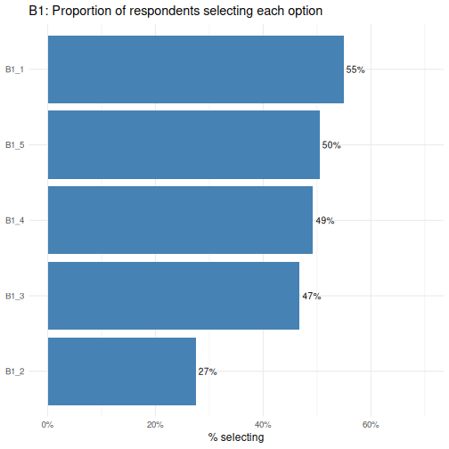
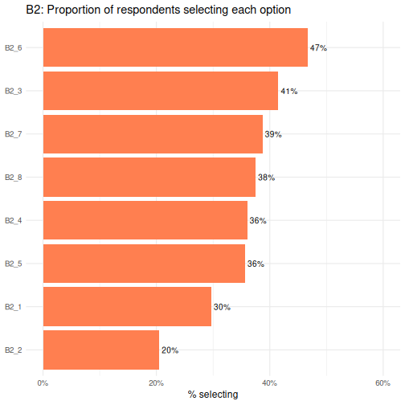
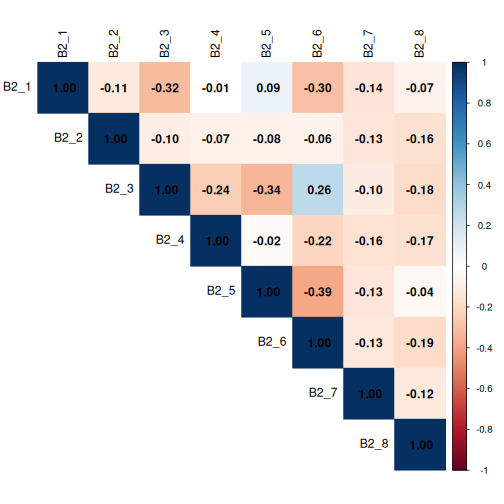
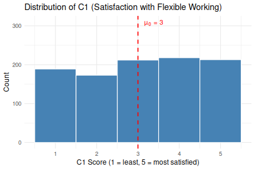
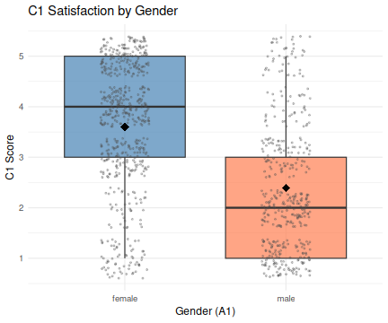
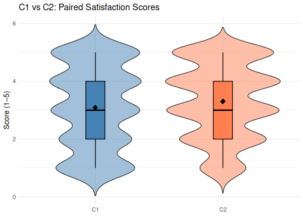

All in One View
Content from R болон RStudio-ийн танилцуулга
Last updated on 2026-05-12 | Edit this page
Overview
Questions
- Та яагаад
RболонRStudioашиглах ёстой вэ? - Та
RболонRStudioдээр хэрхэн ажиллаж эхлэх вэ?
Objectives
-
RболонRStudioхоёрын ялгааг ойлгоорой - Өөр
RStudioсамбаруудын зорилгыг тайлбарлана уу - Файл болон лавлахуудыг
Rтөсөл болгон зохион байгуул
Хүлээн зөвшөөрөлт
Энэ семинарыг Мэдээллийн мужааны хичээлүүдийн R for Ecologists,
ялангуяа introduction-r-rstudio-ын
материалыг ашиглан тохируулсан.
Бусад материал
R болон RStudio гэж юу вэ?
R нь програмчлалын хэл болон R кодыг
ажиллуулдаг програм хангамжийг хэлдэг.
RStudio
нь R скрипт бичих болон R программ хангамжтай харилцахад
хялбар болгох програм хангамжийн интерфейс юм. Энэ бол маш алдартай
платформ бөгөөд RStudio нь бидний эдгээр семинарт ашиглах tidyverse цуврал
багцуудыг хадгалдаг.
Яагаад R сурах вэ?
Таны зөвлөх таныг удаан хугацаанд хамтран ажиллаж байсан хүмүүсийн нэгтэй нь хамтран ажиллахыг санал болгосноор та төсөл дээр ажиллаж байна. Таны зөвлөхийн хэлснээр, энэ хамтрагч маш авъяастай, гэхдээ зөвхөн таны мэдэхгүй хэлээр ярьдаг. Таны зөвлөх таныг хэл сурч эхэлсэн гэж дүгнэхгүй бөгөөд таны асуултад баяртайгаар хариулах болно гэдгийг баталж байна. Гэсэн хэдий ч, хамтран ажиллагч нь бас нэлээд педантик юм. Таныг одоохондоо тэдний хэлээр чөлөөтэй ярьж чадахгүй байгаад тэд дургүйцэхгүй ч тэд үргэлж танд шууд утгаараа хариулах болно.
Та хамтрагчтайгаа холбогдохоор шийдсэн. Тэд танд маш хурдан, бараг тэр даруй ихэнх цагаа и-мэйл илгээдэг. Та тэдний хэлийг дөнгөж сурч байгаа болохоор алдаа гаргах нь элбэг. Заримдаа тэд таныг дүрмийн алдаа гаргасан гэж хэлэх эсвэл таны асуусан зүйл тийм ч утгагүй байгааг анхааруулдаг. Заримдаа эдгээр сэрэмжлүүлгийг ойлгоход хэцүү байдаг, учир нь та үндсэн дүрмээ сайн ойлгодоггүй. Заримдаа танд ямар ч сануулгагүйгээр хариу ирдэг ч энэ нь утгагүй гэдгийг ойлгодог, учир нь таны асуусан зүйл таны хүссэн зүйл биш юм. Энэ хамтрагч ядрахгүйгээр бараг тэр даруй хариулдаг тул та асуултаа хурдан боловсруулж, дахин илгээх боломжтой.
Ингэснээр та хамтрагчынхаа ярьдаг хэл, мөн тэдний ажлын талаар ямар бодолтой байдаг талаар суралцаж эхэлдэг. Эцэст нь та хоёрт хэрхэн үр дүнтэй асуулт асуух, харилцааны явцад гарч болох аливаа асуудлыг хэрхэн шийдвэрлэх талаар ойлгодог сайн ажлын харилцаа бий болно.
Энэ хамтрагчийн нэр R.
Та R руу тушаал илгээх үед танд хариу ирэх болно.
Заримдаа, та алдаа гаргахад танд сайхан, мэдээлэл сайтай алдааны мессеж
эсвэл анхааруулга буцаж ирдэг. Гэсэн хэдий ч заримдаа анхааруулга нь
R-ийн таны мэддэг байснаас хамаагүй “гүнзгий” түвшнийг
илтгэж байх шиг байна. Эсвэл бүр ч дордвол таны илгээсэн тушаал бүрэн
хүчинтэй боловч таны хүссэн зүйл биш учраас та ямар ч анхааруулгагүйгээр
буруу хариулт авч болно. Та эхлээд R-тэй тодорхой
тушаалуудыг цээжлэх эсвэл өөр скриптийг дахин ашиглах замаар амжилттай
ажиллаж магадгүй ч энэ нь харилцан яриа хийхдээ жуулчны хэллэг эсвэл
урьдчилан бичсэн мэдэгдлийн цуглуулга ашиглахтай адил юм. Та алдаа
гаргаж магадгүй (угаалгын өрөө хэрэгтэй үед номын сан руу явах чиглэл
авах гэх мэт), таны уян хатан байдал хязгаарлагдмал байх болно (“хямдхан
дэлгүүр” гэсэн нэр томъёог хайж буй жуулчны гарын авлагаас улайран хайх
гэх мэт).
Энэ нь бид R хэлний зарим үндсэн талуудыг судлахад бага
зэрэг цаг зарцуулах болно гэдгийг хэлж байгаа бөгөөд эдгээр ойлголтууд
нь ggplot2-ээр зураглал хийж сурахтай адил хэрэг болохгүй
байж магадгүй юм. Гэсэн хэдий ч эдгээр илүү үндсэн ойлголтуудыг сурснаар
R өгөгдөл болон кодын талаар хэрхэн боддог, алдааны мэдээг
хэрхэн тайлбарлах, шинэ нөхцөл байдалд ур чадвараа хэрхэн уян хатан
байдлаар өргөжүүлэх талаар ойлголттой болоход тусална.
R нь олон удаа зааж, товшихыг шаарддаггүй бөгөөд энэ нь
сайн хэрэг юм
R нь програмчлалын хэл тул таны шинжилгээний үр дүн нь
дараалсан заах, товших үйлдлийг санахад тулгуурладаггүй, харин дараалсан
бичсэн командуудад тулгуурладаг бөгөөд энэ нь сайн хэрэг! Тиймээс, хэрэв
та илүү их мэдээлэл цуглуулсан тул дүн шинжилгээгээ дахин хийхийг хүсвэл
үр дүнгээ авахын тулд аль товчлуур дээр дарсанаа санах шаардлагагүй; та
зүгээр л скриптээ дахин ажиллуулах хэрэгтэй.
Скрипттэй ажиллах нь таны дүн шинжилгээ хийхдээ ашигласан алхмуудыг тодорхой болгодог бөгөөд таны бичсэн кодыг өөр хүн шалгаж, танд санал хүсэлт өгч, алдааг олж илрүүлэх боломжтой.
Скрипттэй ажиллах нь юу хийж байгаагаа илүү гүнзгий ойлгоход хүргэдэг бөгөөд таны ашиглаж буй аргуудыг сурах, ойлгоход тусална.
R код нь дахин давтагдахад тохиромжтой
Дахин давтагдах чадвар гэдэг нь өөр хэн нэгэн (таны ирээдүйн өөрийгөө оруулаад) ижил дүн шинжилгээг ашиглах үед ижил өгөгдлийн багцаас ижил үр дүнг авч болохыг хэлнэ.
R нь таны кодоос гар бичмэл үүсгэхийн тулд бусад
хэрэгслүүдтэй нэгддэг. Хэрэв та илүү их мэдээлэл цуглуулах эсвэл
өгөгдлийн багц дахь алдааг засвал таны гар бичмэл дэх тоонууд болон
статистик тестүүд автоматаар шинэчлэгддэг.
Өсөн нэмэгдэж буй сэтгүүлүүд болон санхүүжүүлэгч агентлагууд дүн
шинжилгээг дахин давтагдах боломжтой гэж найдаж байгаа тул
R-ийг мэдэх нь эдгээр шаардлагуудыг биелүүлэх боломжийг
танд олгоно.
R нь салбар дундын шинж чанартай бөгөөд өргөтгөх
боломжтой
R нь өөрийн чадавхийг өргөжүүлэхийн тулд суулгаж болох
хэдэн арван мянган багцын хамт олон шинжлэх ухааны салбаруудын статистик
хандлагыг нэгтгэн өгөгдөлдөө дүн шинжилгээ хийхэд шаардлагатай аналитик
системд хамгийн сайн тохирох тогтолцоог бий болгодог. Жишээлбэл,
R нь зургийн шинжилгээ, GIS, цаг хугацааны цуврал,
популяцийн генетик болон бусад олон багцтай.
R нь бүх хэлбэр, хэмжээтэй өгөгдөл дээр ажилладаг
R ашиглан сурсан ур чадвар тань өгөгдлийн багцын
хэмжээгээр хялбархан хэмжигддэг. Таны өгөгдлийн багц хэдэн зуун эсвэл
сая сая мөртэй эсэхээс үл хамааран энэ нь танд нэг их ялгаагүй.
R нь өгөгдөлд дүн шинжилгээ хийхэд зориулагдсан. Энэ нь
тусгай өгөгдлийн бүтэц, өгөгдлийн төрлүүдийн хамт ирдэг бөгөөд энэ нь
дутуу өгөгдөл болон статистик хүчин зүйлсийг боловсруулахад хялбар
болгодог.
R нь гео орон зайн өгөгдөл зэрэг олон төрлийн файлын
өгөгдлийг уншиж, дотоод болон алсын мэдээллийн сантай холбогдох
боломжтой.
R нь өндөр чанартай график үүсгэдэг
R нь график дүрслэх чадвар сайтай бөгөөд
ggplot2 багц нь өнөөдөр байгаа зураг зурах программ
хангамжийн хамгийн хүчирхэг хэсэг биш юмаа гэхэд нэг юм. Хэрэв та хүсвэл
бид ggplot2-г дараагийн сургалтуудад ашиглаж сурах
боломжтой.
R нь том, найрсаг нийгэмлэгтэй
Өдөр бүр олон мянган хүмүүс R ашигладаг. Тэдний олонх нь Stack Overflow эсвэл
RStudio community
гэх мэт захидлын жагсаалт болон вэбсайтаар дамжуулан танд туслахад бэлэн
байна.
R судлаачдын дунд маш их алдартай байдаг тул ихэнх
тусламжийн нийгэмлэг болон сургалтын хэрэглэгдэхүүн нь бусад судлаачдад
чиглэгддэг. Python нь R-тэй төстэй хэл бөгөөд
ижил төрлийн олон ажлыг гүйцэтгэх боломжтой боловч программ хангамж
хөгжүүлэгчид болон программ хангамжийн инженерүүд өргөнөөр ашигладаг тул
Python-ын нөөц болон нийгэмлэгүүд судлаачдад тийм ч
чиглээгүй байдаг.
RStudio чиглүүлж байна
Бид RStudio хөгжүүлэлтийн нэгдсэн орчинг
(IDE) ашиглан скрипт болгон код бичих, R кодыг ажиллуулах,
компьютер дээрх файлуудыг удирдах, R дээр үүсгэсэн
объектуудаа шалгах, хийсэн графикуудаа харах болно. RStudio нь
хувилбарыг хянах, R багцуудыг хөгжүүлэх, Shiny
програм бичих зэрэгт туслах олон боломжуудтай боловч бид энэ семинарт
эдгээрийг авч үзэхгүй.

Дээрх дэлгэцийн агшинд бид өгөгдмөл байрлал дахь 4 “цавх”-ыг харж болно:
- Зүүн дээд талд: скрипт болон бусад файлуудыг харуулдаг
Sourceхэсэг.- Хэрэв танд зөвхөн 3 цонх байгаа бөгөөд Консолын хэсэг зүүн дээд талд
байгаа бол
Shift+Cmd+N(Mac) эсвэлShift+Ctrl+N(WindowsэсвэлLinux) дээр даржRскриптийг нээснээрSourceцонх гарч ирнэ.
- Хэрэв танд зөвхөн 3 цонх байгаа бөгөөд Консолын хэсэг зүүн дээд талд
байгаа бол
- Баруун дээд талд:
Environment/Historyхэсэг нь таны одоогийн R сесс (Environment) болон тушаалын түүх (History) доторх бүх объектыг харуулдаг.- энд
Connections,Build,Tutorial, магадгүйGitзэрэг өөр хэдэн таб байна - Бид бусад табуудын аль нэгийг нь хамрахгүй, гэхдээ
RStudioнь өөр олон ашигтай функцуудтай
- энд
- Зүүн доод талд:
Consoleсамбар, таRкомандыг тайлбарлаж, үр дүнг хэвлэдэгRконсолтой шууд харилцах боломжтой.- Мөн
TerminalболонJobs-д зориулсан табууд бий
- Мөн
- Баруун доод талд:
Files/Plots/Help/Viewerхэсэг нь файлууд руу шилжих эсвэл график болон тусламжийн хуудсыг үзэх
Та эдгээр цонхны байршлыг өөрчлөхөөс гадна RStudio
өнгөний схем, фонт, тэр ч байтугай гарын товчлол зэрэг олон тохиргоог
өөрчлөх боломжтой. Та цэсийн мөрөнд очоод
Tools → Global Options дээр дарснаар эдгээр тохиргоонд
хандах боломжтой.
RStudio нь R дээр ажиллахад шаардлагатай
ихэнх зүйлсийг нэг цонхонд оруулахаас гадна гарын товчлол, кодыг
автоматаар бөглөх, синтакс тодотгох зэрэг функцуудыг агуулдаг (янз
бүрийн төрлийн кодууд өөр өөр өнгөтэй байдаг тул таны кодыг удирдахад
хялбар болгодог).
RStudio-д тохируулж байна
Төслөө эхнээс нь хавтас болгон зохион байгуулах нь сайн туршлага тул бид одооноос энэ зуршлыг бий болгож эхэлнэ. Сайн зохион байгуулалттай төслийг удирдахад илүү хялбар, дахин давтагдах боломжтой, бусадтай хуваалцахад хялбар байдаг. Таны төсөл дэд хавтас болгон зохион байгуулагдсан өгөгдөл, скрипт, зураг зэрэг төсөлд шаардлагатай бүх зүйлийг агуулсан дээд түвшний хавтсаас эхлэх ёстой.
RStudio нь R дахь бие даасан төсөл дээр
ажиллахад хялбар болгох боломжтой Projects функцээр
хангадаг. Бид project-ыг бий болгож, энэ семинарт зориулж
бүх зүйлийг хадгалах болно.
-
RStudio-г эхлүүлнэ үү (та дээрх дэлгэцийн зурагтай төстэй харагдах болно). - Баруун дээд буланд та цэнхэр 3D шоо болон
Project: (None)гэсэн үгсийг харах болно. Энэ дүрс дээр дарна уу. - Унждаг цэснээс
New Projectдээр дарна уу. -
New Directory, дараа ньNew Projectдээр товшино уу. -
intro_rгэх мэт төслийн нэрийг бичнэ үү -
Create project as a subdirectory of:хэсгийг ашиглан тохиромжтой газар байрлуул. Бид таныDesktop-г санал болгож байна. Та төслийг дараа нь өөр газар шилжүүлж болно, учир нь энэ нь бие даасан байх болно. -
Create Projectдээр дарвал таны шинэ төсөл нээгдэнэ.
Дараагийн удаа та RStudio-г нээхдээ тэр 3D шоо дүрс дээр
товших ба одоо байгаа төслүүдийг нээх сонголтууд гарч ирнэ, тухайлбал
таны хийсэн төсөл.
RStudio Projects-ийн давуу талуудын нэг нь ажлын
лавлах-ыг төслийн дээд түвшний хавтас руу автоматаар
тохируулдаг явдал юм. Ажлын лавлах нь R-ийн ажиллаж байгаа хавтас тул
бүх файлуудын (өгөгдөл, скриптийг оруулаад) байршлыг ажлын лавлахтай
харьцуулан хардаг. Та ажлын лавлахыг шууд тохируулдаг
setwd("/Users/YourUserName/MyCoolProject") гэх мэт
скриптүүдтэй таарч магадгүй. Энэ нь ихэвчлэн зөөврийн хувьд хамаагүй
бага байдаг, учир нь тухайн лавлах нь хэн нэгний компьютер дээр олдохгүй
байж магадгүй (тэд тантай ижил хэрэглэгчийн нэргүй байж магадгүй).
RStudio төслүүдийг ашигласнаар бид ажлын лавлахыг гараар
тохируулах шаардлагагүй болно.
Бид ажлынхаа давтагдах чадварыг сайжруулахын тулд хэд хэдэн тохиргоог
хийх шаардлагатай болно. Өөрийн цэс рүү очоод
Tools → Global Options дээр дарж Options
цонхыг нээнэ үү.

Таны тохиргоо шараар тодруулсантай таарч байгаа эсэхийг шалгаарай.
Бид RStudio-д бидний R сессийн одоогийн статусыг хадгалж,
дараагийн удаа R-ийг эхлүүлэхэд дахин ачаалахыг хүсэхгүй
байна. Энэ нь эвтэйхэн мэт санагдаж болох ч дахин давтагдахын тулд бид
ажиллах бүртээ цэвэр, хоосон R сессээр эхлэхийг хүсдэг. Энэ нь бид
хийсэн бүх зүйлээ скрипт болгон бичиж, шаардлагатай бүх өгөгдлийг файл
болгон хадгалах, зураг гэх мэт гаралтыг файл болгон хадгалах ёстой гэсэн
үг юм. Бид нэг R сессийн дотор үүсгэсэн бүх зүйлээ нэг
удаагийн байхад дасахыг хүсч байна. Бид скриптүүдээ өгөгдөл гэх мэт
“түүхий эд”-ээс өөр хэрэгцээтэй зүйлсийг сэргээх чадвартай байхыг хүсч
байна.
Төслийн лавлахыг зохион байгуулж байна
Бүх шинэ төслүүддээ хавтасны бүтцийг ашиглах нь өсөн нэмэгдэж буй төслийг эмх цэгцтэй байлгахад тусалж, ирээдүйд файл хайхад хялбар болгоно. Хэрэв та олон төсөл дээр ажиллаж байгаа бол энэ нь ялангуяа ашигтай байдаг, учир нь та тодорхой төрлийн файлуудыг хаанаас хайхаа мэддэг болно.
Бид энэ семинарт үндсэн бүтцийг ашиглах бөгөөд энэ нь ихэвчлэн эхлэхэд тохиромжтой газар бөгөөд таны хэрэгцээнд нийцүүлэн өргөтгөх боломжтой. Семинараар дамжих явцад бидний дуусгах бүтцийг тодорхойлсон диаграмм энд байна.
intro_r
│
└── scripts
│
└── data
│ └── cleaned
│ └── raw
│
└─── images
│
└─── documentsМанай төслийн хавтсанд (intro_r) эхлээд бидний бичсэн
скриптүүдийг хадгалах scripts хавтас бий. Мөн бид
cleaned болон raw дэд хавтас агуулсан
data хавтастай болно. Ерөнхийдөө та raw-н
датаг бүрэн хөндөгдөөгүй байлгахыг хүсч байгаа тул тухайн хавтсанд
өгөгдөл оруулсны дараа та үүнийг өөрчлөхгүй. Харин та үүнийг R дээр
уншиж, хэрэв та ямар нэгэн өөрчлөлт хийвэл cleaned хавтас
руу өөрчилсөн файлаа бичнэ. Мөн бид өөрсдийн хийсэн зурагт зориулсан
images хавтас, таны гаргаж болох бусад баримт бичигт
зориулсан documents хавтастай.
Шинэ скрипт хавтас хийж эхэлцгээе.
Files хэсэг рүү (баруун доод талд) очиж,
одоогийн лавлахыг шалгана уу. Та саяхан хийсэн төслийн лавлахад
intro_r байх ёстой. Та энд ямар ч фолдер хараахан
харагдахгүй байна.

Дараа нь New Folder товчийг дараад
scripts гэж бичээд scripts хавтсаа үүсгэнэ үү.
Энэ нь одоо Файлын жагсаалтад гарч ирэх ёстой.
Files хэсэг нь танд файл үүсгэх, олох,
нээхэд тусалдаг боловч таны файлуудаар шилжихэд таны төслийн
ажлын директор хаана байгааг өөрчлөхгүй гэдгийг
тэмдэглэх нь зүйтэй.
R болон RStudio дээр ажиллаж байна
Програмчлалын үндэс нь бид компьютерийг дагаж мөрдөх зааварчилгааг бичиж, дараа нь компьютерт эдгээр зааврыг дагахыг хэлдэг. Бид эдгээр зааврыг код хэлбэрээр бичдэг бөгөөд энэ нь компьютер болон хүмүүст ойлгомжтой нийтлэг хэл юм (зарим дасгал хийсний дараа). Бид эдгээр зааврыг команд гэж нэрлэдэг ба командуудыг ажиллуулах (мөн * гүйцэтгэх* гэж нэрлэдэг) зааврыг дагаж мөрдөхийг компьютерт хэлдэг.
Консол ба скрипт
Та тушаалуудыг R консол дээр шууд ажиллуулж болно, эсвэл
R скрипт рүү бичиж болно. Энэ нь консол дээр ажиллах,
скрипт дээр ажиллахыг хоол хийхтэй адил зүйл гэж үзэхэд тустай байж
магадгүй юм. Консол нь шинэ жор зохиохтой адил боловч юу ч бичихгүй. Та
хэд хэдэн алхмуудыг хийж, эцэст нь сайхан, амттай хоол хийж болно. Гэсэн
хэдий ч та юу ч бичээгүй тул яг юу хийсэн, ямар дарааллаар хийснээ
ойлгоход хэцүү байдаг.
Скрипт бичих нь хоол хийж байхдаа сайхан тэмдэглэл хөтлөхтэй адил юм- та хүссэн бүх жороо өөрчилж, засварлаж болно, 6 сарын дараа буцаж ирээд дахин оролдож болно, юу сайн болсон, юу нь болохгүй байсныг санах гэж оролдох шаардлагагүй. Энэ нь үнэндээ хоол хийхээс ч хялбар, учир нь та нэг товчлуур дээр дарахад компьютер таны жорыг бүхэлд нь “хоолдох” болно!
Скриптүүдийн нэмэлт давуу тал бол та өөртөө болон бусад хүмүүст
сэтгэгдэл үлдээх боломжтой юм. #-оор
эхэлсэн мөрүүдийг сэтгэгдэл гэж үзэх ба R код гэж
тайлбарлахгүй.
Консол
-
Rконсол нь кодыг ажиллуулах/гүйцэтгэх газар юм -
>тэмдэг болох prompt нь команд бичих боломжтой газар юм -
Enter-г дарснаарRэдгээр командуудыг гүйцэтгэж үр дүнг хэвлэнэ. - Та энд ажиллах боломжтой бөгөөд таны түүх
Historyхэсэгт хадгалагдах боловч цаашид үүнд хандах боломжгүй.
Скрипт
- Та
File → New File → R Scriptдээр дарж,RStudio-ын зүүн дээд буланд байрлах ногоон+товчлуур дээр дарж эсвэлShift+Cmd+N(Mac) эсвэлShift+Ctrl+N(WindowsбаLinux) дээр дарж шинэRскрипт үүсгэж болно. Үүнийг хадгалахгүй бөгөөдUntitled1гэж нэрлэнэ - Хэрэв та скриптэд
Rкодын мөрүүдийг бичвэлRконсол руу илгээж, үнэлгээ өгөх боломжтой.-
Cmd+Enter(Mac) эсвэлCtrl+Enter(WindowsбаLinux) таны курсор асаалттай байгаа кодын мөрийг ажиллуулна. - Хэрэв та олон мөр кодыг тодруулбал
Cmd+Enter(Mac) эсвэлCtrl+Enter(WindowsбаLinux) дээр дарж бүгдийг нь ажиллуулж болно. - Скрипт дэх командуудыг хадгалснаар та тэдгээрийг хурдан засварлаж, дахин ажиллуулж, дараа нь хадгалах, бусадтай хуваалцах боломжтой.
- Та
#гэсэн мөрийг эхлүүлснээр өөртөө сэтгэгдэл үлдээх боломжтой
-
Жишээ
Консол болон скрипт дээр зарим кодыг ажиллуулж үзье. Эхлээд Консолын
хэсэгт доош товшоод 1+1 гэж бичнэ үү. Кодыг ажиллуулахын
тулд Enter дээр дарна уу. Та өөрийн кодыг
цуурайтаж, 2-ын утга буцаж ирэхийг харах ёстой.
Одоо хоосон скрипт дээрээ дараад 1+1 гэж бичнэ үү.
Курсороо энэ мөрөнд тавиад Cmd+Enter
(Mac) эсвэл Ctrl+Enter
(Windows ба Linux) дээр дарж кодыг ажиллуулна
уу. Таны кодыг скриптээс консол руу илгээж, 2 утгыг
буцаасныг харах болно, яг л та консол дээр кодоо шууд ажиллуулсан
шиг.
-
Rнь програмчлалын хэл бөгөөд тухайн хэл дээрх тушаалуудыг ажиллуулах программ хангамж юм -
RStudioньR-д код бичих, ажиллуулахад хялбар болгох програм хангамж юм - Ажлаа эмх цэгцтэй, бие даасан байлгахын тулд
R Projects-г ашиглаарай - Дахин давтагдах, зөөвөрлөхийн тулд кодоо скриптээр бичээрэй
Content from R Packages, Markdown болон Notebooks-н танилцуулга
Last updated on 2026-05-12 | Edit this page
Overview
Questions
-
R packageгэж юу вэ? -
Rбагцуудыг хэрхэн суулгах вэ? -
R MarkdownбаR Notebooksгэж юу вэ? - Би
Rкодыг текст болон графиктай хэрхэн нэгтгэх вэ? - Би хэрхэн
.Rmdфайлыг.htmlболгон хөрвүүлэх вэ?
Objectives
-
R packageгэж юу болохыг ойлгоорой -
packagesтабыг ашиглан багцуудыг суулгана уу. -
Rкодыг ашиглан багцуудыг суулгана уу. -
R MarkdownболонR Notebooks-ийн үндсэн синтаксийг ойлгох
Хүлээн зөвшөөрөлт
Энэхүү семинарыг Дата мужааны хичээлүүдийн материалыг ашиглан
тохируулсан R for Social Scientists,
ялангуяа lesson 00-intro
болон lesson 06-rmarkdown.
Бусад материал
R packages гэж юу вэ?
R Packages нь үндсэн
нэгжүүд юм дахин давтагдах боломжтой R код. Эдгээр нь дахин
ашиглах боломжтой R функцүүдийн цуглуулга юм. жишээ
өгөгдөл, хэрхэн ашиглахыг тодорхойлсон баримт бичиг функцууд.
Үндсэн R болон багцуудын хооронд ямар ялгаа байдаг
вэ?
base R package
R-г хэлээр ажиллах боломжийг олгодог үндсэн функцуудыг
агуулсан:
- Арифметик
- Оролт/гаралт
- Програмчлалын үндсэн дэмжлэг гэх мэт
R програм хангамжийг base R багц суулгасан
үед түгээдэг. онд base R суулгацаас гадна 20,000 гаруй
суулгац бий R-ийн үйл ажиллагааг өргөтгөхөд ашиглаж болох
нэмэлт багцууд. Эдгээрийн ихэнхийг R хэрэглэгчид бичсэн
бөгөөд ашиглах боломжтой болгосон
Comprehensive R Archive Network-д байршуулсантай адил
төвлөрсөн хадгалах газруудад CRAN,
хүн бүр өөрийн R орчинд татаж аваад суулгах боломжтой.
CRAN
нь дэлхий даяар хадгалдаг ftp болон вэб серверүүдийн сүлжээ юм
R-д зориулсан код болон баримт бичгийн ижил, сүүлийн үеийн
хувилбарууд.
R код болон packages табыг ашиглан
багцуудыг суулгаж байна
Бид энэ семинарт tidyverse болон here
багцуудыг ашиглах болно.
Та эдгээр багцуудыг командыг бичээд консолоос суулгаж болно
install.packages(), эсвэл packages табаас.
Бид консолоос tidyverse, багцаас here-г
суулгана. таб.
R
install.packages("tidyverse")
OUTPUT
The following package(s) will be installed:
- tidyverse [2.0.0]
These packages will be installed into "/home/rstudio/lesson/renv/profiles/lesson-requirements/renv/library/linux-ubuntu-noble/R-4.5/x86_64-pc-linux-gnu".
# Installing packages --------------------------------------------------------
[32m✔[0m tidyverse 2.0.0 [linked from cache]
Successfully installed 1 package in 4.2 milliseconds.Та packages-оос багц суулгасан эсэхийг харах боломжтой
таб (анхдагчаар баруун доод талд). Та мөн тушаал бичиж болно
installed.packages()-г консол руу оруулаад гаралтыг шалгана
уу.

Мөн packages табаас багцуудыг суулгаж болно.
packages дээр таб дээр Install дүрс дээр
товшоод багцын нэрийг бичиж эхлээрэй Та текст хайрцагт оруулахыг хүсч
байна. Таныг бичиж байх үед таны эхлэлд тохирсон багцууд тэмдэгтүүд доош
унадаг жагсаалтад гарч ирэх бөгөөд ингэснээр та сонгох боломжтой
тэд.

Install Packages цонхны доод талд
Install-ийг шалгах нүд байна хамаарал. Энэ нь анхдагчаар
тэмдэглэгдсэн байдаг бөгөөд энэ нь ихэвчлэн таны хүссэн зүйл юм. Багцууд
нь бусад зүйлд суулгасан функцуудыг ашиглаж чаддаг (мөн хийдэг).
багцууд, тиймээс багцад агуулагдах функцүүдийн хувьд та зөв ажиллахын
тулд суулгаж байгаа бол өөр багцууд байж болно тэдэнтэй хамт суулгана.
Install dependencies сонголт нь баталгаажуулдаг ийм зүйл
болдог гэж.
Дасгал хийх
Packages табыг ашиглан та tidyverse болон
хоёулаа байгаа гэдгээ баталгаажуулна уу here багц
суулгасан.
Багцын табыг доош гүйлгэж tidyverse руу очно уу. Та мөн
цөөн хэдэн зүйлийг бичиж болно тэмдэгтүүдийг хайлтын талбарт оруулна.
tidyverse багц нь үнэхээр a ggplot2 болон
dplyr зэрэг багц багц бусад багцуудыг зөв ажиллуулахыг
шаарддаг. Эдгээр бүх багцууд байх болно автоматаар суулгана. Өмнө нь
ямар багц байсан бэ гэдгээс хамаарна Таны R орчинд суулгасан бол
tidyverse-г суулгаж болно маш хурдан эсвэл хэдэн минут
болно. Суулгац үргэлжилж байх үед, түүний явцтай холбоотой мессежийг
консол дээр бичих болно. Та байгаа бүх багцыг харах боломжтой болно
суулгасан.
Суулгах процесс нь CRAN репозитор руу ханддаг тул танд
хэрэгтэй болно багцуудыг суулгах интернет холболт.
Мөн бусад репозитороос багц суулгах боломжтой Github
эсвэл локал файлын системийн хувьд бид эдгээрийг үзэхгүй Энэ семинар
дахь сонголтууд.
R Markdown болон R Notebooks
R Markdown нь танд ямар ч саадгүй хийх боломжийг олгодог
уян хатан төрлийн баримт бичиг юм гүйцэтгэх боломжтой R код
болон түүний гаралтыг тексттэй нэг дор нэгтгэнэ баримт бичиг.
R Notebook нь R Markdown-д зориулсан тусгай
интерактив гүйцэтгэх горим юм (Rmd) баримт бичиг. Кодын
хэсгүүдийг бие даан, интерактив байдлаар гүйцэтгэдэг
RStudio засварлагч дотор.
R Markdown баримтыг олон статик болон хувиргах боломжтой
PDF (.pdf), Word (.docx) болон HTML зэрэг динамик гаралтын форматууд
(.html).
Сайн бэлтгэсэн R Markdown эсвэл Notebook
баримт бичгийн үр өгөөж дүүрэн байна давтах чадвар. Хэрэв та өгөгдөл
анзаарсан бол энэ нь бас гэсэн үг юм транскрипцийн алдаа, эсвэл та
шинжилгээндээ илүү их мэдээлэл нэмэх боломжтой, Та тайланд өөрчлөлт
оруулахгүйгээр дахин эмхэтгэх боломжтой болно бодит баримт бичиг.
R Notebook файл үүсгэж байна
RStudio-д шинэ R Markdown документ
үүсгэхийн тулд File -> New File -> R Notebook дээр
товшино уу. Танаас шаардлагатай багцуудыг суулгахыг шаардаж магадгүй Та
үүнийг анх удаа хийж байна.
R Notebook-н үндсэн бүрэлдэхүүн хэсгүүд
YAML Толгой хэсэг
Гаралтыг удирдахын тулд YAML (YAML
тэмдэглэгээний хэл биш) толгой хэсэг байна. хэрэгтэй:
---
title: "My Awesome Report"
output: html_document
---Гарчиг нь эхэнд байгаа гурван зураасаар тодорхойлогддог
(---) ба төгсгөлд байгаа гурван зураас
(---).
YAML-д шаардлагатай цорын ганц талбар нь
output: бөгөөд энэ нь таны хүссэн гаралтын төрөл. Энэ нь
html_document байж болно, a pdf_document,
эсвэл word_document. Бид HTML-ээс эхэлнэ баримтжуулж, дараа
нь бусад хувилбаруудыг хэлэлцэнэ.
Гарчигны дараа баримт бичгийн үндсэн хэсгийг эхлүүлэхийн тулд та
бичиж эхэлнэ YAML толгой хэсгийн төгсгөлийн дараа (жишээ
нь, хоёр дахь ----ийн дараа).
Markdown синтакс
Markdown бол формат нэмэх боломжийг олгодог түгээмэл
тэмдэглэгээний хэл юм болд, налуу,
code зэрэг текстийн элементүүд. The форматлах нь
тэмдэглэгээ (.md) баримт бичигт шууд харагдахгүй, Та Word баримтаас харж
байгаа шиг. Харин та Markdown синтакс нэмнэ текст рүү,
дараа нь өөр өөр файл болгон хөрвүүлэх боломжтой Markdown
синтаксийг орчуулах. Markdown нь ашигтай учраас ашигтай
хөнгөн, уян хатан, платформоос хамааралгүй.
RStudio нь форматыг бодит цагийн урьдчилан харах
боломжийг олгодог- дээр дарна уу Visual чихийг дарж
Markdown-ийг, эсвэл Source-г түүгээр түүгээр
дарна уу. Markdown.
Гарчиг
Текстийн өмнө байрлах # нь Markdown-д энэ
текст нь a гарчиг. Илүү олон # нэмэх нь гарчгийг
жижигрүүлнэ, өөрөөр хэлбэл нэг # нь эхний түвшний гарчиг,
хоёр ## нь хоёрдугаар түвшний гарчиг гэх мэт 6-р түвшний
гарчиг.
# Title
## Section
### Sub-section
#### Sub-sub section
##### Sub-sub-sub section
###### Sub-sub-sub-sub section(дээрх нь бас ашиглагдаж байгаа бол зөвхөн түвшинг ашиглана уу)
Форматлах
Үгийг давхараар хүрээлүүлснээр та аливаа зүйлийг
зоригтой болгож чадна од, **bold**, эсвэл
давхар доогуур зураас, __bold__; болон налуу
зураас ганц од, *italics*, эсвэл нэг доогуур зураас
ашиглан, _italics_.
Та мөн болд болон налуу-г хослуулан ямар
нэгэн зүйл бичиж болно үнэхээр гурвалсан
одтой, ***really*** эсвэл чухал доогуур зураас,
___really___; мөн, хэрэв та зоригтой санагдаж байвал
(зохистой үг хэллэг) та мөн од болон доогуур зураасыг хослуулан ашиглаж
болно. **_really_**, **_really_**.
code-type фонт үүсгэхийн тулд үгийг арын тэмдэгээр
хүрээлээрэй. `code-type`.
Кодын хэсгүүд
Кодын хэсгүүд нь R кодыг бичиж, гүйцэтгэх блокууд юм. Тэд эхэлдэг
```{r} and end with ```-тай.
Хэсэг оруулахын тулд Insert товчлуурын хажууд байрлах
жижиг сумыг товшино уу засварлагч хэрэгслийн мөрийг сонгоод
R-г сонгоно уу.
Chunk ажиллуулахын тулд баруун талд байгаа жижиг ногоон тоглох сумыг
дарна уу хэсэг буюу Windows болон Linux дээр
Ctrl+Alt+I гарын товчлолыг (эсвэл
Mac дээр Cmd+Option+I)
ашиглана уу.
Notebook-аа буулгаж, хуваалцаарай
Шинжилгээ хийж дууссаны дараа та эцсийн өнгөлгөөг үүсгэж болно тайлан.
RStudio засварлагчийн самбар дээрх Preview
(эсвэл Render) товчийг дарна уу.
Энэ нь бие даасан HTML файлыг (эсвэл PDF/Word баримтаас хамаарч)
үүсгэдэг YAML толгой хэсэгт байгаа тохиргоонууд дээр)
өгүүллийг хоёуланг нь багтаасан болно текст болон эцсийн үр дүн.
Та энэ гаралтын файлыг бусадтай хуваалцахгүй байсан ч хялбархан
хуваалцаж болно R ашиглах.
Одоо бид хэд хэдэн зүйлийг сурсан тул энэ нь хэрэг болж магадгүй юм тэдгээрийг хэрэгжүүлэх.
Өөрийн шинэ R Notebook үүсгэнэ үү
Шинэ R Notebook:
Click File -> New File -> R Notebook нээж эхэл
Та шинэ R Notebook нээх үед зарим тайлбар текстийг өгсөн
болно. Энэ устгаж болох тул та өөрийн текст болон кодыг оруулах
боломжтой.
Өгөгдлийг татаж авах
Бид SAFI_clean.csv нэртэй өгөгдлийн багцыг ашиглах
болно. Шууд татаж авах Энэ файлын холбоос нь: https://github.com/datacarpentry/r-socialsci/blob/main/episodes/data/SAFI_clean.csv.
Энэ өгөгдөл нь SAFI Survey Results-н бага зэрэг
цэвэршүүлсэн хувилбар юм дээр боломжтой figshare.
Эхлээд бид үүнийг хадгалахын тулд data нэртэй шинэ
хавтас үүсгэх хэрэгтэй өгөгдлийн багц. Файлын хэсэг рүү очоод
data нэртэй шинэ хавтас үүсгэнэ үү cleaned
болон raw гэж нэрлэгддэг хоёр дэд хавтас.
intro_r
│
└── scripts
│
└── data
│ └── cleaned
│ └── raw
│
└─── images
│
└─── documentsТа үүнд ашигласан SAFI_clean.csv датасетийг татаж авах
боломжтой GitHub линкээс эсвэл R-тай семинар. Та файлыг
эндээс татаж авах боломжтой энэ GitHub link
мөн үүнийг data/raw лавлахдаа SAFI_clean.csv
болгон хадгална уу үүсгэсэн. Эсвэл үүнийг хуулж буулгах замаар
R-с шууд хийж болно таны консол дээр:
download.file( "https://raw.githubusercontent.com/datacarpentry/r-socialsci/main/episodes/data/SAFI_clean.csv", "data/raw/SAFI_clean.csv", mode = "wb" )
Танилцуулга хэсгийг эхлүүлнэ үү
Introduction нэртэй гарчиг хийж, тайлбар бичвэр оруулна
уу таны тайланд байх өгөгдлийн багцын талаар. Жишээ нь:
Энэ тайланд SAFI-ын хамт
tidyverse багцыг ашигладаг өгөгдлийн багц
бөгөөд үүнд дараах баганууд багтана:
- village
- interview_date
- no_members
- years_liv
- respondent_wall_type
- roomsТа мөн тоонуудыг ашиглан дараалсан жагсаалтыг үүсгэж болно:
1. village
2. interview_date
3. no_members
4. years_liv
5. respondent_wall_type
6. roomsМөн tab-доголоор үүрлэсэн зүйлс:
- village
- Name of village
- interview_date
- Date of interview
- no_members
- How many family members lived in a house
- years_liv
- How many years respondent has lived in village or neighbouring
village
- respondent_wall_type
- Type of wall of house
- rooms
- Number of rooms in houseMarkdown синтаксийн дэлгэрэнгүй мэдээллийг the following reference guide
үзнэ үү.
Одоо бид preview дээр дарж баримтыг
HTML болгон хувиргаж болно. Эх сурвалжийн дээд хэсэгт байрлах товчлуур
(зүүн дээд талд). Хэрэв та хадгалаагүй бол Баримт бичиг хараахан байгаа
бол та preview-д орох үед үүнийг хийхийг
сануулах болно анх удаа.
R Markdown тайлан бичиж байна
Одоо бид харуулахын тулд R код нэмнэ (бид энэ талаар
илүү ихийг мэдэх болно Энэ кодыг дараагийн семинарт оруулна уу!).
Эхлээд бид tidyverse ачаалагдсан
эсэхийг шалгах хэрэгтэй. Энэ нь хангалттай биш юм
tidyverse-г консолоос ачаал, бид үүнийг
өөрийн дотор ачаалах шаардлагатай болно R Notebook. Манай
өгөгдөлд мөн адил хамаарна. Эдгээрийг ачаалахын тулд бид Манай баримт
бичгийн дээд талд (доорх) “кодын хэсэг” үүсгэх шаардлагатай болно
YAML толгой).
Кодын хэсгийг Code \> Insert Chunk дээр дарж эсвэл
дарж оруулж болно гарын товчлолыг ашиглан
Ctrl+Alt+I Windows болон
Linux, Cmd+Option+I дээр
Mac дээр.
Кодын синтакс нь:
R Markdown баримт бичиг нь тайлангийн хэсэг биш гэдгийг
мэддэг хэсгийг эхлүүлж дуусгадаг (```) -аас. Энэ нь бас
мэддэг Хэсэг доторх код нь r доторх R код байна буржгар
хаалт ({}). r-ийн дараа та кодын хэсэгт нэр
нэмж болно . Хэсэг хэсгийг нэрлэх нь сонголттой боловч санал болгож
байна. Хэсэг бүр нэр байх ёстой өвөрмөц бөгөөд зөвхөн үсэг, тоон
тэмдэгтүүд болон - агуулсан.
tidyverse болон манай
SAFI_clean.csv файлыг ачаалахын тулд бид дараахыг оруулна.
chunk болон үүнийг “тохиргоо” гэж нэрлэнэ. Учир нь бид энэ код эсвэл
гаралтыг хүсэхгүй байна Бидний үзүүлсэн HTML баримт бичигт харуулахын
тулд бид include = FALSE-г нэмнэ кодын хэсэгчилсэн нэрний
дараах сонголт ({r setup, include = FALSE}).
MARKDOWN
```{r setup, include = FALSE}
library(tidyverse)
library(here)
interviews <- read_csv(here("data/raw/SAFI_clean.csv"), na = "NULL")
```Чухал тэмдэглэл!
.Rmd баримт бичигт өгсөн файлын замууд, жишээ нь. .csv файлыг ачаалах, .Rmd баримт бичигтэй харьцангуй бөгөөд төслийн үндэс биш.
Бид файлыг хадгалахын тулд here() функцийг ашиглахыг
зөвлөж байна таны төсөлд нийцсэн замууд.
Хүснэгт оруулах
Дараа нь бид өрхийн дундаж хэмжээг харуулсан хүснэгт үүсгэх болно
village болон memb_assoc-р бүлэглэсэн. Бид
үүнийг шинээр бий болгосноор хийж чадна кодын хэсэг бөгөөд үүнийг
“interview-tbl” гэж нэрлэнэ. Эсвэл та гаргаж ирж болно илүү бүтээлч зүйл
(зүгээр л нэрлэх дүрмийг баримтлахаа санаарай).
Бид дараа нь энэ кодын талаар илүү ихийг мэдэх болно!
Гаралтыг харахын тулд дээд талд байгаа ногоон гурвалжин бүхий кодын
хэсгийг ажиллуулна уу хэсгийн баруун буланд эсвэл гарын товчлолоор:
Windows болон Linux дээрх
Ctrl+Alt+C, эсвэл Mac дээрх
Cmd+Option+C.
Хүснэгтийг манай гаралтын баримт бичигт сайн форматласан эсэхийг
шалгахын тулд бид knitr багцаас
kable() функцийг ашиглах шаардлагатай болно. The
kable() функц нь таны R кодын гаралтыг авч a болгон сүлждэг
сайхан харагдаж байна HTML хүснэгт. Та мөн өөр өөр талуудыг зааж өгч
болно хүснэгт, жишээ нь. баганын нэр, гарчиг гэх мэт.
Хүссэн гаралтыг авахын тулд кодын хэсгийг ажиллуулна уу.
R
interviews %>%
filter(!is.na(memb_assoc)) %>%
group_by(village, memb_assoc) %>%
summarize(mean_no_membrs = mean(no_membrs)) %>%
knitr::kable(caption = "We can also add a caption.",
col.names = c("Village", "Member Association",
"Mean Number of Members"))
| Village | Member Association | Mean Number of Members |
|---|---|---|
| Chirodzo | no | 8.062500 |
| Chirodzo | yes | 7.818182 |
| God | no | 7.133333 |
| God | yes | 8.000000 |
| Ruaca | no | 7.178571 |
| Ruaca | yes | 9.500000 |
Олон төрлийн R багцуудыг хүснэгт үүсгэхэд ашиглаж болно.
Зарим нь илүү өргөн хэрэглэгддэг сонголтуудыг доорх хүснэгтэд
жагсаав.
| Name | Creator(s) | Description |
|---|---|---|
| condformat | Oller Moreno (2022) | Apply and visualize conditional formatting to data frames in R. It renders a data frame with cells formatted according to criteria defined by rules, using a tidy evaluation syntax. |
| DT | Xie et al. (2023) | Data objects in R can be rendered as HTML tables using the JavaScript library ‘DataTables’ (typically via R Markdown or Shiny). The ‘DataTables’ library has been included in this R package. |
| formattable | Ren and Russell (2021) | Provides functions to create formattable vectors and data frames. ‘Formattable’ vectors are printed with text formatting, and formattable data frames are printed with multiple types of formatting in HTML to improve the readability of data presented in tabular form rendered on web pages. |
| flextable | Gohel and Skintzos (2023) | Use a grammar for creating and customizing pretty tables. The following formats are supported: ‘HTML’, ‘PDF’, ‘RTF’, ‘Microsoft Word’, ‘Microsoft PowerPoint’ and R ‘Grid Graphics’. ‘R Markdown’, ‘Quarto’, and the package ‘officer’ can be used to produce the result files. |
| gt | Iannone et al. (2022) | Build display tables from tabular data with an easy-to-use set of functions. With its progressive approach, we can construct display tables with cohesive table parts. Table values can be formatted using any of the included formatting functions. |
| huxtable | Hugh-Jones (2022) | Creates styled tables for data presentation. Export to HTML, LaTeX, RTF, ‘Word’, ‘Excel’, and ‘PowerPoint’. Simple, modern interface to manipulate borders, size, position, captions, colours, text styles and number formatting. |
| pander | Daróczi and Tsegelskyi (2022) | Contains some functions catching all messages, ‘stdout’ and other useful information while evaluating R code and other helpers to return user specified text elements (e.g., header, paragraph, table, image, lists etc.) in ‘pandoc’ markdown or several types of R objects similarly automatically transformed to markdown format. |
| pixiedust | Nutter and Kretch (2021) | ‘pixiedust’ provides tidy data frames with a programming interface intended to be similar to ’ggplot2’s system of layers with fine-tuned control over each cell of the table. |
| reactable | Lin et al. (2023) | Interactive data tables for R, based on the ‘React Table’ JavaScript library. Provides an HTML widget that can be used in ‘R Markdown’ or ‘Quarto’ documents, ‘Shiny’ applications, or viewed from an R console. |
| rhandsontable | Owen et al. (2021) | An R interface to the ‘Handsontable’ JavaScript library, which is a minimalist Excel-like data grid editor. |
| stargazer | Hlavac (2022) | Produces LaTeX code, HTML/CSS code and ASCII text for well-formatted tables that hold regression analysis results from several models side-by-side, as well as summary statistics. |
| tables | Murdoch (2022) | Computes and displays complex tables of summary statistics. Output may be in LaTeX, HTML, plain text, or an R matrix for further processing. |
| tangram | Garbett et al. (2023) | Provides an extensible formula system to quickly and easily create production quality tables. The processing steps are a formula parser, statistical content generation from data defined by a formula, and rendering into a table. |
| xtable | Dahl et al. (2019) | Coerce data to LaTeX and HTML tables. |
| ztable | Moon (2021) | Makes zebra-striped tables (tables with alternating row colors) in LaTeX and HTML formats easily from a data.frame, matrix, lm, aov, anova, glm, coxph, nls, fitdistr, mytable and cbind.mytable objects. |
Хэсэг гаралтыг тохируулах
Кодоос урьдчилан сэргийлэхийн тулд include = FALSE-г
кодын хэсэг болгон ашиглахыг бид дурдсан болон сүлжмэл баримт бичигт
хэвлэхээс гарна. Нэмэлт байдаг -д кодын хэсгүүдийг хэрхэн харуулахыг
тохируулах боломжтой сонголтууд гаралтын баримт бичиг. Сонголтуудыг
дараа нь кодын хэсэгт оруулна chunk-name ба таслалаар
тусгаарлагдсан, жишээлбэл.
{r chunk-name, eval = FALSE, echo = TRUE}.
| Option | Options | Output |
|---|---|---|
eval |
TRUE or FALSE
|
Whether or not the code within the code chunk should be run. |
echo |
TRUE or FALSE
|
Choose if you want to show your code chunk in the output document.
echo = TRUE will show the code chunk. |
include |
TRUE or FALSE
|
Choose if the output of a code chunk should be included in the
document. FALSE means that your code will run, but will not
show up in the document. |
warning |
TRUE or FALSE
|
Whether or not you want your output document to display potential warning messages produced by your code. |
message |
TRUE or FALSE
|
Whether or not you want your output document to display potential messages produced by your code. |
fig.align |
default, left, right,
center
|
Where the figure from your R code chunk should be output on the page |
Дасгал хийх
Кодтой хэсэг дэх өөр өөр сонголтуудыг ашиглан тоглоорой хүснэгтийг харж, сонголт бүр гаралтад юу хийхийг харна уу.
Хэрэв та eval = FALSE болон
echo = FALSE-ийг ашиглавал яах вэ? юу вэ Энэ болон
include = FALSE хоёрын ялгаа юу?
{r eval = FALSE, echo = FALSE}-р хэсэг үүсгээд дараа нь
үүсгэ харьцуулахын тулд {r include = FALSE}-тай өөр нэг
хэсэг. eval = FALSE болон echo = FALSE нь
кодыг хэсэг болгон ажиллуулахгүй, кодыг харуулахгүй сүлжмэл баримт
бичигт. Кодын хэсэг нь үндсэндээ байхгүй хэзээ ч ажиллуулж байгаагүй тул
буулгасан баримт бичиг. Харин include = FALSE байх болно
кодыг ажиллуулж, дараа ашиглахын тулд гаралтыг хадгална.
Шугамын R код
Одоо бид R кодыг ашиглан тодорхой тайлбарлах болно
статистик. In-line R кодыг ашиглахын тулд бид өөрсдийнхөө
арын тэмдэгтүүдийг ашигладаг Markdown хэсэгт ашиглагдаж,
r-ээр биднийг мөн гэдгийг зааж өгсөн R-код үүсгэх. Мөрийн
код болон кодын хэсэг хоёрын ялгаа арын тэмдэгтүүдийн тоо юм. Шугамын
R код нь нэг буцах тэмдэг ашигладаг (`r`),
харин кодын хэсэг нь гурван арын тэмдэг ашигладаг
(```r```).
Жишээлбэл, өнөөдрийн огноо `r Sys.Date()`, байх болно
дараах байдлаар үзүүлсэн: өнөөдрийн огноо 2026-05-12.
Код нь гаралтын баримт бичигт өнөөдрийн огноог харуулах болно (за,
техникийн хувьд баримт бичгийг хамгийн сүүлд сүлжсэн эсвэл урьдчилан
үзсэн огноо).
R кодыг ашиглах хамгийн сайн арга бол кодын хэмжээг багасгах явдал юм та кодын гаралтыг бэлтгэх замаар шугаман гаралтыг гаргах хэрэгтэй хэсгүүд. Бид дундаж өрхийг танилцуулах сонирхолтой байна гэж бодъё тосгон дахь хэмжээ.
R
# create a summary data frame with the mean household size by village
mean_household <- interviews %>%
group_by(village) %>%
summarize(mean_no_membrs = mean(no_membrs))
# and select the village we want to use
mean_chirodzo <- mean_household %>%
filter(village == "Chirodzo")
Одоо бид тосгон бүрийн арга хэрэгслийн талаар мэдээлэл өгөх боломжтой. мөн дундаж утгыг шугамын R-код болгон оруулна. Жишээ нь:
Чиродзо тосгоны өрхийн дундаж хэмжээ
`r round(mean_chirodzo$mean_no_membrs, 2)` байна
болдог…
Чиродзо тосгоны өрхийн дундаж хэмжээ 7.08.
Бид бодит утгуудын оронд мөрийн R кодыг ашиглаж байгаа
тул бид Хэрэв бид автоматаар шинэчлэгдэх динамик баримт бичгийг үүсгэсэн
өгөгдлийн багц болон/эсвэл кодын хэсгүүдэд өөрчлөлт оруулах.
Талбай
Эцэст нь бид бас талбайг оруулах тул бидний баримт бичиг арай илүү байна өнгөлөг, арай уйтгартай. Бид ашиглах код үүсгэх болно хуйвалдаан.
R
interviews_plotting <- interviews %>%
## pivot wider by items_owned
separate_rows(items_owned, sep = ";") %>%
## if there were no items listed, changing NA to no_listed_items
replace_na(list(items_owned = "no_listed_items")) %>%
mutate(items_owned_logical = TRUE) %>%
pivot_wider(names_from = items_owned,
values_from = items_owned_logical,
values_fill = list(items_owned_logical = FALSE)) %>%
## pivot wider by months_lack_food
separate_rows(months_lack_food, sep = ";") %>%
mutate(months_lack_food_logical = TRUE) %>%
pivot_wider(names_from = months_lack_food,
values_from = months_lack_food_logical,
values_fill = list(months_lack_food_logical = FALSE)) %>%
## add some summary columns
mutate(number_months_lack_food = rowSums(select(., Jan:May))) %>%
mutate(number_items = rowSums(select(., bicycle:car)))
R
interviews_plotting %>%
ggplot(aes(x = respondent_wall_type)) +
geom_bar(aes(fill = village))

Мөн бид fig.cap хэсэгчилсэн сонголтоор тайлбар үүсгэж
болно.
R
interviews_plotting %>%
ggplot(aes(x = respondent_wall_type)) +
geom_bar(aes(fill = village), position = "dodge") +
labs(x = "Type of Wall in Home", y = "Count", fill = "Village Name") +
scale_fill_viridis_d() # add colour deficient friendly palette

Бусад гаралтын сонголтууд
Та R Markdown-ыг PDF эсвэл Word документ (бусад) болгон
хөрвүүлэх боломжтой. Preview товчлуурын
хажууд байрлах жижиг гурвалжин дээр дарж a авна уу унадаг цэс. Эсвэл та
pdf_document эсвэл word_document-г оруулж
болно файлын анхны толгой хэсэг.
---
title: "My Awesome Report"
author: "Author name"
date: ""
output: word_document
---Жич: PDF баримт үүсгэх
.pdf баримт бичгийг үүсгэхийн тулд нэмэлт программ
суулгах шаардлагатай байж магадгүй. R багц tinytex нь энэ
үйл явцыг хийхэд туслах зарим хэрэгслээр хангадаг R хэрэглэгчдэд илүү
хялбар. tinytex суулгасан бол ажиллуул
tinytex::install_tinytex() шаардлагатай программ хангамжийг
суулгана уу (та Үүнийг зөвхөн нэг удаа хийх хэрэгтэй) дараа нь
Knit-г pdf tinytex рүү
оруулах үед нэмэлт LaTeX багцуудыг автоматаар илрүүлж суулгана pdf
баримт бичгийг гаргахад шаардлагатай. Дэлгэрэнгүй мэдээллийг tinytex website
дээрээс авна уу.
Тайлбар: R Markdown файлд ишлэл
оруулж байна
Үүнийг ашиглан R Markdown файлд ишлэл оруулах боломжтой
засварлагч хэрэгслийн самбар. Засварлагч хэрэгслийн самбар нь нийтлэг
харагддаг форматыг агуулдаг текст засварлагчдад ихэвчлэн харагддаг
товчлуурууд (жишээ нь, тод, налуу товчлуурууд). Хэрэгслийн самбарт
тохиргоо унадаг цэсийг ашиглан хандах боломжтой (хажуу
Preview унадаг цэс) Use Visual Editor-ийг
сонгоно уу Crtl+Shift+F4 товчлолоор хандах
боломжтой. Эндээс, дарна уу Insert нь
Citation-ийг сонгохыг зөвшөөрдөг (товчлол:
Crtl+Shift+F8). Жишээлбэл,
From DOI дотор 10.1007/978-3-319-24277-4-г
хайж байна оруулах нь ggplot2
[@wickham2016]-ийн ишлэлийг өгөх болно. Энэ мөн
‘references.bib’ доторх ишлэл(үүд)-ийг одоогийн байдлаар хадгалах болно
ажлын лавлах. Дэлгэрэнгүйг R Studio website-д
зочилно уу мэдээлэл. Зөвлөмж: холбогдох багцаас ишлэлийн мэдээллийг авах
citation("package") ашиглан хийж болно.
Нөөц
R Markdownбаримт бичигR Markdown cheat sheetGetting started with R MarkdownIntroduction to R Markdown-
R Markdown: The Definitive Guide(Rstudioбагийн ном)
-
install.packages()ашиглан багц (номын сан) суулгах - Багцуудыг ачаалахын тулд
library()ашиглана уу -
R Markdownнь хуулбарлах баримт бичиг үүсгэхэд хэрэгтэй хэл юм текст болон гүйцэтгэх боломжтойRкодыг хослуулсан - Гаралтын баримт бичгийн форматыг хянахын тулд бөөн сонголтуудыг зааж өгнө үү
Content from Өгөгдлөөс эхэлнэ
Last updated on 2026-05-12 | Edit this page
Overview
Questions
-
Rөгөгдөл хэрхэн хадгалдаг вэ? - Data.frame гэж юу вэ?
- Би
.csvфайлыг хэрхэн бүтнээр ньRруу унших вэ? - Би өөрийн өгөгдлийн багцын талаарх үндсэн хураангуй мэдээллийг хэрхэн авах вэ?
-
Rнь миний датасет дахь мөрүүдийг хэрхэн яаж өөрчлөх вэ? - Яагаад би утсанд өөрөөр хандахыг хүсч байна вэ?
-
R-д огноог хэрхэн дүрсэлсэн, би форматыг хэрхэн өөрчлөх вэ?
Objectives
-
.csvфайлаас гадаад өгөгдлийг өгөгдлийн хүрээ рүү ачаална уу. - Data.frames-ийн бүтэц, агуулгыг судлах
-
Rнь объектуудад хэрхэн утгыг оноож байгааг ойлгоорой - Векторын төрлүүд болон дутуу өгөгдлийг ойлгох
- Хүчин зүйл ба мөр хоорондын ялгааг тайлбарла.
- Хүчин зүйлүүдийг үүсгэх, хөрвүүлэх
- Огнооны форматыг шалгаж, өөрчлөх.
Хүлээн зөвшөөрөлт
Энэхүү семинарыг Дата мужааны хичээлүүдийн материалыг ашиглан
тохируулсан R for Social Scientists,
ялангуяа lesson 02-starting-with-data,
болон R for Ecologists,
тусгайлан how-r-thinks-about-data.
Бусад материал
Тохируулах
[previous workshop] (https://irim-mongolia.github.io/irim-r-workshops/introduction-r-rstudio.html#getting-set-up-in-rstudio)-д
үүсгэсэн RStudio project-аа нээж эхэл.
(intro_r гэж нэрлэдэг). Шинэ R Notebook нээнэ
үү: Click File -> New File -> R Тэмдэглэлийн дэвтэр.
R Notebook гэх мэт утга учиртай файлын нэрээр хадгална уу
starting_with_data.Rmd, scripts фолдерт.
Та шинэ R Notebook нээх үед зарим тайлбар текстийг өгсөн
болно. Энэ устгаж болох тул та өөрийн текст болон кодыг оруулах
боломжтой.
Өгөгдлийн хүрээ гэж юу вэ?
Өгөгдлийн хүрээ нь R дахь хүснэгтэн өгөгдлийн де
факто өгөгдлийн бүтэц юм. мөн өгөгдөл боловсруулах, статистик,
график зурахад бидний ашигладаг зүйл.
Өгөгдлийн хүрээ нь хүснэгтийн формат дахь өгөгдлийг дүрслэх явдал юм
Энд баганууд нь бүгд ижил урттай векторууд юм. Өгөгдлийн хүрээ зэрэг
программуудад илүү танил болсон хүснэгттэй адил юм Excel,
нэг гол ялгаа. Баганууд нь вектор учраас багана бүр нэг төрлийн өгөгдөл
агуулсан байх ёстой (жишээ нь, тэмдэгт, бүхэл тоо, хүчин зүйлс).
Жишээлбэл, өгөгдлийн хүрээг дүрсэлсэн зураг энд байна тоо, тэмдэгт,
логик вектороос бүрдэнэ.

Өгөгдлийн хүрээг гараар үүсгэж болох боловч ихэнхдээ тэдгээрийг
үүсгэдэг read_csv() эсвэл read_table()
функцээр; өөрөөр хэлбэл хэзээ хатуу дискээсээ (эсвэл вэбээс) хүснэгт
импортлох. Бид одоо болно read_csv() ашиглан хүснэгтэн
өгөгдлийг хэрхэн импортлохыг харуулах.
SAFI мэдээллийн танилцуулга
SAFI (Африкийн фермерээр удирдуулсан усжуулалтыг судлах)
нь дараах судалгаа юм. Танзани, Мозамбик дахь газар тариалан, усалгааны
аргууд. Судалгаа мэдээллийг 2016 оны 11-р сарын хооронд хийсэн
ярилцлагаар цуглуулсан болон 2017 оны 6-р сар. Энэ хичээлд бид дэд
багцыг ашиглах болно боломжтой өгөгдөл. Анхны өгөгдлийн багцын талаарх
мэдээллийг үзнэ үү dataset description.
Бид өгсөн өгөгдлийн багцын дэд багцыг ашиглах болно
(data/raw/SAFI_clean.csv). Энэ өгөгдлийн багцад дутуу
өгөгдөл байна NULL гэж кодлогдсон, мөр бүр нь нэг
ярилцлагын мэдээллийг агуулна Хариуцагч ба баганууд нь:
| column_name | description |
|---|---|
| key_id | Added to provide a unique Id for each observation. (The InstanceID field does this as well but it is not as convenient to use) |
| village | Village name |
| interview_date | Date of interview |
| no_membrs | How many members in the household? |
| years_liv | How many years have you been living in this village or neighboring village? |
| respondent_wall_type | What type of walls does their house have (from list) |
| rooms | How many rooms in the main house are used for sleeping? |
| memb_assoc | Are you a member of an irrigation association? |
| affect_conflicts | Have you been affected by conflicts with other irrigators in the area? |
| liv_count | Number of livestock owned. |
| items_owned | Which of the following items are owned by the household? (list) |
| no_meals | How many meals do people in your household normally eat in a day? |
| months_lack_food | Indicate which months, In the last 12 months have you faced a situation when you did not have enough food to feed the household? |
| instanceID | Unique identifier for the form data submission |
Өгөгдлийг татаж авах
Хэрэв та өмнө нь SAFI_clean.csv датасетийг татаж аваагүй
бол previous workshop,
доорх зааврыг дагаж татаж авна уу. Хэрэв танд байгаа бол
data/raw/ фолдерт байгаа файлыг Импортлох
өгөгдөл руу очно уу. хэсэг.
Бид SAFI_clean.csv нэртэй өгөгдлийн багцыг ашиглах
болно. Шууд татаж авах Энэ файлын холбоос нь: https://github.com/datacarpentry/r-socialsci/blob/main/episodes/data/SAFI_clean.csv.
Энэ өгөгдөл нь SAFI судалгааны үр дүнгийн бага зэрэг цэвэршүүлсэн
хувилбар юм дээр боломжтой figshare.
Эхлээд бид үүнийг хадгалахын тулд data нэртэй шинэ
хавтас үүсгэх хэрэгтэй өгөгдлийн багц. Файлын хэсэг рүү очоод
data нэртэй шинэ хавтас үүсгэнэ үү cleaned
болон raw гэж нэрлэгддэг хоёр дэд хавтас.
intro_r
│
└── scripts
│
└── data
│ └── cleaned
│ └── raw
│
└─── images
│
└─── documentsТа үүнд ашигласан SAFI_clean.csv датасетийг татаж авах
боломжтой GitHub холбоосоос эсвэл R-тэй
семинар. Та файлыг эндээс татаж авах боломжтой энэ GitHub link
мөн үүнийг data/raw лавлахдаа SAFI_clean.csv
болгон хадгална уу үүсгэсэн. Эсвэл үүнийг хуулж буулгах замаар
R-с шууд хийж болно таны консол дээр:
download.file( "https://raw.githubusercontent.com/datacarpentry/r-socialsci/main/episodes/data/SAFI_clean.csv", "data/raw/SAFI_clean.csv", mode = "wb" )
Өгөгдөл импортлох
Та функцийг ашиглан R-н санах ойд өгөгдлийг ачаалах гэж
байна -ийн нэг хэсэг болох readr багцаас
read_csv() ОРОН БАЙГУУЛАГЧ0; -ийн
tidyverse цуглуулгын талаар илүү ихийг
мэдэж аваарай багцууд here.
readr-г суулгасан
tidyverse суулгацын нэг хэсэг болгон. Та
ачаалах үед tidyverse
(library(tidyverse)), үндсэн багцууд (багцууд
readr зэрэг ихэнх өгөгдлийн шинжилгээнд
ашиглагддаг) ачаалагдана.
Гэхдээ үргэлжлүүлэхээсээ өмнө энэ нь ярих сайхан боломж юм
зөрчилдөөн. Бидний ачаалж буй зарим багцууд нь функцийг нэвтрүүлж болно
урьдчилан ачаалагдсан R багцад аль хэдийн ашиглагдаж байгаа
нэрс. Тухайлбал, Бид доорх tidyverse багцыг ачаалах үед бид хоёрыг
танилцуулах болно зөрчилтэй функцууд: filter() болон
lag(). Учир нь ийм зүйл тохиолддог filter
болон lag нь статистикийн багцад аль хэдийн ашиглагдсан
функцууд юм (R-д аль хэдийн урьдчилан ачаалагдсан). Одоо юу
болох вэ гэвэл бид, төлөө Жишээ нь, filter() функцийг
дуудах, R dplyr::filter()-г ашиглах болно
stats::filter() хувилбар биш. Учир нь ийм зүйл тохиолддог
зөрчилтэй, анхдагчаар R нь хамгийн сүүлд ачаалагдсан
функцийг ашигладаг багц. Зөрчилтэй функцууд нь ирээдүйд танд зарим
асуудал үүсгэж болзошгүй. Тиймээс бид тэдгээрийг зөв мэддэг байх нь
чухал юм Хэрэв бид хүсвэл тэдгээрийг зохицуул.
Үүнийг хийхийн тулд бидэнд зөрчилдөөнтэй дараах функцүүд хэрэгтэй багц:
-
conflicted::conflict_scout(): Бидэнд зөрчилтэй функцуудыг харуулна.
-
conflict_prefer("function", "package_prefered"): Бидэнд зөвшөөрнө одооноос бидний хүссэн үндсэн функцийг сонго.
Бид хүссэн үедээ утсаар ярих боломжтой гэдгийг мэдэх нь чухал юм
stats::filter() гэх мэт бидний хүссэн багцаас шууд
функц.
RStudio төслийг ашигласан ч сурахад хэцүү байж болно
файлын байршилд хүрэх замыг хэрхэн зааж өгөх.
here багцыг оруулна уу! The энд багц нь
дээд түвшний лавлахтай (таны RStudio төсөл). Эдгээр харьцангуй замууд нь
хаана байгаагаас үл хамааран ажилладаг холбогдох эх файл нь шинжилгээний
төслүүд гэх мэт таны төсөл дотор амьдардаг өөр өөр дэд лавлах дахь
өгөгдөл, тайлантай. Энэ бол чухал зүйл setwd()-ийг
ашиглахаас ялгаатай нь таны захиалах аргаас хамаарна таны компьютер
дээрх файлууд.
read_csv() болон here() функцийг ашиглахын
өмнө бид хийх хэрэгтэй tidyverse болон here
багцуудыг ачаална уу.
Тэмдэглэлийн дэвтэртээ шинэ кодын хэсэг нэмж, tidyverse
болон here-г ачаална уу багц болон SAFI
өгөгдлийн багцаас уншина уу. Бид өгөгдлийн багцыг
тохируулна interviews нэртэй объект.
Хэрэв та санаж байгаа бол дутуу өгөгдлийг өгөгдлийн багцад
NULL гэж кодлосон болно. Бид үүнийг read_csv()
функцэд хэлэх тул R автоматаар хэлэх болно өгөгдлийн багц
дахь бүх NULL оруулгыг NA болгон
хөрвүүлэх.
R
library(tidyverse)
library(here)
interviews <- read_csv(
here("data", "raw", "SAFI_clean.csv"),
na = "NULL")
Дээрх кодонд here() функц хавтас болон файлыг авч
байгааг бид анзаарсан нэрсийг оролт болгон (жишээ нь:
"data", "SAFI_clean.csv"), тус бүрийг дотор
хавсаргасан ишлэл ("") ба таслалаар тусгаарлагдсан.
here() нь хүлээн авах болно тодорхой файл руу шилжихэд
шаардлагатай олон нэрс (жишээ нь,
here("data", "raw", "SAFI_clean.csv)).
here() функц нь хавтас болон файлын нэрийг хүлээн авах
боломжтой өөр форматтай, таслалаас илүү налуу зураас (“/”) ашиглан
тусгаарлана нэрс. Хоёр арга нь тэнцүү, тиймээс
here("data", "raw", "SAFI_clean.csv") болон
here("data/raw/SAFI_clean.csv") ижил үр дүнг гаргана.
(Налуу зураасыг бүх үйлдлийн системд ашигладаг; урвуу зураасыг
ашигладаггүй.)
Объектуудыг хуваарилах
R-д бид нэрлэсэн объект-д оролт
өгөх боломжтой. Бид үүнийг ашиглан хийдэг даалгаврын
сум <-, Alt+-
(Windows ба Linux) эсвэл
Option+- (Mac).Бидний энд
хийж байгаа зүйл бол үр дүнг авч байна. сумны баруун талд байгаа код
(csv файлыг унших), ба сумны зүүн талд нэр нь байгаа объектод оноож
байна (interviews).
Ярилцлагын өгөгдлийн хүрээ тийм биш байгааг та анзаарсан байх кодын
нүдний доор харуулна. Учир нь даалгавар (<-) байхгүй юу
ч харуулах. Хэрэв бид өгөгдөл ачаалагдсан эсэхийг шалгахыг хүсвэл бид
өгөгдлийн хүрээний агуулгыг түүний нэрийг бичээд харах боломжтой:
interviews шинэ кодын хэсэг болгон.
R
interviews
## Try also
## view(interviews)
## head(interviews)
OUTPUT
# A tibble: 131 × 14
key_ID village interview_date no_membrs years_liv respondent_wall_type
<dbl> <chr> <dttm> <dbl> <dbl> <chr>
1 1 God 2016-11-17 00:00:00 3 4 muddaub
2 2 God 2016-11-17 00:00:00 7 9 muddaub
3 3 God 2016-11-17 00:00:00 10 15 burntbricks
4 4 God 2016-11-17 00:00:00 7 6 burntbricks
5 5 God 2016-11-17 00:00:00 7 40 burntbricks
6 6 God 2016-11-17 00:00:00 3 3 muddaub
7 7 God 2016-11-17 00:00:00 6 38 muddaub
8 8 Chirodzo 2016-11-16 00:00:00 12 70 burntbricks
9 9 Chirodzo 2016-11-16 00:00:00 8 6 burntbricks
10 10 Chirodzo 2016-12-16 00:00:00 12 23 burntbricks
# ℹ 121 more rows
# ℹ 8 more variables: rooms <dbl>, memb_assoc <chr>, affect_conflicts <chr>,
# liv_count <dbl>, items_owned <chr>, no_meals <dbl>, months_lack_food <chr>,
# instanceID <chr>Өгөгдлийн хүрээг судлах
Шинэ функцийн гаралттай ажиллахдаа энэ нь ихэвчлэн сайн санаа юм
class()-г шалгахын тулд:
R
class(interviews)
OUTPUT
[1] "spec_tbl_df" "tbl_df" "tbl" "data.frame" Өө! Энэ юу вэ? Энэ нь олон ангитай spec_tbl_df,
tbl_df, tbl, data.frame? За,
үүнийг tibble гэж нэрлэдэг бөгөөд энэ нь нь data.frame-ийн
tidyverse хувилбар юм. Энэ нь * data.frame, гэхдээ зарим
нэмэлт хөнгөлөлтүүдтэй. Энэ нь арай илүү сайхан хэвлэдэг, энэ нь онцлон
тэмдэглэдэг NA утгууд ба сөрөг утгууд улаан өнгөтэй байх ба
энэ нь ерөнхийдөө болно тантай илүү их харилцах (анхаарал, алдааны
хувьд, энэ нь a сайн зүйл).
tibble-ын хувьд багана тус бүрт орсон өгөгдлийн төрлийг
a-д жагсаасан болно баганын нэрсийн доор товчилсон загвар. Жишээлбэл,
энд key_ID нь хөвөгч цэгийн тоонуудын багана (үгний хувьд
<dbl> гэж товчилсон ‘давхар’),
respondent_wall_type нь тэмдэгтүүдийн багана (
<chr>), interview_date нь “огноо ба цаг”
форматтай багана (<dttm>).
tidyverse ба base R
Бид tidyverse-ийн талаар илүү гүнзгий нэвтэрч эхлэхийн
тулд товчхон хэлэх хэрэгтэй tidyverse багц дээр анхаарлаа
төвлөрүүлэх зарим шалтгааныг дурдахын тулд түр зогсоо багаж хэрэгслийн.
R-д ажил хийх олон арга зам байдаг бөгөөд тэнд -тэй төстэй ажлуудыг
гүйцэтгэж чадах бусад аргууд юм tidyverse.
base R хэллэгийг ашигладаг хандлагыг
илэрхийлэхэд ашигладаг R-н өгөгдмөл багцуудад агуулагдсан
функцууд. Бид base R ашиглах болно str(),
head(), nrow() зэрэг функцуудыг ашиглах бөгөөд
бид ашиглах болно. энэ семинарт илүү тараагдсан. Гэсэн хэдий ч зарим
түлхүүрүүд байдаг base R арга барилыг бид заахгүй. Үүнд
дөрвөлжин хаалт орно дэд тохиргоо. Та бусад хүмүүсийн бичсэн кодтой
таарч магадгүй юм base R тушаал болох
interviews[1:10, 2] шиг. Хэрэв та Эдгээр аргуудын талаар
илүү ихийг мэдэхийг хүсвэл та шалгаж болно Software Carpentry Programming with R
зэрэг Мужааны бусад хичээлүүд.
tidyverse багц багцыг хуваалцдаг тул бид тэдэнд заахаар
сонгосон ижил төстэй синтакс ба философи нь тэдгээрийг тууштай, үр
дүнтэй болгодог уншихад хялбар код. Тэд бас маш уян хатан, хүчирхэг
бөгөөд a ижил төстэй зарчмын дагуу хийгдсэн багцын тоо өссөөр байна
бусад багцуудтай сайн ажиллах. tidyverse багцууд Тэд маш
тодорхой баримт бичигтэй, өргөн хүрээтэй суралцах хандлагатай байдаг
шинэхэн хэрэглэгчдэд зориулж бичсэн материалууд. Эцэст нь,
tidyverse улам л өссөөр байгаа бөгөөд хүчтэй дэмжлэг авсан
RStudio, энэ нь эдгээр хандлага нь тухайн салбарт
хамааралтай болно гэсэн үг юм ирээдүй.
Анхаарна уу
read_csv() талбаруудыг таслалаар тусгаарласан гэж үздэг.
Гэсэн хэдий ч, онд хэд хэдэн оронд таслалыг аравтын бутархай болгон
ашигладаг цэг таслал (;)-ийг талбарын зааглагч болгон ашигладаг. Хэрэв
та үүнийг уншихыг хүсвэл R доторх файлын төрлийг та
read_csv2 функцийг ашиглаж болно. Энэ нь биеэ авч явдаг яг
read_csv шиг боловч аравтын бутархайн хувьд өөр параметр
ашигладаг болон талбайн тусгаарлагч. Хэрэв та өөр форматтай ажиллаж
байгаа бол тэд Хэрэглэгч хоёуланг нь зааж өгч болно.
read_csv()-н тусламжийг шалгана уу Илүү ихийг мэдэхийн тулд
?read_csv гэж бичнэ үү. Мөн read_tsv() байна
табаар тусгаарлагдсан өгөгдлийн файлууд ба read_delim() нь
танд илүү ихийг зааж өгөх боломжийг олгоно таны файлын бүтцийн талаарх
дэлгэрэнгүй мэдээлэл.
Өгөгдлийн хүрээг шалгаж байна
tbl_df объектыг дуудах үед (interviews гэх
мэт) аль хэдийн байна гэх мэт бидний өгөгдлийн хүрээний талаар олон
мэдээлэл гарч байна мөрийн тоо, баганын тоо, баганын нэр, гэх мэт Бид
дөнгөж сая багана бүрт хадгалагдсан өгөгдлийн ангиллыг харлаа. Гэсэн
хэдий ч байдаг өгөгдлийн хүрээнээс энэ мэдээллийг гаргаж авах функцууд.
Энд а эдгээр функцүүдийн заримын бүрэн бус жагсаалт. Тэднийг туршиж
үзье!
Хэмжээ:
-
dim(interviews)- мөрийн тоо бүхий векторыг буцаана эхний элемент, хоёр дахь элемент болох баганын тоо (dimобъектийн сонголтууд) -
nrow(interviews)- мөрийн тоог буцаана -
ncol(interviews)- баганын тоог буцаана
Агуулга:
-
head(interviews)- эхний 6 мөрийг харуулна -
tail(interviews)- сүүлийн 6 мөрийг харуулна
Нэр:
-
names(interviews)- баганын нэрийг буцаана (үүнтэй ижил утгатайdata.frameобъектынcolnames())
Дүгнэлт:
-
str(interviews)- объектын бүтэц, тухай мэдээлэл багана бүрийн ангилал, урт, агуулга -
summary(interviews)- багана бүрийн хураангуй статистик -
glimpse(interviews)- багана, мөрийн тоог буцаана tibble, багана тус бүрийн нэр, анги, мөн олон тооны урьдчилан харах боломжтой утгууд дэлгэцэн дээр багтах болно. Бусад хяналтын функцээс ялгаатай дээр дурдсан,glimpse()ньbase Rфункц биш тул та үүнийг хийх хэрэгтэй Үүнийг ажиллуулахын тулдtidyverseбагцыг ачаална уу.
Анхаар: Эдгээр функцүүдийн ихэнх нь “ерөнхий” байдаг. Тэдгээрийг бусад зүйлд ашиглаж болно өгөгдлийн хүрээ эсвэл tibbles-аас гадна объектын төрлүүд.
Функцуудыг ашиглах
Бид эхний хэдэн мөрийг head() функцээр, сүүлчийнх нь
харах боломжтой tail() функцтэй цөөн мөр:
R
head(interviews)
OUTPUT
# A tibble: 6 × 14
key_ID village interview_date no_membrs years_liv respondent_wall_type
<dbl> <chr> <dttm> <dbl> <dbl> <chr>
1 1 God 2016-11-17 00:00:00 3 4 muddaub
2 2 God 2016-11-17 00:00:00 7 9 muddaub
3 3 God 2016-11-17 00:00:00 10 15 burntbricks
4 4 God 2016-11-17 00:00:00 7 6 burntbricks
5 5 God 2016-11-17 00:00:00 7 40 burntbricks
6 6 God 2016-11-17 00:00:00 3 3 muddaub
# ℹ 8 more variables: rooms <dbl>, memb_assoc <chr>, affect_conflicts <chr>,
# liv_count <dbl>, items_owned <chr>, no_meals <dbl>, months_lack_food <chr>,
# instanceID <chr>R
tail(interviews)
OUTPUT
# A tibble: 6 × 14
key_ID village interview_date no_membrs years_liv respondent_wall_type
<dbl> <chr> <dttm> <dbl> <dbl> <chr>
1 192 Chirodzo 2017-06-03 00:00:00 9 20 burntbricks
2 126 Ruaca 2017-05-18 00:00:00 3 7 burntbricks
3 193 Ruaca 2017-06-04 00:00:00 7 10 cement
4 194 Ruaca 2017-06-04 00:00:00 4 5 muddaub
5 199 Chirodzo 2017-06-04 00:00:00 7 17 burntbricks
6 200 Chirodzo 2017-06-04 00:00:00 8 20 burntbricks
# ℹ 8 more variables: rooms <dbl>, memb_assoc <chr>, affect_conflicts <chr>,
# liv_count <dbl>, items_owned <chr>, no_meals <dbl>, months_lack_food <chr>,
# instanceID <chr>Бид эдгээр функцийг interviews гэсэн ганц аргументаар
ашигласан. мөн бид маргаанд нэр өгөөгүй. R-д функцийн
аргументууд тодорхой дарааллаар ирэх бөгөөд хэрэв та тэдгээрийг зөв
дарааллаар оруулбал, чи тэднийг нэрлэх шаардлагагүй. Энэ тохиолдолд
аргументийн нэр нь байна x, тиймээс бид хүсвэл үүнийг
нэрлэж болно, гэхдээ бид үүнийг анхных гэдгийг мэдэж байгаа маргаан,
бидэнд хэрэггүй.
Зарим аргументууд нь сонголттой байдаг. Жишээлбэл,
head() дэх n аргумент хэвлэх мөрийн тоог
заана. Энэ нь анхдагчаар 6 байна, гэхдээ бид чадна өөр дугаар зааж
үүнийг хүчингүй болгох:
R
head(interviews, n = 10)
OUTPUT
# A tibble: 10 × 14
key_ID village interview_date no_membrs years_liv respondent_wall_type
<dbl> <chr> <dttm> <dbl> <dbl> <chr>
1 1 God 2016-11-17 00:00:00 3 4 muddaub
2 2 God 2016-11-17 00:00:00 7 9 muddaub
3 3 God 2016-11-17 00:00:00 10 15 burntbricks
4 4 God 2016-11-17 00:00:00 7 6 burntbricks
5 5 God 2016-11-17 00:00:00 7 40 burntbricks
6 6 God 2016-11-17 00:00:00 3 3 muddaub
7 7 God 2016-11-17 00:00:00 6 38 muddaub
8 8 Chirodzo 2016-11-16 00:00:00 12 70 burntbricks
9 9 Chirodzo 2016-11-16 00:00:00 8 6 burntbricks
10 10 Chirodzo 2016-12-16 00:00:00 12 23 burntbricks
# ℹ 8 more variables: rooms <dbl>, memb_assoc <chr>, affect_conflicts <chr>,
# liv_count <dbl>, items_owned <chr>, no_meals <dbl>, months_lack_food <chr>,
# instanceID <chr>Хэрэв бид тэдгээрийг зөв захиалах юм бол нэрлэх шаардлагагүй:
R
head(interviews, 10)
OUTPUT
# A tibble: 10 × 14
key_ID village interview_date no_membrs years_liv respondent_wall_type
<dbl> <chr> <dttm> <dbl> <dbl> <chr>
1 1 God 2016-11-17 00:00:00 3 4 muddaub
2 2 God 2016-11-17 00:00:00 7 9 muddaub
3 3 God 2016-11-17 00:00:00 10 15 burntbricks
4 4 God 2016-11-17 00:00:00 7 6 burntbricks
5 5 God 2016-11-17 00:00:00 7 40 burntbricks
6 6 God 2016-11-17 00:00:00 3 3 muddaub
7 7 God 2016-11-17 00:00:00 6 38 muddaub
8 8 Chirodzo 2016-11-16 00:00:00 12 70 burntbricks
9 9 Chirodzo 2016-11-16 00:00:00 8 6 burntbricks
10 10 Chirodzo 2016-12-16 00:00:00 12 23 burntbricks
# ℹ 8 more variables: rooms <dbl>, memb_assoc <chr>, affect_conflicts <chr>,
# liv_count <dbl>, items_owned <chr>, no_meals <dbl>, months_lack_food <chr>,
# instanceID <chr>Нэмж хэлэхэд, хэрэв бид тэдгээрийг нэрлэвэл бид хүссэн дарааллаар нь байрлуулж болно:
R
head(n = 10, x = interviews)
OUTPUT
# A tibble: 10 × 14
key_ID village interview_date no_membrs years_liv respondent_wall_type
<dbl> <chr> <dttm> <dbl> <dbl> <chr>
1 1 God 2016-11-17 00:00:00 3 4 muddaub
2 2 God 2016-11-17 00:00:00 7 9 muddaub
3 3 God 2016-11-17 00:00:00 10 15 burntbricks
4 4 God 2016-11-17 00:00:00 7 6 burntbricks
5 5 God 2016-11-17 00:00:00 7 40 burntbricks
6 6 God 2016-11-17 00:00:00 3 3 muddaub
7 7 God 2016-11-17 00:00:00 6 38 muddaub
8 8 Chirodzo 2016-11-16 00:00:00 12 70 burntbricks
9 9 Chirodzo 2016-11-16 00:00:00 8 6 burntbricks
10 10 Chirodzo 2016-12-16 00:00:00 12 23 burntbricks
# ℹ 8 more variables: rooms <dbl>, memb_assoc <chr>, affect_conflicts <chr>,
# liv_count <dbl>, items_owned <chr>, no_meals <dbl>, months_lack_food <chr>,
# instanceID <chr>Ерөнхийдөө шаардлагатай аргументуудаас эхлэх нь сайн туршлага юм мөрийг нь харахыг хүсэж байгаа data.frame, дараа нь нэмэлтээр нэрлэнэ үү аргументууд. Хэрэв та хэзээ нэгэн цагт эргэлзэж байвал нэгийг тодорхой нэрлэх нь хэзээ ч гэмтэхгүй маргаан.
Хажуу талд: Тусламж авах
Функцийн талаар илүү ихийг мэдэхийн тулд нэрний өмнө ?
гэж бичиж болно үйл ажиллагааны албан ёсны баримт бичгийг гаргаж ирэх
болно функц:
R
?head
Функцийн баримт бичгийг функцүүдийн зохиогчид бичсэн байдаг тул Тэд хэв маяг, унших чадвараараа нэлээд ялгаатай байж болно. Эхнийх нь Тодорхойлолт хэсэгт юу болох талаар товч тайлбарыг өгнө функцийг гүйцэтгэдэг, гэхдээ энэ нь үргэлж хангалттай байдаггүй. Аргументууд хэсэг нь функцийн бүх аргументуудыг тодорхойлдог бөгөөд ихэвчлэн үнэ цэнэтэй байдаг сайтар унших. Эцэст нь төгсгөлд байгаа Жишээ хэсэг болно Та юуг ойлгохын тулд гүйж болох хэрэгтэй жишээнүүдтэй байх нь элбэг функц ажиллаж байна.
Мэдээллийн өөр нэг гайхалтай эх сурвалж бол багцын
виньетк юм. Олон багцууд нь виньеткатай бөгөөд тэдгээр нь
танилцуулах заавартай адил юм багц, тусгай функцууд эсвэл ерөнхий
аргууд. Та гүйж болно vignette(package = "package_name")-д
байгаа виньеткауудын жагсаалтыг харна уу багц. Нэгэнт нэртэй болсон бол
гүйж болно vignette("vignette_name", "package_name")-г үзнэ
үү. Та мөн вэб хөтчийг ашиглаж болно
https://cran.r-project.org/web/packages/package_name/vignettes/
хаана та виньет бүрийн холбоосуудын жагсаалтыг олох болно. Зарим багцууд
байх болно өөрсдийн вэб сайтууд нь ихэвчлэн сайхан форматтай виньет
болон хичээлүүд.
Эцэст нь хэлэхэд, тусламж хайж сурах нь магадгүй хамгийн хэрэгтэй
чадвар юм ямар ч R хэрэглэгч. Гол ур чадвар бол юу хийх
ёстойгоо олж мэдэх явдал юм хайх. Хайлтаа R эсвэл гэсэн
үгээр эхлүүлэх нь ихэвчлэн зүйтэй R programming. Хэрэв танд
ашиглахыг хүссэн багцын нэр байгаа бол, R package_name гэж
эхэлнэ.
str-г бага зэрэг судалж үзье.
R
str(interviews)
OUTPUT
spc_tbl_ [131 × 14] (S3: spec_tbl_df/tbl_df/tbl/data.frame)
$ key_ID : num [1:131] 1 2 3 4 5 6 7 8 9 10 ...
$ village : chr [1:131] "God" "God" "God" "God" ...
$ interview_date : POSIXct[1:131], format: "2016-11-17" "2016-11-17" ...
$ no_membrs : num [1:131] 3 7 10 7 7 3 6 12 8 12 ...
$ years_liv : num [1:131] 4 9 15 6 40 3 38 70 6 23 ...
$ respondent_wall_type: chr [1:131] "muddaub" "muddaub" "burntbricks" "burntbricks" ...
$ rooms : num [1:131] 1 1 1 1 1 1 1 3 1 5 ...
$ memb_assoc : chr [1:131] NA "yes" NA NA ...
$ affect_conflicts : chr [1:131] NA "once" NA NA ...
$ liv_count : num [1:131] 1 3 1 2 4 1 1 2 3 2 ...
$ items_owned : chr [1:131] "bicycle;television;solar_panel;table" "cow_cart;bicycle;radio;cow_plough;solar_panel;solar_torch;table;mobile_phone" "solar_torch" "bicycle;radio;cow_plough;solar_panel;mobile_phone" ...
$ no_meals : num [1:131] 2 2 2 2 2 2 3 2 3 3 ...
$ months_lack_food : chr [1:131] "Jan" "Jan;Sept;Oct;Nov;Dec" "Jan;Feb;Mar;Oct;Nov;Dec" "Sept;Oct;Nov;Dec" ...
$ instanceID : chr [1:131] "uuid:ec241f2c-0609-46ed-b5e8-fe575f6cefef" "uuid:099de9c9-3e5e-427b-8452-26250e840d6e" "uuid:193d7daf-9582-409b-bf09-027dd36f9007" "uuid:148d1105-778a-4755-aa71-281eadd4a973" ...
- attr(*, "spec")=
.. cols(
.. key_ID = col_double(),
.. village = col_character(),
.. interview_date = col_datetime(format = ""),
.. no_membrs = col_double(),
.. years_liv = col_double(),
.. respondent_wall_type = col_character(),
.. rooms = col_double(),
.. memb_assoc = col_character(),
.. affect_conflicts = col_character(),
.. liv_count = col_double(),
.. items_owned = col_character(),
.. no_meals = col_double(),
.. months_lack_food = col_character(),
.. instanceID = col_character()
.. )
- attr(*, "problems")=<externalptr> Бид эндээс маш их хэрэгтэй мэдээллийг олж авдаг. Эхлээд бид үүнийг хэлдэг бидэнд 131 ажиглалтын өгөгдөл.фрэйм эсвэл мөр байна 14 хувьсагч эсвэл багана.
Дараа нь бид хувьсагч бүрийн талаар, түүний төрлийг оруулаад бага
зэрэг мэдээлэл авдаг (int эсвэл chr) болон
эхний 10 утгыг хурдан харна уу. Та асууж магадгүй яагаад хувьсагч бүрийн
өмнө $ байдаг вэ? Учир нь $ нь a-аас тус тусад
нь багануудыг сонгох боломжийг бидэнд олгодог оператор
өгөгдөл.фрэйм.
$ оператор нь мөн таб бөглөх функцийг ашиглан хурдан
сонгох боломжийг олгодог өгөгдсөн өгөгдлөөс ямар хувьсагч хүсэж
байна.frame. Жишээлбэл, авахын тулд village хувьсагч, бид
interviews$ гэж бичээд Tab-г
дарж болно. Бид шилжиж болох хувьсагчдын жагсаалтыг авдаг дээш доош
сумтай товчлуурууд. Хүрэх үедээ Enter-г
дарна уу village, энэ кодыг дуусгах ёстой:
R
interviews$village
OUTPUT
[1] "God" "God" "God" "God" "God" "God"
[7] "God" "Chirodzo" "Chirodzo" "Chirodzo" "God" "God"
[13] "God" "God" "God" "God" "God" "God"
[19] "God" "God" "God" "God" "Ruaca" "Ruaca"
[25] "Ruaca" "Ruaca" "Ruaca" "Ruaca" "Ruaca" "Ruaca"
[31] "Ruaca" "Ruaca" "Ruaca" "Chirodzo" "Chirodzo" "Chirodzo"
[37] "Chirodzo" "God" "God" "God" "God" "God"
[43] "Chirodzo" "Chirodzo" "Chirodzo" "Chirodzo" "Chirodzo" "Chirodzo"
[49] "Chirodzo" "Chirodzo" "Chirodzo" "Chirodzo" "Chirodzo" "Chirodzo"
[55] "Chirodzo" "Chirodzo" "Chirodzo" "Chirodzo" "Chirodzo" "Chirodzo"
[61] "Chirodzo" "Chirodzo" "Chirodzo" "Chirodzo" "Chirodzo" "Chirodzo"
[67] "Chirodzo" "Chirodzo" "Chirodzo" "Chirodzo" "Ruaca" "Chirodzo"
[73] "Ruaca" "Ruaca" "Ruaca" "God" "Ruaca" "God"
[79] "Ruaca" "God" "God" "God" "God" "God"
[85] "God" "God" "God" "God" "God" "Ruaca"
[91] "Ruaca" "Ruaca" "Ruaca" "Ruaca" "God" "God"
[97] "Ruaca" "Ruaca" "Ruaca" "Ruaca" "Ruaca" "Ruaca"
[103] "God" "God" "Ruaca" "Ruaca" "Ruaca" "Ruaca"
[109] "Ruaca" "Ruaca" "God" "Ruaca" "Ruaca" "Ruaca"
[115] "Ruaca" "Ruaca" "God" "God" "Ruaca" "Ruaca"
[121] "Ruaca" "Ruaca" "Ruaca" "Ruaca" "Ruaca" "Chirodzo"
[127] "Ruaca" "Ruaca" "Ruaca" "Chirodzo" "Chirodzo"Векторууд: өгөгдлийн барилгын материал
Бидний сүүлчийн үр дүн хэзээнээс өөр байгааг та анзаарсан байх бид
interviews data.frame-г өөрөө хэвлэсэн. Тийм учраас тэр
өгөгдөл.фрэйм биш, энэ нь вектор юм. Вектор нь 1
хэмжээст цуваа юм утгын тоо, энэ тохиолдолд тосгоныг төлөөлөх
тэмдэгтүүдийн вектор нэр.
Data.frames нь векторуудаас бүрддэг; өгөгдөл.фрэймийн багана бүр нь a
вектор. Векторууд нь R дахь бүх өгөгдлийн үндсэн блокууд
юм. Үндсэндээ R-д байгаа бүх зүйл нь вектор, хэд хэдэн
векторуудыг залгасан байна хамтад нь ямар нэг байдлаар, эсвэл функц.
Векторууд хэрхэн ажилладагийг ойлгох R өгөгдөлд хэрхэн
ханддагийг ойлгоход маш чухал тул бид хэсэг хугацаа зарцуулах болно
тэдний талаар суралцах.
Векторын 4 үндсэн төрөл байдаг (мөн атомын векторууд гэж нэрлэдэг):
"character"нь манайvillageэсвэл гэх мэт тэмдэгтүүдийн мөрrespondent_wall_typeбагана. Тэмдэгтийн вектор дахь оруулга бүр нь байна ишлэлд ороосон. Бусад програмчлалын хэлэнд энэ төрлийн өгөгдөл “мөр” гэж нэрлэж болно.Бүхэл тоонд
"integer".interviewsдээрх бүх тоон утгууд нь байна бүхэл тоо. Та заримдаа2Lэсвэл гэх мэт бүхэл тоонуудыг харж болно20L.LньR-д энэ нь бүхэл тоо болохыг харуулж байна. дараагийн өгөгдлийн төрөл,"numeric"."numeric","double"гэх векторууд нь тоонуудыг агуулж болно аравтын бутархай. Бусад хэлээр эдгээрийг “хөвөгч” эсвэл “хөвөгч” гэж хэлж болно цэг” тоонууд.TRUEболонFALSE-д зориулсан"logical", үүнийг мөн дараах байдлаар төлөөлөх боломжтой.TболонF. Бусад нөхцөл байдалд эдгээрийг нэрлэж болно “Боолийн” өгөгдөл.
Векторууд нь зөвхөн ганц төрлийн байж болно. Учир нь
багана бүр нь а data.frame нь вектор бөгөөд энэ нь a дараах санамсаргүй
тэмдэгтийг хэлнэ 29, гэх мэт тоо нь бүх векторын төрлийг
өөрчлөх боломжтой. Холих векторын төрлүүд нь R дээрх
хамгийн нийтлэг алдаануудын нэг бөгөөд ийм байж болно ойлгоход төвөгтэй.
Энэ нь ихэвчлэн төрлийг шалгахад маш их хэрэгтэй байдаг векторууд.
Эхнээс нь вектор үүсгэхийн тулд бид c() функцийг ашиглаж
болно доторх утгуудыг таслалаар тусгаарлана.
R
c(1, 2, 5, 12, 4)
OUTPUT
[1] 1 2 5 12 4Таны харж байгаагаар эдгээр утгууд нь консол дээр хэвлэгддэг
interviews$village-тай. Энэ векторыг хадгалахын тулд бид
үргэлжлүүлэх боломжтой үүнтэй ажиллахын тулд бид үүнийг объектод
хуваарилах хэрэгтэй.
R
num <- c(1, 2, 5, 12, 4)
Та class() функцээр num ямар төрлийн объект
болохыг шалгах боломжтой.
R
class(num)
OUTPUT
[1] "numeric"num нь numeric вектор болохыг бид харж
байна.
Тэмдэгтийн вектор хийж үзье:
R
char <- c("apple", "pear", "grape")
class(char)
OUTPUT
[1] "character""apple" шиг оруулга бүрийг хүрээлэх шаардлагатай гэдгийг
санаарай ишлэл, оруулгуудыг таслалаар тусгаарлана. Хэрэв та ийм зүйл
хийвэл "apple, pear, grape", танд зөвхөн нэг оруулга орсон
байх болно тэр бүхэл мөр.
Эцэст нь логик вектор хийцгээе:
R
logi <- c(TRUE, FALSE, TRUE, TRUE)
class(logi)
OUTPUT
[1] "logical"Сорилт 1: Албадлага
Векторууд зөвхөн нэг төрлийн өгөгдлийг агуулж чаддаг тул ямар нэг зүйл хийх хэрэгтэй Бид янз бүрийн төрлийн өгөгдлийг нэг вектор болгон нэгтгэхийг оролдох үед.
- Эдгээр вектор бүр ямар төрлийн байх вэ? Үүнгүйгээр таахыг хичээ
эхлээд ямар ч код ажиллуулаад дараа нь кодыг ажиллуулаад
class()-г ашиглана уу хариултаа баталгаажуулна уу.
R
num_logi <- c(1, 4, 6, TRUE)
num_char <- c(1, 3, "10", 6)
char_logi <- c("a", "b", TRUE)
tricky <- c("a", "b", "1", FALSE)
R
class(num_logi)
OUTPUT
[1] "numeric"R
class(num_char)
OUTPUT
[1] "character"R
class(char_logi)
OUTPUT
[1] "character"R
class(tricky)
OUTPUT
[1] "character"R нь вектор дахь утгыг автоматаар хөрвүүлэх бөгөөд
ингэснээр тэдгээр нь бүгд ижил байх болно ижил төрлийн,
албадлага гэж нэрлэгддэг үйл явц.
Сорилт 1: Албадлага (continued)
-
combined_logical-д"TRUE"(тэмдэгтээр) хэдэн утга байна вэ?
R
combined_logical <- c(num_logi, char_logi)
R
combined_logical
OUTPUT
[1] "1" "4" "6" "1" "a" "b" "TRUE"R
class(combined_logical)
OUTPUT
[1] "character"Зөвхөн нэг утга нь "TRUE". Вектор бүр байх үед албадлага
үүсдэг үүсгэсэн тул num_logi дахь TRUE нь
1 болж, харин TRUE нь num_logi
char_logi нь "TRUE" болно. Эдгээр хоёр
векторыг нэгтгэх үед Р num_logi доторх 1 нь
TRUE байсныг санахгүй байна. зүгээр л 1-г
"1"-д тулга.
Сорилт 1: Албадлага (continued)
- Одоо та албадлагын хэд хэдэн жишээг харсан бол та магадгүй төрлүүд хэрхэн олддог талаар зарим дүрэм журам байдгийг харж эхэлсэн хөрвүүлсэн. Албадах шатлал гэж байдаг. Та диаграм зурж чадах уу Энэ нь ямар төрлүүд бусад төрөлд шилждэг шатлалыг илэрхийлдэг төрлүүд?
логик → бүхэл тоо → тоон → тэмдэгт
Логик векторууд зөвхөн хоёр утгыг авах боломжтой: TRUE
эсвэл FALSE. Бүхэл тоо векторууд зөвхөн бүхэл тоо агуулж
болох тул TRUE болон FALSE-ийг албадах
боломжтой 1 болон 0 руу. Тоон векторууд нь
аравтын бутархай тоонуудыг агуулж болно бүхэл тоог 6-аас
6.0 болгон шахаж болно (гэхдээ R хэвээр байх болно
6-ийг 6 болгон харуулах.). Эцэст нь ямар ч
тэмдэгтийн мөр байж болно тэмдэгтийн вектор хэлбэрээр илэрхийлэгддэг тул
бусад төрлийн аль нь ч байж болно тэмдэгт вектор руу албадсан.
Албадлага бол санаатайгаар хийх зүйл биш; харин хэзээ векторуудыг
нэгтгэх эсвэл өгөгдлийг R болгон унших, таны төөрсөн
тэмдэгт орхигдуулсан нь бүхэл тоон векторыг тэмдэгтийн вектор болгон
өөрчилж болно. Энэ илэрцийнхээ class()-г байнга шалгаж байх
нь зүйтэй. ялангуяа та төөрөгдүүлсэн алдааны мессежүүдтэй тулгарч байгаа
бол.
Өгөгдөл дутуу байна
R-ын нэг гайхалтай зүйл бол алга болсон өгөгдлийг хэрхэн
зохицуулдаг вэ? бусад програмчлалын хэл дээр төвөгтэй байж болно.
R нь дутуу өгөгдлийг илэрхийлнэ NA хэлбэрээр,
хашилтгүй, ямар ч төрлийн вектор дотор. Тоон тоо хийцгээе
NA утгатай вектор:
R
weights <- c(25, 34, 12, NA, 42)
R нь таны дутуу өгөгдлийг хэрхэн зохицуулах талаар
таамаглал дэвшүүлдэггүй Хэрэв бид энэ векторыг min() гэх
мэт тоон функц руу шилжүүлбэл энэ нь мэдэхгүй юу хийх вэ гэвэл
NA-г буцаана:
R
min(weights)
OUTPUT
[1] NAЭнэ бол маш сайн зүйл, учир нь бид санамсаргүйгээр мартахгүй бидний
дутуу өгөгдлийг анхаарч үзээрэй. Хэрэв бид алга болсон үнэт зүйлсээ
хасахаар шийдсэн бол Математикийн олон үндсэн функцууд нь
r e
mтэдгээрээс илүү аргументтай:
R
min(weights, na.rm = TRUE)
OUTPUT
[1] 12Вектор бүхий барилга
Одоо бид векторуудыг хэд хэдэн өөр хэлбэрээр харлаа: a-д багана хэлбэрээр data.frame болон дан вектор хэлбэрээр. Гэсэн хэдий ч тэдгээрийг залилан хийж болно бусад олон хэлбэр, хэлбэрүүд. Бусад нийтлэг хэлбэрүүд нь:
- матрицууд
- 2 хэмжээст тоон дүрслэл
- массив
- олон хэмжээст тоо
- жагсаалтууд
- жагсаалт нь векторуудыг хадгалах маш уян хатан арга юм
- Жагсаалт нь олон төрлийн, урттай векторуудыг агуулж болно
- жагсаалтын оруулга нь өөр жагсаалт байж болох тул жагсаалтууд гүнзгийрэх боломжтой үүрлэсэн
- data.frame нь багана бүр нь нэг төрлийн жагсаалт юм бие даасан вектор ба вектор бүр ижил урттай байх ёстой, учир нь data.frame нь мөр бүрийн багана бүрт оруулгатай байдаг
- хүчин зүйлүүд
- ангилсан өгөгдлийг төлөөлөх арга
- хүчин зүйлүүд нь захиалгат болон эрэмблэгдээгүй байж болно
- Тэд ихэвчлэн дүрийн вектор шиг харагдах боловч өөрөөр биеэ авч явдаг
- бүрээсийн дор, Тэд тэмдэгт шошго бүхий бүхэл тоо байна, гэж нэрлэдэг түвшин, бүхэл тоо бүрийн хувьд
Хүчин зүйлс
R нь ангилсан өгөгдөлтэй харьцах factor
нэртэй тусгай өгөгдлийн ангитай. график үүсгэх эсвэл статистик мэдээлэл
хийх үед танд тулгарч магадгүй шинжилгээ. Хүчин зүйлүүд нь маш хэрэгтэй
бөгөөд R-ыг бий болгоход бодитой хувь нэмэр оруулдаг
ялангуяа өгөгдөлтэй ажиллахад тохиромжтой. Тиймээс бид зарцуулах гэж
байна Тэднийг танилцуулахад бага зэрэг хугацаа.
Хүчин зүйлүүд нь ангилсан өгөгдлийг илэрхийлдэг. Тэдгээрийг бүхэл тоо
болгон хадгалдаг шошготой холбоотой бөгөөд тэдгээр нь захиалгат
(захиалгат) эсвэл дараалалгүй байж болно (нэрлэсэн). Хүчин зүйлүүд нь
ялгаатай талуудын хооронд бүтэцлэгдсэн харилцааг бий болгодог долоо
хоногийн өдрүүд эсвэл зэрэг ангилалд хамаарах хувьсагчийн түвшин
(утгууд). санал асуулгын асуултын хариулт. Энэ нь яаж гэдгийг харахад
хялбар болгож чадна нэг элемент нь баганын бусад элементүүдтэй
холбоотой. Хүчин зүйлүүд байхад Тэмдэгтийн векторууд шиг харагдах (мөн
ихэвчлэн биеэ авч явах), тэдгээр нь үнэн хэрэгтээ байдаг R
бүхэл тоон вектор гэж үзсэн. Тиймээс та маш болгоомжтой байх хэрэгтэй
тэднийг утас гэж үздэг.
Нэгэнт бий болсон хүчин зүйлүүд нь зөвхөн урьдчилан тодорхойлсон
утгыг агуулж болно. түвшин гэж нэрлэдэг. Өгөгдмөлөөр
R түвшин үргэлж цагаан толгойн дарааллаар эрэмбэлдэг
захиалга. Жишээлбэл, хэрэв танд 2 түвшний хүчин зүйл байгаа бол:
R
respondent_floor_type <- factor(c("earth", "cement", "cement", "earth"))
R 1-ийг "cement",
2-ыг "earth"-т онооно (Учир нь c
нь e-ээс өмнө ирдэг, гэхдээ энэ дотор эхний элемент байгаа
ч гэсэн вектор нь "earth"). Та үүнийг levels()
функцийг ашиглан харж болно мөн та nlevels() ашиглан
түвшний тоог олох боломжтой:
R
levels(respondent_floor_type)
OUTPUT
[1] "cement" "earth" R
nlevels(respondent_floor_type)
OUTPUT
[1] 2Заримдаа хүчин зүйлийн дараалал хамаагүй. Бусад үед чи утга учиртай
учраас дарааллыг зааж өгөхийг хүсэж магадгүй (жишээ нь,
low, medium, high). Энэ нь таны
дүрслэлийг сайжруулж магадгүй, эсвэл магадгүй тодорхой төрлийн
шинжилгээнд шаардлагатай. Энд бидний дахин захиалга хийх нэг арга зам
байна respondent_floor_type вектор дахь түвшин нь:
R
respondent_floor_type # current order
OUTPUT
[1] earth cement cement earth
Levels: cement earthR
respondent_floor_type <- factor(respondent_floor_type,
levels = c("earth", "cement"))
respondent_floor_type # after re-ordering
OUTPUT
[1] earth cement cement earth
Levels: earth cementR-ийн санах ойд эдгээр хүчин зүйлсийг бүхэл тоогоор (1,
2) төлөөлдөг боловч Бүхэл тооноос илүү мэдээлэл сайтай, учир нь хүчин
зүйлүүд нь өөрийгөө тодорхойлдог: "cement",
"earth" 1, 2-аас илүү тодорхой
байна. Аль нь “дэлхий” мөн үү? Та бүхэл тоон өгөгдлөөс л хэлэх
боломжгүй. Нөгөө талаас хүчин зүйлүүд нь энэ мэдээллийг өөртөө суулгасан
байдаг ялангуяа олон түвшинтэй үед тустай. Энэ нь мөн нэрийг өөрчлөх
боломжийг олгодог түвшин илүү хялбар. Бид алдаа гаргасан тул
cement-г дахин кодлох шаардлагатай гэж бодъё
brick руу. Бид үүнийг fct_recode() функцийг
ашиглан хийж болно forcats багц
(tidyverse-д багтсан) хүчин зүйлүүдтэй
ажиллах нэмэлт хэрэгсэл.
R
levels(respondent_floor_type)
OUTPUT
[1] "earth" "cement"R
respondent_floor_type <- fct_recode(respondent_floor_type, brick = "cement")
## as an alternative, we could change the "cement" level directly using the
## levels() function, but we have to remember that "cement" is the second level
# levels(respondent_floor_type)[2] <- "brick"
levels(respondent_floor_type)
OUTPUT
[1] "earth" "brick"R
respondent_floor_type
OUTPUT
[1] earth brick brick earth
Levels: earth brickОдоогоор таны хүчин зүйл нэрлэсэн хувьсагч шиг эрэмблэгдээгүй байна.
R үгүй нэрлэсэн болон дарааллын хувьсагчийн ялгааг мэдэх.
Та хийнэ доторх ordered=TRUE сонголтыг ашиглан эрэмбэлсэн
хүчин зүйлээ тооцно уу Таны хүчин зүйлийн функц. Тайлбарласан түвшин
өмнөхөөс хэрхэн өөрчлөгдсөнийг анхаарна уу Дээрх эрэмблэгдээгүй хүчин
зүйлээс доор эрэмблэгдсэн хувилбарт. Захиалсан түвшний хэрэглээ түвшний
зэрэглэлийг илэрхийлэхийн тулд <-ээс бага тэмдэг.
R
respondent_floor_type_ordered <- factor(respondent_floor_type,
ordered = TRUE)
respondent_floor_type_ordered # after setting as ordered factor
OUTPUT
[1] earth brick brick earth
Levels: earth < brickХөрвүүлэх хүчин зүйлүүд
Хэрэв та хүчин зүйлийг тэмдэгтийн вектор руу хөрвүүлэх шаардлагатай
бол үүнийг ашиглана as.character(x).
R
as.character(respondent_floor_type)
OUTPUT
[1] "earth" "brick" "brick" "earth"Түвшин тоогоор харагдах хүчин зүйлсийг хөрвүүлэх (жишээ нь
концентрацийн түвшин, эсвэл жил) нь тоон вектор руу бага зэрэг байна
илүү зальтай. as.numeric() функц нь индексийн утгыг буцаана
хүчин зүйл, түүний түвшин биш, тиймээс энэ нь цоо шинэ (болон энэ
тохиолдолд хүсээгүй) тооны багц. Үүнээс зайлсхийх нэг арга бол энэ юм
хүчин зүйлсийг тэмдэгт болгон хувиргаж, дараа нь тоо. Өөр нэг арга бол
levels() функцийг ашиглана уу. Харьцуулах:
R
year_fct <- factor(c(1990, 1983, 1977, 1998, 1990))
as.numeric(year_fct) # Wrong! And there is no warning...
OUTPUT
[1] 3 2 1 4 3R
as.numeric(as.character(year_fct)) # Works...
OUTPUT
[1] 1990 1983 1977 1998 1990R
as.numeric(levels(year_fct))[year_fct] # The recommended way.
OUTPUT
[1] 1990 1983 1977 1998 1990Санал болгож буй levels() хандлагад гурван чухал болохыг
анхаарна уу алхамууд тохиолддог:
- Бид
levels(year_fct)ашиглан хүчин зүйлийн бүх түвшинг олж авдаг - Бид эдгээр түвшинг ашиглан тоон утга руу хөрвүүлдэг
as.numeric(levels(year_fct)) - Дараа нь бид үндсэн бүхэл тоог ашиглан эдгээр тоон утгуудад ханддаг
дөрвөлжин хаалт дотор
year_fctвектор
Хүчин зүйлийн нэрийг өөрчлөх
Таны өгөгдлийг хүчин зүйл болгон хадгалах үед та plot()
функцийг ашиглаж болно тус бүрээр илэрхийлсэн ажиглалтын тоог хурдан
харах хүчин зүйлийн түвшин. Өгөгдлийн хүрээнээсээ
memb_assoc баганыг задалцгаая. үүнийг хүчин зүйл болгон
хувиргаж, ярилцлагын тоог харахдаа ашиглана уу Усалгааны холбооны гишүүн
байсан эсвэл гишүүн биш байсан судалгаанд оролцогчид:
R
## create a vector from the data frame column "memb_assoc"
memb_assoc <- interviews$memb_assoc
## convert it into a factor
memb_assoc <- as.factor(memb_assoc)
## let's see what it looks like
memb_assoc
OUTPUT
[1] <NA> yes <NA> <NA> <NA> <NA> no yes no no <NA> yes no <NA> yes
[16] <NA> <NA> <NA> <NA> <NA> no <NA> <NA> no no no <NA> no yes <NA>
[31] <NA> yes no yes yes yes <NA> yes <NA> yes <NA> no no <NA> no
[46] no yes <NA> <NA> yes <NA> no yes no <NA> yes no no <NA> no
[61] yes <NA> <NA> <NA> no yes no no no no yes <NA> no yes <NA>
[76] <NA> yes no no yes no no yes no yes no no <NA> yes yes
[91] yes yes yes no no no no yes no no yes yes no <NA> no
[106] no <NA> no no <NA> no <NA> <NA> no no no no yes no no
[121] no no no no no no no no no yes <NA>
Levels: no yesR
## bar plot of the number of interview respondents who were
## members of irrigation association:
plot(memb_assoc)

Векторын гаралттай харьцуулсан графикийг харахад бид харж болно
"no"s болон "yes"s-ээс гадна зарим санал
асуулгад оролцогчид байгаа Тэд усалгааны хэсэг байсан эсэх талаар хэнд
мэдээлэл өгсөн холбоо бүртгэгдээгүй бөгөөд дутуу өгөгдөл гэж кодлогдсон.
Эдгээр Хариуцагч нар талбай дээр харагдахгүй байна. Тэдгээрийг өөрөөр
кодлоё Тэдгээрийг манай талбай дээр тоолж, дүрсэлж болно.
R
## Let's recreate the vector from the data frame column "memb_assoc"
memb_assoc <- interviews$memb_assoc
## replace the missing data with "undetermined"
memb_assoc[is.na(memb_assoc)] <- "undetermined"
## convert it into a factor
memb_assoc <- as.factor(memb_assoc)
## let's see what it looks like
memb_assoc
OUTPUT
[1] undetermined yes undetermined undetermined undetermined
[6] undetermined no yes no no
[11] undetermined yes no undetermined yes
[16] undetermined undetermined undetermined undetermined undetermined
[21] no undetermined undetermined no no
[26] no undetermined no yes undetermined
[31] undetermined yes no yes yes
[36] yes undetermined yes undetermined yes
[41] undetermined no no undetermined no
[46] no yes undetermined undetermined yes
[51] undetermined no yes no undetermined
[56] yes no no undetermined no
[61] yes undetermined undetermined undetermined no
[66] yes no no no no
[71] yes undetermined no yes undetermined
[76] undetermined yes no no yes
[81] no no yes no yes
[86] no no undetermined yes yes
[91] yes yes yes no no
[96] no no yes no no
[101] yes yes no undetermined no
[106] no undetermined no no undetermined
[111] no undetermined undetermined no no
[116] no no yes no no
[121] no no no no no
[126] no no no no yes
[131] undetermined
Levels: no undetermined yesR
## bar plot of the number of interview respondents who were
## members of irrigation association:
plot(memb_assoc)

Дасгал хийх
Эхний үсгийг оруулах хүчин зүйлийн түвшинг өөрчил том үсгээр:
No,Undetermined,Yes.Одоо бид хүчин зүйлийн түвшинг
Undeterminedболгон өөрчилсөн тул та чаднаUndeterminedхамгийн сүүлд (Yes-ийн дараа) байхаар зураасыг дахин үүсгэх үү?
R
## Rename levels.
memb_assoc <- fct_recode(memb_assoc, No = "no",
Undetermined = "undetermined", Yes = "yes")
## Reorder levels. Note we need to use the new level names.
memb_assoc <- factor(memb_assoc, levels = c("No", "Yes", "Undetermined"))
plot(memb_assoc)

Форматлах огноо
Шинэ (болон туршлагатай!) R хэрэглэгчдэд тулгардаг
хамгийн нийтлэг асуудлуудын нэг огноо, цагийн мэдээллийг хувьсагч болгон
хувиргаж байна дүн шинжилгээ хийх явцад тохиромжтой бөгөөд ашиглах
боломжтой. Харьцах хамгийн сайн туршлага огнооны өгөгдөл нь таны огнооны
бүрэлдэхүүн хэсэг бүрийг дараах байдлаар ашиглах боломжтой эсэхийг
баталгаажуулах явдал юм тусдаа хувьсагч. Манай мэдээллийн багцад
interview_date багана байна жил, сар, өдрийн талаарх
мэдээллийг агуулсан ярилцлага хийсэн. Эдгээр огноог гурван тусдаа болгон
хөрвүүлье баганууд.
R
str(interviews)
Бид үүнд багтсан lubridate багцыг
ашиглах гэж байна tidyverse суулгац бөгөөд
анхдагчаар ачаалагдах ёстой.
lubridate функц ymd() нь жил, сар, болон
өдөр, мөн Date вектор руу хөрвүүлнэ. Date нь
өгөгдлийн ангилал юм R нь огноо гэж хүлээн зөвшөөрөгдсөн
бөгөөд үүнийг өөрчлөх боломжтой. The функц шаарддаг аргумент нь уян
хатан, гэхдээ хамгийн сайн нь практик нь YYYY-MM-DD
хэлбэрээр форматлагдсан тэмдэгтийн вектор юм.
Энэхүү семинарын дараа та lubridate-ын
талаар илүү ихийг мэдэхийг хүсч болно үүнийг сайн шалгаарай lubridate cheatsheet.
interview_date баганыг задалж, бүтцийг шалгацгаая:
R
dates <- interviews$interview_date
str(dates)
OUTPUT
POSIXct[1:131], format: "2016-11-17" "2016-11-17" "2016-11-17" "2016-11-17" "2016-11-17" ...Бид R-д өгөгдлийг импортлох үед read_csv()
энэ баганыг таньсан огнооны мэдээллийг агуулсан. Бид одоо
day(), month() болон ашиглах боломжтой
year() нь энэ мэдээллийг огнооноос гаргаж авах, үүсгэх
функцтэй үүнийг хадгалахын тулд манай өгөгдлийн хүрээн дэх шинэ
баганууд:
R
interviews$day <- day(dates)
interviews$month <- month(dates)
interviews$year <- year(dates)
interviews
OUTPUT
# A tibble: 131 × 17
key_ID village interview_date no_membrs years_liv respondent_wall_type
<dbl> <chr> <dttm> <dbl> <dbl> <chr>
1 1 God 2016-11-17 00:00:00 3 4 muddaub
2 2 God 2016-11-17 00:00:00 7 9 muddaub
3 3 God 2016-11-17 00:00:00 10 15 burntbricks
4 4 God 2016-11-17 00:00:00 7 6 burntbricks
5 5 God 2016-11-17 00:00:00 7 40 burntbricks
6 6 God 2016-11-17 00:00:00 3 3 muddaub
7 7 God 2016-11-17 00:00:00 6 38 muddaub
8 8 Chirodzo 2016-11-16 00:00:00 12 70 burntbricks
9 9 Chirodzo 2016-11-16 00:00:00 8 6 burntbricks
10 10 Chirodzo 2016-12-16 00:00:00 12 23 burntbricks
# ℹ 121 more rows
# ℹ 11 more variables: rooms <dbl>, memb_assoc <chr>, affect_conflicts <chr>,
# liv_count <dbl>, items_owned <chr>, no_meals <dbl>, months_lack_food <chr>,
# instanceID <chr>, day <int>, month <dbl>, year <dbl>Манай мэдээллийн хүрээний төгсгөлд байгаа гурван шинэ баганыг анхаарч үзээрэй.
Дээрх бидний жишээн дээр interview_date баганыг зөв
уншсан Date хувьсагч болох боловч ерөнхийдөө тийм биш.
Огноо багана нь ихэвчлэн character хувьсагч гэж уншдаг ба
нэг нь ашиглаж болно as_date() функц нь тэдгээрийг тохирох
руу хөрвүүлэх Date/POSIXctформат.
Бидэнд тэмдэгтийн форматтай огнооны вектор байна гэж бодъё:
R
char_dates <- c("7/31/2012", "8/9/2014", "4/30/2016")
str(char_dates)
OUTPUT
chr [1:3] "7/31/2012" "8/9/2014" "4/30/2016"Бид энэ векторыг дараах байдлаар огноо болгон хувиргаж болно.
R
as_date(char_dates, format = "%m/%d/%Y")
OUTPUT
[1] "2012-07-31" "2014-08-09" "2016-04-30"format аргумент нь функцэд тэмдэгтүүдийг задлах
дарааллыг хэлж өгдөг мөн сар, өдөр, жилийг тодорхойлох. Дээрх формат нь
үүнтэй ижил байна mm/dd/yyyy-н. Буруу формат нь задлан
шинжлэлийн алдаа эсвэл буруу байдалд хүргэж болзошгүй үр дүн.
Жишээлбэл, бид y-ын оронд жижиг үсгийг ашиглахад юу
болохыг ажиглаарай жилийн Y том үсгээр.
R
as_date(char_dates, format = "%m/%d/%y")
WARNING
Warning: 3 failed to parse.OUTPUT
[1] NA NA NAЭнд форматын %y хэсэг нь оронд нь хоёр оронтой жилийг
илэрхийлнэ дөрвөн оронтой жил бөгөөд энэ нь задлан шинжлэхэд алдаа
гаргахад хүргэдэг.
Эсвэл дараах жишээн дээр сар, өдөр юу болдгийг ажиглаарай форматын элементүүд солигддог.
R
as_date(char_dates, format = "%d/%m/%y")
WARNING
Warning: 3 failed to parse.OUTPUT
[1] NA NA NA30 эсвэл 31-ээр дугаарлагдсан сар байхгүй тул эхний болон гурав дахь огноо задлан шинжлэх боломжгүй.
Мөн бид хөрвүүлэхийн тулд ymd(), mdy()
эсвэл dmy() функцийг ашиглаж болно. өнөөг хүртэл тэмдэгтийн
хувьсагч.
R
mdy(char_dates)
OUTPUT
[1] "2012-07-31" "2014-08-09" "2016-04-30"-
Rдоторх хүснэгтэн өгөгдлийг уншихын тулдread_csv-г ашиглана уу. -
R-д ангилсан өгөгдлийг харуулахын тулдfactors-г ашиглана уу.
Content from dplyr болон tidyr-р өгөгдлийг удирдах
Last updated on 2026-05-12 | Edit this page
Overview
Questions
- Дата фреймээс тодорхой мөр ба/эсвэл баганыг хэрхэн сонгох вэ?
- Хэрхэн олон командыг нэг команд болгон нэгтгэх вэ?
- Би хэрхэн шинэ багана үүсгэх эсвэл одоо байгаа баганыг a dataframe?
- Би өөрийн хэрэгцээг хангахын тулд өгөгдлийн хүрээг хэрхэн дахин форматлах вэ?
Objectives
-
dplyrфункцээр дата фреймийн тодорхой баганыг сонгоно ууselect. - Шүүлтийн нөхцлийн дагуу өгөгдлийн фреймийн тодорхой мөрүүдийг
сонгоно уу
dplyrфункцтэйfilter. - Нэг
dplyrфункцын гаралтыг нөгөөгийн оролттой холбоно уу ‘хоолой’ оператор%>%-тай функц. - Дата фреймд одоо байгаа функцүүд болох шинэ багана нэмнэ
mutate-тай баганууд. - Өгөгдлийн шинжилгээнд хуваах-хэрэглэх-комбинатлах үзэл баримтлалыг ашигла.
- Дата фреймийг хуваахын тулд
summarize,group_byболонcount-г ашиглана уу. ажиглалтын бүлгүүд, бүлэг тус бүрийн хувьд хураангуй статистикийг ашиглах, дараа нь үр дүнг нэгтгэнэ. - Өргөн ба урт хүснэгтийн форматын тухай ойлголтыг тайлбарлана уу Эдгээр форматууд нь ашигтай байдаг.
- Хувьсагчийн нэрсийн үүрэг, тэдгээртэй холбоотой утгуудыг тайлбарла ширээг өөрчлөх үед.
- Дата фрэймийн хэлбэрийг уртаас өргөн хэлбэрт шилжүүлж, буцаана
tidyr-ынpivot_widerболонpivot_longerтушаалууд багц. - Дата фреймийг
.csvфайл руу экспортлох.
dplyr нь хүснэгтэн мэдээлэл солилцоход
хялбар болгох багц юм задлахын тулд нэгтгэж болох хязгаарлагдмал багц
функцуудыг ашиглан өгөгдлөөсөө олж авсан мэдээллийг нэгтгэн дүгнэ. Энэ
бол эмх цэгцтэй байдлын нэг хэсэг бөгөөд тийм ч юм Хэрэв та
libary(tidyverse)-тэй tidyverse-ийг ачаалах үед автоматаар
ачаалагдана.
dplyr нь
tidyr-тэй маш сайн хосолсон бөгөөд энэ нь
танд хурдан шуурхай ажиллах боломжийг олгоно. өөр өөр өгөгдлийн формат
хооронд хөрвүүлэх (урт болон өргөн) график болон шинжилгээ.
Анхаарна уу
dplyr,
tidyr эмх цэгцтэй багцууд нь хоёуланг нь
хүлээн зөвшөөрдөг. Англи (жишээ нь * хураангуйлах) ба америк (жишээ
нь хураангуйлах*) зөв бичгийн дүрэм өөр өөр функц болон сонголтын
нэрсийн хувилбарууд. Энэ хичээлийн хувьд бид янз бүрийн чиг үүрэг бүхий
америк үсгийг ашиглах; Гэсэн хэдий ч мэдрэх Бүс нутгийн хувилбарыг зааж
байгаа газартаа үнэгүй ашиглах боломжтой.
Энэхүү семинарын дараа та dplyr-ын
талаар илүү ихийг мэдэхийг хүсч болно Үүнийг үзээрэй **dplyr**-тай ашигтай өгөгдөл хувиргах cheatsheet.
Семинарын дараа tidyr-ын талаар илүү
ихийг мэдэхийг хүсвэл энийг шалгана уу handy data tidying with **tidyr** cheatsheet.
Анхаарна уу
Өгөгдлийн маргаантай холбоотой tidyverse багцаас өөр
хувилбарууд байдаг. багцыг оруулаад data.table.
Үүнийг хар comparison
нь жишээ нь base-ийг ашиглах хоорондын ялгааг ойлгохын
тулд, tidyverse, data.table.
Хүлээн зөвшөөрөлт
Энэхүү семинарыг Дата мужааны хичээлүүдийн материалыг ашиглан
тохируулсан R for Social Scientists,
ялангуяа lesson 03-dplyr,
болон lesson 04-tidyr
Бусад материал
Workshop 4 слайдыг эндээс үзнэ үү
Зөвлөгөөний 4-р бичлэгийг эндээс үзнэ үү - 1
Тохируулах
Өөрийн өмнөх
workshop, intro_r гэж нэрлэгддэг шинэ сесс.
global environment байгаа эсэхийг шалгаарай хоосон! Та мөн
дээр дарж global environment-ээ “шүүрдэж” болно
broom дүрс тэмдэг.

Шинэ R Notebook нээнэ үү:
Click File -> New File -> R Notebook. Хадгалаарай
R Notebook гэх мэт утга учиртай файлын нэртэй
manipulating_data.Rmd, scripts фолдерт.
Та шинэ R Notebook нээх үед зарим тайлбар текстийг өгсөн
болно. Энэ устгаж болох тул та өөрийн текст болон кодыг оруулах
боломжтой.
Бидний өмнө нь татсан SAFI өгөгдлийн багцаас уншина уу
in a previous workshop.
R
## load the tidyverse
library(tidyverse)
library(here)
interviews <- read_csv(here("data", "raw", "SAFI_clean.csv"), na = "NULL")
interviews # preview the data
Суралцаж байна dplyr
Бид хамгийн нийтлэг dplyr функцүүдийн
заримыг сурах болно:
-
select(): дэд багц баганууд -
filter(): нөхцөл дээрх дэд багц мөрүүд -
mutate(): бусдын мэдээллийг ашиглан шинэ багана үүсгэх баганууд -
group_by()болонsummarize(): бүлэглэсэн дээр хураангуй статистик үүсгэх өгөгдөл -
arrange(): илэрцийг эрэмбэлэх -
count(): салангид утгыг тоолох
Багануудыг сонгох, мөр шүүх
Датафрэймийн баганыг сонгохын тулд select()-г ашиглана
уу. Эхний аргумент Энэ функц нь өгөгдлийн фрейм
(interviews) ба дараагийнх юм аргументууд нь таслалаар
тусгаарлагдсан хадгалах багана юм. Эсвэл, Хэрэв та өөр хоорондоо
зэргэлдээ багануудыг сонгож байгаа бол :-г ашиглаж болно
баганын мужийг сонгохын тулд “___ хүртэлх баганыг сонго” гэж уншина уу
___.”
R
# to select columns throughout the dataframe
select(interviews, village, no_membrs, months_lack_food)
# to do the same thing with subsetting
interviews[c("village","no_membrs","months_lack_food")]
# to select a series of connected columns
select(interviews, village:respondent_wall_type)
Тодорхой шалгуурын дагуу мөр сонгохын тулд бид
filter()-г ашиглаж болно функц. Дата фреймийн дараах
аргумент нь бидний хүсч буй нөхцөл юм дагаж мөрдөх эцсийн дата фрейм
(жишээ нь тосгоны нэр Chirodzo):
R
# filters observations where village name is "Chirodzo"
filter(interviews, village == "Chirodzo")
OUTPUT
# A tibble: 39 × 14
key_ID village interview_date no_membrs years_liv respondent_wall_type
<dbl> <chr> <dttm> <dbl> <dbl> <chr>
1 8 Chirodzo 2016-11-16 00:00:00 12 70 burntbricks
2 9 Chirodzo 2016-11-16 00:00:00 8 6 burntbricks
3 10 Chirodzo 2016-12-16 00:00:00 12 23 burntbricks
4 34 Chirodzo 2016-11-17 00:00:00 8 18 burntbricks
5 35 Chirodzo 2016-11-17 00:00:00 5 45 muddaub
6 36 Chirodzo 2016-11-17 00:00:00 6 23 sunbricks
7 37 Chirodzo 2016-11-17 00:00:00 3 8 burntbricks
8 43 Chirodzo 2016-11-17 00:00:00 7 29 muddaub
9 44 Chirodzo 2016-11-17 00:00:00 2 6 muddaub
10 45 Chirodzo 2016-11-17 00:00:00 9 7 muddaub
# ℹ 29 more rows
# ℹ 8 more variables: rooms <dbl>, memb_assoc <chr>, affect_conflicts <chr>,
# liv_count <dbl>, items_owned <chr>, no_meals <dbl>, months_lack_food <chr>,
# instanceID <chr>Мөн бид filter() функц дотор олон нөхцөлийг зааж өгч
болно. Бид “ба” эсвэл “эсвэл” хэллэгийг ашиглан нөхцөлүүдийг нэгтгэж
болно. онд “болон” мэдэгдэлд ажиглалт (мөр) нь бүх
шалгуурыг хангасан байх ёстой үр дүнгийн дата фреймд багтсан болно.
Дотор нь “ба” мэдэгдлийг бий болгох dplyr, бид хүссэн нөхцлөө
filter()-д аргумент болгон дамжуулж болно таслалаар
тусгаарлагдсан функц:
R
# filters observations with "and" operator (comma)
# output dataframe satisfies ALL specified conditions
filter(interviews, village == "Chirodzo",
rooms > 1,
no_meals > 2)
OUTPUT
# A tibble: 10 × 14
key_ID village interview_date no_membrs years_liv respondent_wall_type
<dbl> <chr> <dttm> <dbl> <dbl> <chr>
1 10 Chirodzo 2016-12-16 00:00:00 12 23 burntbricks
2 49 Chirodzo 2016-11-16 00:00:00 6 26 burntbricks
3 52 Chirodzo 2016-11-16 00:00:00 11 15 burntbricks
4 56 Chirodzo 2016-11-16 00:00:00 12 23 burntbricks
5 65 Chirodzo 2016-11-16 00:00:00 8 20 burntbricks
6 66 Chirodzo 2016-11-16 00:00:00 10 37 burntbricks
7 67 Chirodzo 2016-11-16 00:00:00 5 31 burntbricks
8 68 Chirodzo 2016-11-16 00:00:00 8 52 burntbricks
9 199 Chirodzo 2017-06-04 00:00:00 7 17 burntbricks
10 200 Chirodzo 2017-06-04 00:00:00 8 20 burntbricks
# ℹ 8 more variables: rooms <dbl>, memb_assoc <chr>, affect_conflicts <chr>,
# liv_count <dbl>, items_owned <chr>, no_meals <dbl>, months_lack_food <chr>,
# instanceID <chr>Мөн бид оронд нь & оператороор “ба” мэдэгдлийг
үүсгэж болно таслал:
R
# filters observations with "&" logical operator
# output dataframe satisfies ALL specified conditions
filter(interviews, village == "Chirodzo" &
rooms > 1 &
no_meals > 2)
OUTPUT
# A tibble: 10 × 14
key_ID village interview_date no_membrs years_liv respondent_wall_type
<dbl> <chr> <dttm> <dbl> <dbl> <chr>
1 10 Chirodzo 2016-12-16 00:00:00 12 23 burntbricks
2 49 Chirodzo 2016-11-16 00:00:00 6 26 burntbricks
3 52 Chirodzo 2016-11-16 00:00:00 11 15 burntbricks
4 56 Chirodzo 2016-11-16 00:00:00 12 23 burntbricks
5 65 Chirodzo 2016-11-16 00:00:00 8 20 burntbricks
6 66 Chirodzo 2016-11-16 00:00:00 10 37 burntbricks
7 67 Chirodzo 2016-11-16 00:00:00 5 31 burntbricks
8 68 Chirodzo 2016-11-16 00:00:00 8 52 burntbricks
9 199 Chirodzo 2017-06-04 00:00:00 7 17 burntbricks
10 200 Chirodzo 2017-06-04 00:00:00 8 20 burntbricks
# ℹ 8 more variables: rooms <dbl>, memb_assoc <chr>, affect_conflicts <chr>,
# liv_count <dbl>, items_owned <chr>, no_meals <dbl>, months_lack_food <chr>,
# instanceID <chr>“эсвэл” гэсэн мэдэгдэлд ажиглалт нь дор хаяж нэгийг хангасан байх ёстой заасан нөхцөл. “Эсвэл” мэдэгдлийг бий болгохын тулд бид логикийг ашигладаг босоо мөр (|) болох “эсвэл”-ийн оператор:
R
# filters observations with "|" logical operator
# output dataframe satisfies AT LEAST ONE of the specified conditions
filter(interviews, village == "Chirodzo" | village == "Ruaca")
OUTPUT
# A tibble: 88 × 14
key_ID village interview_date no_membrs years_liv respondent_wall_type
<dbl> <chr> <dttm> <dbl> <dbl> <chr>
1 8 Chirodzo 2016-11-16 00:00:00 12 70 burntbricks
2 9 Chirodzo 2016-11-16 00:00:00 8 6 burntbricks
3 10 Chirodzo 2016-12-16 00:00:00 12 23 burntbricks
4 23 Ruaca 2016-11-21 00:00:00 10 20 burntbricks
5 24 Ruaca 2016-11-21 00:00:00 6 4 burntbricks
6 25 Ruaca 2016-11-21 00:00:00 11 6 burntbricks
7 26 Ruaca 2016-11-21 00:00:00 3 20 burntbricks
8 27 Ruaca 2016-11-21 00:00:00 7 36 burntbricks
9 28 Ruaca 2016-11-21 00:00:00 2 2 muddaub
10 29 Ruaca 2016-11-21 00:00:00 7 10 burntbricks
# ℹ 78 more rows
# ℹ 8 more variables: rooms <dbl>, memb_assoc <chr>, affect_conflicts <chr>,
# liv_count <dbl>, items_owned <chr>, no_meals <dbl>, months_lack_food <chr>,
# instanceID <chr>Хоолой
Хэрэв та нэгэн зэрэг сонгож, шүүхийг хүсвэл яах вэ? Гурав байна Үүнийг хийх арга замууд: завсрын алхмууд, үүрлэсэн функцууд эсвэл хоолойг ашиглах.
Завсрын алхмуудыг хийснээр та түр зуурын дата фрейм үүсгэж, үүнийг ашиглана Дараах функцийн оролт болгон дараах байдалтай байна:
R
interviews2 <- filter(interviews, village == "Chirodzo")
interviews_ch <- select(interviews2, village:respondent_wall_type)
Энэ нь унших боломжтой боловч таны ажлын талбарыг олон объектоор дүүргэж болно та тус тусад нь нэрлэх хэрэгтэй. Олон алхам хийснээр ийм байж болно хянахад хэцүү.
Та мөн функцүүдийг (жишээ нь, нэг функцийг нөгөө функцийн дотор) үүрлэх боломжтой энэ:
R
interviews_ch <- select(filter(interviews, village == "Chirodzo"),
village:respondent_wall_type)
Энэ нь хялбар боловч хэт олон функцтэй бол уншихад хэцүү байж болно
R илэрхийллийг дотроос нь үнэлдэг тул үүрлэсэн (энэ
тохиолдолд, шүүж, дараа нь сонгох).
Сүүлийн сонголт бол * хоолой * юм. Хоолойнууд нь нэгнийх нь гаралтыг
авах боломжийг олгодог функц болон дараагийнх руу шууд илгээх нь танд
хэрэгтэй үед хэрэг болно нэг өгөгдлийн багцад олон зүйл хийх. Бид
tidyverse хоолойг ашиглана %>%-ийг дараах
байдлаар бичиж болно:
Ctrl+Shift+M (Windows ба
Linux) эсвэл Cmd+Shift+M
(Mac).
R
# the following example is run using magrittr pipe but the output will be same with the native pipe
interviews %>%
filter(village == "Chirodzo") %>%
select(village:respondent_wall_type)
OUTPUT
# A tibble: 39 × 5
village interview_date no_membrs years_liv respondent_wall_type
<chr> <dttm> <dbl> <dbl> <chr>
1 Chirodzo 2016-11-16 00:00:00 12 70 burntbricks
2 Chirodzo 2016-11-16 00:00:00 8 6 burntbricks
3 Chirodzo 2016-12-16 00:00:00 12 23 burntbricks
4 Chirodzo 2016-11-17 00:00:00 8 18 burntbricks
5 Chirodzo 2016-11-17 00:00:00 5 45 muddaub
6 Chirodzo 2016-11-17 00:00:00 6 23 sunbricks
7 Chirodzo 2016-11-17 00:00:00 3 8 burntbricks
8 Chirodzo 2016-11-17 00:00:00 7 29 muddaub
9 Chirodzo 2016-11-17 00:00:00 2 6 muddaub
10 Chirodzo 2016-11-17 00:00:00 9 7 muddaub
# ℹ 29 more rowsR
#interviews |>
# filter(village == "Chirodzo") |>
# select(village:respondent_wall_type)
Дээрх кодонд бид interviews өгөгдлийн багцыг илгээхийн
тулд хоолойг ашигладаг эхлээд filter()-р
village Chirodzo байх мөрүүдийг хадгалахын
тулд, дараа нь village-ээс зөвхөн багануудыг хадгалахын
тулд select()-ээр дамжуулан
respondent_wall_type. %>% объектыг зүүн
талд нь авдаг тул үүнийг баруун талд байгаа функцийн эхний аргумент
болгон дамжуулдаг, бид тэгдэггүй өгөгдлийн фреймийг аргумент болгон
тодорхой оруулах шаардлагатай filter() болон
select() цаашид ажиллахгүй.
Зарим нь “дараа нь” гэсэн үг шиг гаансыг уншихад тустай байж магадгүй
юм. Учир нь Жишээ нь, дээрх жишээнд бид interviews дата
фреймийг авч, дараа нь бид
village == "Chirodzo"-тэй мөрүүдэд filter,
дараа нь select багана
village:respondent_wall_type.
dplyr функцууд нь зарим талаараа энгийн
боловч тэдгээрийг нэгтгэснээр хоолойтой шугаман ажлын урсгалын хувьд бид
илүү төвөгтэй өгөгдлийг хийж чадна маргаантай үйлдлүүд.
Хэрэв бид өгөгдлийн энэ жижиг хувилбараар шинэ объект үүсгэхийг хүсвэл, Бид түүнд шинэ нэр өгч болно:
R
interviews_ch <- interviews %>%
filter(village == "Chirodzo") %>%
select(village:respondent_wall_type)
interviews_ch
OUTPUT
# A tibble: 39 × 5
village interview_date no_membrs years_liv respondent_wall_type
<chr> <dttm> <dbl> <dbl> <chr>
1 Chirodzo 2016-11-16 00:00:00 12 70 burntbricks
2 Chirodzo 2016-11-16 00:00:00 8 6 burntbricks
3 Chirodzo 2016-12-16 00:00:00 12 23 burntbricks
4 Chirodzo 2016-11-17 00:00:00 8 18 burntbricks
5 Chirodzo 2016-11-17 00:00:00 5 45 muddaub
6 Chirodzo 2016-11-17 00:00:00 6 23 sunbricks
7 Chirodzo 2016-11-17 00:00:00 3 8 burntbricks
8 Chirodzo 2016-11-17 00:00:00 7 29 muddaub
9 Chirodzo 2016-11-17 00:00:00 2 6 muddaub
10 Chirodzo 2016-11-17 00:00:00 9 7 muddaub
# ℹ 29 more rowsЭцсийн дата фрейм (interviews_ch) нь хамгийн зүүн хэсэг
гэдгийг анхаарна уу энэ илэрхийлэл.
Дасгал хийх
Хоолойг ашиглан interviews өгөгдлийг дэд тохируулж,
хаана ярилцлага хийх боломжтой Судалгаанд оролцогчид нь усалгааны
холбооны гишүүн байсан (ОРЧИН ЭЗЭН0) болон зөвхөн
affect_conflicts, liv_count,
no_meals багануудыг хадгална.
R
interviews %>%
filter(memb_assoc == "yes") %>%
select(affect_conflicts, liv_count, no_meals)
OUTPUT
# A tibble: 33 × 3
affect_conflicts liv_count no_meals
<chr> <dbl> <dbl>
1 once 3 2
2 never 2 2
3 never 2 3
4 once 3 2
5 frequently 1 3
6 more_once 5 2
7 more_once 3 2
8 more_once 2 3
9 once 3 3
10 never 3 3
# ℹ 23 more rowsМутаци хийх
Ихэнхдээ та доторх утгууд дээр тулгуурлан шинэ багана үүсгэхийг хүсэх
болно одоо байгаа баганууд, жишээ нь нэгж хөрвүүлэлт хийх, эсвэл олох
хоёр баганад байгаа утгуудын харьцаа. Үүний тулд бид
mutate()-г ашиглана.
Бид өрхийн гишүүдийн тоо, харьцааг сонирхож магадгүй юм Унтахад ашигладаг өрөөнүүд (өөрөөр хэлбэл нэг өрөөнд ногдох хүмүүсийн дундаж тоо):
R
interviews %>%
mutate(people_per_room = no_membrs / rooms)
OUTPUT
# A tibble: 131 × 15
key_ID village interview_date no_membrs years_liv respondent_wall_type
<dbl> <chr> <dttm> <dbl> <dbl> <chr>
1 1 God 2016-11-17 00:00:00 3 4 muddaub
2 2 God 2016-11-17 00:00:00 7 9 muddaub
3 3 God 2016-11-17 00:00:00 10 15 burntbricks
4 4 God 2016-11-17 00:00:00 7 6 burntbricks
5 5 God 2016-11-17 00:00:00 7 40 burntbricks
6 6 God 2016-11-17 00:00:00 3 3 muddaub
7 7 God 2016-11-17 00:00:00 6 38 muddaub
8 8 Chirodzo 2016-11-16 00:00:00 12 70 burntbricks
9 9 Chirodzo 2016-11-16 00:00:00 8 6 burntbricks
10 10 Chirodzo 2016-12-16 00:00:00 12 23 burntbricks
# ℹ 121 more rows
# ℹ 9 more variables: rooms <dbl>, memb_assoc <chr>, affect_conflicts <chr>,
# liv_count <dbl>, items_owned <chr>, no_meals <dbl>, months_lack_food <chr>,
# instanceID <chr>, people_per_room <dbl>Гишүүн байх эсэхийг судлах сонирхолтой байж магадгүй Өрхийн гишүүдийн
харьцаанд усалгааны холбоо ямар нэгэн нөлөө үзүүлсэн өрөөнүүд рүү. Энэ
харилцааг харахын тулд бид эхлээд өгөгдлийг устгах болно эсэх гэсэн
асуултад хариулагч хариулаагүй бидний мэдээллийн багц Тэд усалгааны
нийгэмлэгийн гишүүн байсан. Эдгээр тохиолдлууд өгөгдлийн багцад
NULL гэж бүртгэгдсэн.
Эдгээр тохиолдлыг арилгахын тулд бид filter()-г гинжин
хэлхээнд оруулж болно:
R
interviews %>%
filter(!is.na(memb_assoc)) %>%
mutate(people_per_room = no_membrs / rooms)
OUTPUT
# A tibble: 92 × 15
key_ID village interview_date no_membrs years_liv respondent_wall_type
<dbl> <chr> <dttm> <dbl> <dbl> <chr>
1 2 God 2016-11-17 00:00:00 7 9 muddaub
2 7 God 2016-11-17 00:00:00 6 38 muddaub
3 8 Chirodzo 2016-11-16 00:00:00 12 70 burntbricks
4 9 Chirodzo 2016-11-16 00:00:00 8 6 burntbricks
5 10 Chirodzo 2016-12-16 00:00:00 12 23 burntbricks
6 12 God 2016-11-21 00:00:00 7 20 burntbricks
7 13 God 2016-11-21 00:00:00 6 8 burntbricks
8 15 God 2016-11-21 00:00:00 5 30 sunbricks
9 21 God 2016-11-21 00:00:00 8 20 burntbricks
10 24 Ruaca 2016-11-21 00:00:00 6 4 burntbricks
# ℹ 82 more rows
# ℹ 9 more variables: rooms <dbl>, memb_assoc <chr>, affect_conflicts <chr>,
# liv_count <dbl>, items_owned <chr>, no_meals <dbl>, months_lack_food <chr>,
# instanceID <chr>, people_per_room <dbl>! тэмдэг нь is.na() функцийн үр дүнг
үгүйсгэдэг. Тиймээс, хэрэв is.na() нь TRUE-ийн
утгыг буцаана (учир нь memb_assoc нь байхгүй),
! тэмдэг нь үүнийг үгүйсгэж, бид зөвхөн утгыг хүсч байна
гэж хэлдэг memb_assoc дугагүй байгаа
FALSE.
Дасгал хийх
interviews өгөгдлөөс шинэ дата фрейм үүсгэнэ үү дараах
шалгуур: зөвхөн village багана болон шинэ баганыг агуулна
нийттэй тэнцүү утгыг агуулсан total_meals гэж нэрлэгддэг
Өрхөд өдөрт дунджаар идсэн хоолны тоо (ОРЧИН 0 удаа
no_meals). Зөвхөн total_meals нь 20-оос их
байгаа мөрүүд эцсийн өгөгдлийн фреймд харуулах ёстой.
Зөвлөгөө: Үүнийг гаргахын тулд тушаалуудыг хэрхэн захиалах талаар бодож үзээрэй өгөгдлийн хүрээ!
R
interviews_total_meals <- interviews %>%
mutate(total_meals = no_membrs * no_meals) %>%
filter(total_meals > 20) %>%
select(village, total_meals)
Split-apply-combine өгөгдлийн шинжилгээ болон
summarize() функц
Мэдээллийн дүн шинжилгээ хийх олон даалгаврыг ашиглан хандаж болно
split-apply-combine парадигм: өгөгдлийг бүлэг
болгон хувааж, заримыг нь хэрэглээрэй бүлэг бүрт дүн шинжилгээ хийж,
дараа нь үр дүнг нэгтгэнэ. dplyr хийдэг
group_by() функцийг ашигласнаар энэ нь маш хялбар юм.
summarize() функц
group_by() нь ихэвчлэн summarize()-тэй хамт
ашиглагддаг бөгөөд энэ нь нурдаг бүлэг бүрийг тухайн бүлгийн нэг
эгнээний хураангуй болгон. group_by() авна
категорийн хувьсагчдыг агуулсан баганын нэрийг аргумент
болгон бичнэ Үүний тулд та хураангуй статистикийг тооцоолохыг хүсч
байна. Тиймээс тооцоолох Өрхийн дундаж хэмжээ тосгоноор:
R
interviews %>%
group_by(village) %>%
summarize(mean_no_membrs = mean(no_membrs))
OUTPUT
# A tibble: 3 × 2
village mean_no_membrs
<chr> <dbl>
1 Chirodzo 7.08
2 God 6.86
3 Ruaca 7.57Та мөн олон баганаар бүлэглэж болно:
R
interviews %>%
group_by(village, memb_assoc) %>%
summarize(mean_no_membrs = mean(no_membrs))
OUTPUT
`summarise()` has regrouped the output.
ℹ Summaries were computed grouped by village and memb_assoc.
ℹ Output is grouped by village.
ℹ Use `summarise(.groups = "drop_last")` to silence this message.
ℹ Use `summarise(.by = c(village, memb_assoc))` for per-operation grouping
(`?dplyr::dplyr_by`) instead.OUTPUT
# A tibble: 9 × 3
# Groups: village [3]
village memb_assoc mean_no_membrs
<chr> <chr> <dbl>
1 Chirodzo no 8.06
2 Chirodzo yes 7.82
3 Chirodzo <NA> 5.08
4 God no 7.13
5 God yes 8
6 God <NA> 6
7 Ruaca no 7.18
8 Ruaca yes 9.5
9 Ruaca <NA> 6.22Гаралт нь гурван баганаар есөн эгнээ бүхий бүлэглэсэн tibble гэдгийг
анхаарна уу Үүнийг #-тэй эхний хоёр мөрөнд заана. авахын
тулд бүлэггүй tibble, ungroup функцийг ашиглана уу:
R
interviews %>%
group_by(village, memb_assoc) %>%
summarize(mean_no_membrs = mean(no_membrs)) %>%
ungroup()
OUTPUT
`summarise()` has regrouped the output.
ℹ Summaries were computed grouped by village and memb_assoc.
ℹ Output is grouped by village.
ℹ Use `summarise(.groups = "drop_last")` to silence this message.
ℹ Use `summarise(.by = c(village, memb_assoc))` for per-operation grouping
(`?dplyr::dplyr_by`) instead.OUTPUT
# A tibble: 9 × 3
village memb_assoc mean_no_membrs
<chr> <chr> <dbl>
1 Chirodzo no 8.06
2 Chirodzo yes 7.82
3 Chirodzo <NA> 5.08
4 God no 7.13
5 God yes 8
6 God <NA> 6
7 Ruaca no 7.18
8 Ruaca yes 9.5
9 Ruaca <NA> 6.22#-тэй хоёр дахь мөрөнд өмнө нь тэмдэглэсэн болохыг
анхаарна уу бүлэглэл алга болж, бид одоо зөвхөн 9х3-ийн хэмжээтэй
хэсэгтэй бүлэглэх. village болон
membr_assoc-ээр хоёуланг нь бүлэглэх үед бид мөрүүдийг
хардаг эсэхээ тодорхойлоогүй судалгаанд оролцогчдын хувьд бидний
хүснэгтэд а усжуулалтын холбооны гишүүн. Бид эдгээр өгөгдлийг манайхаас
хасч болно шүүлтүүрийн алхам ашиглан хүснэгт.
R
interviews %>%
filter(!is.na(memb_assoc)) %>%
group_by(village, memb_assoc) %>%
summarize(mean_no_membrs = mean(no_membrs))
OUTPUT
`summarise()` has regrouped the output.
ℹ Summaries were computed grouped by village and memb_assoc.
ℹ Output is grouped by village.
ℹ Use `summarise(.groups = "drop_last")` to silence this message.
ℹ Use `summarise(.by = c(village, memb_assoc))` for per-operation grouping
(`?dplyr::dplyr_by`) instead.OUTPUT
# A tibble: 6 × 3
# Groups: village [3]
village memb_assoc mean_no_membrs
<chr> <chr> <dbl>
1 Chirodzo no 8.06
2 Chirodzo yes 7.82
3 God no 7.13
4 God yes 8
5 Ruaca no 7.18
6 Ruaca yes 9.5 Өгөгдлийг бүлэглэсний дараа та олон хувьсагчийг эндээс нэгтгэн дүгнэж болно ижил хугацаанд (мөн нэг хувьсагч дээр байх албагүй). Тухайлбал, Бид тус бүрийн өрхийн хамгийн бага хэмжээг харуулсан багана нэмж болно Бүлэг тус бүрийн тосгон (усжуулалтын нийгэмлэгийн гишүүд болон бусад гишүүд):
R
interviews %>%
filter(!is.na(memb_assoc)) %>%
group_by(village, memb_assoc) %>%
summarize(mean_no_membrs = mean(no_membrs),
min_membrs = min(no_membrs))
OUTPUT
`summarise()` has regrouped the output.
ℹ Summaries were computed grouped by village and memb_assoc.
ℹ Output is grouped by village.
ℹ Use `summarise(.groups = "drop_last")` to silence this message.
ℹ Use `summarise(.by = c(village, memb_assoc))` for per-operation grouping
(`?dplyr::dplyr_by`) instead.OUTPUT
# A tibble: 6 × 4
# Groups: village [3]
village memb_assoc mean_no_membrs min_membrs
<chr> <chr> <dbl> <dbl>
1 Chirodzo no 8.06 4
2 Chirodzo yes 7.82 2
3 God no 7.13 3
4 God yes 8 5
5 Ruaca no 7.18 2
6 Ruaca yes 9.5 5Шалгахын тулд асуулгын үр дүнг дахин цэгцлэх нь заримдаа ашигтай
байдаг үнэт зүйлс. Жишээлбэл, бид бүлгийг min_membrs дээр
эрэмбэлэх боломжтой хамгийн жижиг өрх эхлээд:
R
interviews %>%
filter(!is.na(memb_assoc)) %>%
group_by(village, memb_assoc) %>%
summarize(mean_no_membrs = mean(no_membrs),
min_membrs = min(no_membrs)) %>%
arrange(min_membrs)
OUTPUT
`summarise()` has regrouped the output.
ℹ Summaries were computed grouped by village and memb_assoc.
ℹ Output is grouped by village.
ℹ Use `summarise(.groups = "drop_last")` to silence this message.
ℹ Use `summarise(.by = c(village, memb_assoc))` for per-operation grouping
(`?dplyr::dplyr_by`) instead.OUTPUT
# A tibble: 6 × 4
# Groups: village [3]
village memb_assoc mean_no_membrs min_membrs
<chr> <chr> <dbl> <dbl>
1 Chirodzo yes 7.82 2
2 Ruaca no 7.18 2
3 God no 7.13 3
4 Chirodzo no 8.06 4
5 God yes 8 5
6 Ruaca yes 9.5 5Буурах дарааллаар эрэмбэлэхийн тулд бид desc() функцийг
нэмэх хэрэгтэй. Хэрэв бид Өрхийн хамгийн бага хэмжээний дарааллаар үр
дүнг эрэмбэлэхийг хүсч байна:
R
interviews %>%
filter(!is.na(memb_assoc)) %>%
group_by(village, memb_assoc) %>%
summarize(mean_no_membrs = mean(no_membrs),
min_membrs = min(no_membrs)) %>%
arrange(desc(min_membrs))
OUTPUT
`summarise()` has regrouped the output.
ℹ Summaries were computed grouped by village and memb_assoc.
ℹ Output is grouped by village.
ℹ Use `summarise(.groups = "drop_last")` to silence this message.
ℹ Use `summarise(.by = c(village, memb_assoc))` for per-operation grouping
(`?dplyr::dplyr_by`) instead.OUTPUT
# A tibble: 6 × 4
# Groups: village [3]
village memb_assoc mean_no_membrs min_membrs
<chr> <chr> <dbl> <dbl>
1 God yes 8 5
2 Ruaca yes 9.5 5
3 Chirodzo no 8.06 4
4 God no 7.13 3
5 Chirodzo yes 7.82 2
6 Ruaca no 7.18 2Тоолж байна
Өгөгдөлтэй ажиллахдаа бид ажиглалтын тоог мэдэхийг хүсдэг хүчин зүйл
эсвэл хүчин зүйлийн хослол тус бүрээр олдсон. Энэ даалгаврын хувьд,
dplyr нь count()-ийг
хангадаг. Жишээлбэл, хэрэв бид тоолохыг хүсвэл Тосгон тус бүрийн
өгөгдлийн мөрийн тоог бид хийх болно:
R
interviews %>%
count(village)
OUTPUT
# A tibble: 3 × 2
village n
<chr> <int>
1 Chirodzo 39
2 God 43
3 Ruaca 49Тохиромжтой болгох үүднээс count() үр дүнд хүрэхийн тулд
sort аргументыг өгдөг буурах дарааллаар:
R
interviews %>%
count(village, sort = TRUE)
OUTPUT
# A tibble: 3 × 2
village n
<chr> <int>
1 Ruaca 49
2 God 43
3 Chirodzo 39Дасгал хийх
Судалгаанд хамрагдсан хэдэн өрх өдөрт дунджаар хоёр удаа хооллодог вэ? Өдөрт гурван удаа хооллох уу? Хоолны өөр тоо байгаа юу?
R
interviews %>%
count(no_meals)
OUTPUT
# A tibble: 2 × 2
no_meals n
<dbl> <int>
1 2 52
2 3 79Дасгал хийх (continued)
group_by() болон summarize()-ийг ашиглан
дундаж, мин, хамгийн их тоог олоорой тосгон бүрийн өрхийн гишүүдийн тоо.
Мөн тоог нэмнэ ажиглалт (санамж: ?n-г үзнэ үү).
R
interviews %>%
group_by(village) %>%
summarize(
mean_no_membrs = mean(no_membrs),
min_no_membrs = min(no_membrs),
max_no_membrs = max(no_membrs),
n = n()
)
OUTPUT
# A tibble: 3 × 5
village mean_no_membrs min_no_membrs max_no_membrs n
<chr> <dbl> <dbl> <dbl> <int>
1 Chirodzo 7.08 2 12 39
2 God 6.86 3 15 43
3 Ruaca 7.57 2 19 49Дасгал хийх (continued)
Сар бүр ярилцлагад орсон хамгийн том өрх юу байсан бэ?
R
# if not already included, add month, year, and day columns
library(lubridate) # load lubridate if not already loaded
interviews %>%
mutate(month = month(interview_date),
day = day(interview_date),
year = year(interview_date)) %>%
group_by(year, month) %>%
summarize(max_no_membrs = max(no_membrs))
OUTPUT
`summarise()` has regrouped the output.
ℹ Summaries were computed grouped by year and month.
ℹ Output is grouped by year.
ℹ Use `summarise(.groups = "drop_last")` to silence this message.
ℹ Use `summarise(.by = c(year, month))` for per-operation grouping
(`?dplyr::dplyr_by`) instead.OUTPUT
# A tibble: 5 × 3
# Groups: year [2]
year month max_no_membrs
<dbl> <dbl> <dbl>
1 2016 11 19
2 2016 12 12
3 2017 4 17
4 2017 5 15
5 2017 6 15Суралцаж байна tidyr
pivot_wider() болон pivot_longer()-р
хэлбэрийг өөрчилж байна
“Цэвэрхэн” өгөгдлийн багцыг тодорхойлох үндсэн гурван дүрэм байдаг:
- Хувьсагч бүр өөрийн гэсэн баганатай
- Ажиглалт бүр өөрийн гэсэн мөртэй байдаг
- Утга бүр өөрийн нүдтэй байх ёстой
Энэхүү график нь “цэвэрлэг” байдлыг тодорхойлдог гурван дүрмийг дүрслэн харуулж байна. өгөгдлийн багц:
 R for Data Science,
Wickham H and Grolemund G (https://r4ds.had.co.nz/index.html) © Wickham, Grolemund
2017 Энэ зургийг Attribution-NonCommercial-NoDerivs 3.0-ын дагуу
лицензжүүлсэн. АНУ (CC-BY-NC-ND 3.0 US)
R for Data Science,
Wickham H and Grolemund G (https://r4ds.had.co.nz/index.html) © Wickham, Grolemund
2017 Энэ зургийг Attribution-NonCommercial-NoDerivs 3.0-ын дагуу
лицензжүүлсэн. АНУ (CC-BY-NC-ND 3.0 US)
Энэ хэсэгт бид эдгээр дүрэм журамтай хэрхэн холбогдож байгааг судлах
болно өөр өөр өгөгдлийн формат судлаачид ихэвчлэн сонирхож байна:
“өргөн” болон “урт”. Энэхүү заавар нь таны өгөгдлийг үр дүнтэй
хувиргахад тусална анхны хэлбэрээс үл хамааран хэлбэр. Эхлээд бид
чанарыг судлах болно interviews өгөгдөл болон тэдгээр нь
эдгээр өөр төрлийн мэдээлэлтэй хэрхэн холбогдож байна өгөгдлийн
форматууд.
Урт ба өргөн мэдээллийн формат
interviews өгөгдлийн мөр бүр хувьсагчийн утгыг агуулна
цуглуулсан бичлэг бүртэй холбоотой (тосгонд хийсэн ярилцлага бүр).
key_ID-г “өвөрмөц Id өгөхийн тулд нэмсэн” гэж мэдэгджээ
ажиглалт бүр” болон instanceID “үүнийг мөн хийдэг боловч
тийм биш хэрэглэхэд тохиромжтой.”
key_ID болон instanceID хоёулаа өвөрмөц
гэдгийг бид тогтоосны дараа Бид аль нэг хувьсагчийг 131-д тохирох танигч
болгон ашиглаж болно ярилцлагын бичлэгүүд.
R
interviews %>%
select(key_ID) %>%
distinct() %>%
nrow()
OUTPUT
[1] 131Доорх кодоос харахад тосгон бүрийн ярилцлагын огноо бүрт №
instanceID нь адилхан. Тиймээс энэ форматыг “урт” гэж
нэрлэдэг. өгөгдлийн формат, ажиглалт бүр нь зөвхөн нэг мөрийг эзэлдэг
өгөгдлийн хүрээ.
R
interviews %>%
filter(village == "Chirodzo") %>%
select(key_ID, village, interview_date, instanceID) %>%
sample_n(size = 10)
OUTPUT
# A tibble: 10 × 4
key_ID village interview_date instanceID
<dbl> <chr> <dttm> <chr>
1 51 Chirodzo 2016-11-16 00:00:00 uuid:18ac8e77-bdaf-47ab-85a2-e4c947c9d3ce
2 59 Chirodzo 2016-11-16 00:00:00 uuid:1936db62-5732-45dc-98ff-9b3ac7a22518
3 199 Chirodzo 2017-06-04 00:00:00 uuid:ffc83162-ff24-4a87-8709-eff17abc0b3b
4 62 Chirodzo 2016-11-16 00:00:00 uuid:c6597ecc-cc2a-4c35-a6dc-e62c71b345d6
5 53 Chirodzo 2016-11-16 00:00:00 uuid:cc7f75c5-d13e-43f3-97e5-4f4c03cb4b12
6 10 Chirodzo 2016-12-16 00:00:00 uuid:8f4e49bc-da81-4356-ae34-e0d794a23721
7 56 Chirodzo 2016-11-16 00:00:00 uuid:973c4ac6-f887-48e7-aeaf-4476f2cfab76
8 35 Chirodzo 2016-11-17 00:00:00 uuid:ff7496e7-984a-47d3-a8a1-13618b5683ce
9 48 Chirodzo 2016-11-16 00:00:00 uuid:e180899c-7614-49eb-a97c-40ed013a38a2
10 69 Chirodzo 2016-11-16 00:00:00 uuid:f86933a5-12b8-4427-b821-43c5b039401dinterviews өгөгдлийн байршил эсвэл формат нь a дотор
байгааг бид анзаарч байна 1-3 дүрэмд нийцсэн формат, хаана
- багана бүр нь хувьсагч юм
- мөр бүр нь ажиглалт юм
- утга бүр өөрийн нүдтэй
Үүнийг “урт” өгөгдлийн формат гэж нэрлэдэг. Гэхдээ бид багана бүрийг анзаарч байна өөр хувьсагчийг илэрхийлдэг. Тэнд “хамгийн урт” өгөгдлийн форматаар зөвхөн гурван багана байх болно, нэг нь id хувьсагч, нэг нь ажиглагдсан хувьсагч, нэг нь ажиглагдсан утгад (тэр хувьсагчийн). Энэ өгөгдлийн формат нь нэлээд үзэмжгүй бөгөөд ажиллахад хэцүү тул та ашиглах нь ховор байх болно.
Эсвэл “өргөн” өгөгдлийн форматаар бид 1-р дүрмийн өөрчлөлтийг харж болно. Энд багана бүр нэг хувьсагчийг илэрхийлэхээ больсон. Үүний оронд, багана нь хувьсагчийн янз бүрийн түвшин/утгыг илэрхийлж болно. Учир нь Жишээ нь, зарим өгөгдөлд судлаачид сонгосон байж магадгүй судалгааны огноо бүр өөр багана байх ёстой.
Эдгээр нь эрс өөр өгөгдлийн зохион байгуулалт шиг сонсогдож магадгүй
ч бас байдаг Эдгээр байршлын хооронд шилжих шилжилтийг илүү хялбар
болгодог зарим хэрэгслүүд Та бодож магадгүй! Доорх gif нь
эдгээр хоёр формат хэрхэн холбогдож байгааг харуулж байна Бид
R-ыг нэгээс шилжүүлэхийн тулд хэрхэн ашиглах талаар санааг
өгдөг нөгөө рүү форматлах.

Дата фреймийн урт ба өргөн байршил нь унших чадварт голчлон
нөлөөлдөг. Та олж магадгүй Энэ нь та “өргөн” форматыг илүүд үзэж болно,
учир нь та илүү ихийг харж болно дэлгэц дээрх өгөгдлүүдийн . Гэсэн хэдий
ч бидний ашигласан R бүх функц Одоогоор таны өгөгдөл “урт”
өгөгдлийн форматтай байна гэж найдаж байна. Энэ бол Учир нь урт формат
нь машинд илүү уншигдах боломжтой бөгөөд үүнтэй ойр байдаг мэдээллийн
санг форматлах.
Өөр өөр өгөгдлийн форматыг баталгаажуулах асуултууд
Ярилцлагад мөр бүр нь холбоотой хувьсагчдын утгыг агуулна бүртгэл тус бүр (нэгж), хариуцагчийн тосгон зэрэг утгууд, өрхийн гишүүдийн тоо, эсвэл тэдний байшингийн хананы төрөл. Энэ формат нь бид бие даасан судалгааны хооронд харьцуулалт хийх боломжийг олгодог. харин өрхүүдийн ялгааг ангилж үзвэл яах вэ өөр өөр төрлийн эд зүйлсийг эзэмшдэг үү?
Энэ харьцуулалтыг хөнгөвчлөхийн тулд бид шинэ хүснэгт үүсгэх
шаардлагатай болно мөр бүр (нэгж) нь холбогдох хувьсагчдын утгуудаас
бүрдсэн эзэмшдэг зүйлс (жишээ нь, items_owned). Практик
утгаараа энэ нь items_owned доторх зүйлсийн утга (жишээ нь:
унадаг дугуй, радио, ширээ гэх мэт) баганын хувьсагчдын нэр болж,
нүднүүдэд агуулагдах болно TRUE эсвэл
FALSE-ийн утгууд, тухайн өрхөд ийм зүйл байгаа эсэх.
Бид энэ шинэ хүснэгтийг үүсгэсний дараа бид харилцааг судлах боломжтой тосгон дотор ба хооронд. Энд байгаа гол зүйл бол бид хэвээрээ байгаа явдал юм эмх цэгцтэй өгөгдлийн бүтцийг дагаж мөрддөг боловч бид өгөгдлийг шинэчилсэн сонирхсон ажиглалтын дагуу.
Өөрөөр хэлбэл, ярилцлагын огноог олон янзаар тараасан бол багана, бид тосгон болгонд хэрхэн яаж байгааг төсөөлөхийг сонирхож байсан услалтын зөрчил цаг хугацааны явцад өөрчлөгдсөн. Энэ нь шаардлагатай болно ярилцлагын огноог тараахаас илүүтэйгээр нэг баганад оруулна олон багана дээр. Тиймээс бид баганыг өөрчлөх хэрэгтэй болно хувьсагчийн утга болгон нэрлэнэ.
Бид хоёр tidyr функцээр эдгээр хувиргалтыг хоёуланг нь
хийж чадна. pivot_wider() болон
pivot_longer().
Илүү өргөн эргэлддэг
pivot_wider() нь гурван үндсэн аргумент авдаг:
data- утга нь шинэ багана болох
names_fromбаганын хувьсагч нэрс. - утгууд нь шинийг дүүргэх
values_fromбаганын хувьсагч баганын хувьсагчид.
Нэмэлт аргументуудад values_fill орсон бөгөөд хэрэв
тохируулсан бол дутууг нөхнө өгөгдсөн утга бүхий утгууд.
Шинэ багана үүсгэхийн тулд ярилцлагыг өөрчлөхийн тулд
pivot_wider()-г ашиглацгаая өрхийн өмчлөлийн эд зүйл тус
бүрээр. Хэд хэдэн шинэ ойлголт бий энэ хувиргалтанд байгаа тул үүнийг
мөр мөрөөр нь авч үзье. Эхлээд бид interviews дээр
тулгуурлан шинэ объект (interviews_items_owned) үүсгэ
өгөгдлийн хүрээ.
Дараа нь бид өгөгдлийн хүрээгээ уртасгах хэрэгтэй болно, учир нь бид
нэг нүдэнд олон зүйл байна. Бид шинэ функц ашиглах болно,
separate_longer_delim(),
tidyr багцаас тусгаарлана цэг таслал
(;) байгаа байдал дээр үндэслэн items_owned-ын
утгууд. The Энэ хувьсагчийн утгууд нь цэг таслалаар тусгаарлагдсан олон
зүйл байсан тул Энэ үйлдэл нь өрхийн жагсаалтад орсон зүйл бүрийн эгнээ
үүсгэдэг эзэмшил. Тиймээс бид мэдээллийн багцын урт форматтай
хувилбартай болж байна. хариулагч бүрийн хувьд олон эгнээтэй. Жишээлбэл,
хэрэв хариуцагч байгаа бол зурагт болон нарны зайн хавтан, тэр хариулагч
одоо хоёр эгнээтэй болно, Нэг нь “телевизтэй”, нөгөө нь “нарны
хавтан”-тай items_owned багана.
Энэ өөрчлөлтийн дараа items_owned багана байгааг анзаарч
магадгүй NA утгыг агуулж байна. Учир нь судалгаанд
оролцогчдын зарим нь тэгээгүй ярилцлага авагчийн жагсаалтын аль нэг
зүйлийг эзэмших. Бид ашиглаж болно replace_na() функц нь
эдгээр NA утгыг өөр зүйл болгон өөрчилнө утга учиртай.
replace_na() функц нь танд үүнийг өгөхийг хүлээж байна
NA утгыг солихыг хүсэж буй list() багана,
болон NA-ыг солихыг хүсэж буй утга. Энэ дуусна иймэрхүү
харагдаж байна:
Дараа нь бид items_owned_logical нэртэй шинэ хувьсагчийг
үүсгэнэ мөр бүрт нэг утга (TRUE). Энэ нь утга учиртай, учир
нь бүх зүйл дотор байна эгнээ бүр тэр айлын өмч байсан. Бид энэ
хувьсагчийг бүтээж байна Ингэснээр бид items_owned-г олон
багананд тараахад боломжтой эсэхийг тайлбарлах логик утгуудаар тэдгээр
баганын утгыг бөглөнө үү тухайн өрх (TRUE) эсвэл эзэмшээгүй
(FALSE) зүйл.

Энэ үед бид тус бүрийн эзэмшдэг зүйлийн тоог бас тоолж болно өрх, энэ
нь key_ID-д ногдох мөрийн тоотой тэнцэнэ. Бид үүнийг
ажиллаж байгаа group_by() болон mutate()
дамжуулах шугамаар хийж болно Өмнөх хэсэгт хэлэлцсэн
group_by() болон summarize()-тэй төстэй анги,
гэхдээ бид хураангуй хүснэгт үүсгэхийн оронд өөр нэгийг нэмэх болно
number_items нэртэй багана. Бид n() функцийг
ашиглан тоолох болно бүлэг тус бүрийн эгнээний тоо. Гэсэн хэдий ч бидэнд
нэг бэрхшээл бий Бүрдүүлээгүй өрхүүдийг харгалзан үзэх шаардлагатай
зүйлс. Эдгээр өрх одоо "no_listed_items"-ийн доор байна
items_owned. Бид үүнийг зүйл гэж тооцохгүй, харин
харуулахыг хүсч байна тэг зүйл. Бид
dplyr-н if_else()-ийг ашиглан
үүнийг хийж чадна нөхцөлийг үнэлж, үнэн бол нэг утгыг буцаадаг функц ба
худал бол өөр. Энд items_owned багана байгаа бол
"no_listed_items", дараа нь 0, эс бөгөөс мөрийн тоог
буцаана бүлэг тус бүрийг n() ашиглан буцаана.
Эцэст нь бид pivot_wider()-г ашиглан урт форматаас өргөн
рүү шилжинэ формат. Энэ нь доторх өвөрмөц утгууд бүрт шинэ багана
үүсгэдэг items_owned багана бөгөөд эдгээр баганыг утгуудаар
дүүргэнэ items_owned_logical. Мөн дутуу байгаа зүйлсийн
хувьд бид мэдэгдэж байна. бид тэдгээр нүднүүдийг NA-ийн
оронд FALSE-ийн утгаар дүүргэхийг хүсэж байна.
R
pivot_wider(names_from = items_owned,
values_from = items_owned_logical,
values_fill = list(items_owned_logical = FALSE))
![Two tables shown side-by-side. The 'items owned' column is highlighted in blue on the left table, and the column names are highlighted in blue on the right table to show how the values of the 'items owned' become the column names in the output of the pivot wider function. The 'items owned logical' column is highlighted in yellow on the left table, and the values of the bicycle, television, and solar panel columns are highlighted in yellow on the right table to show how the values of the 'items owned logical' column became the values of all three of the aforementioned columns.](fig/pivot_wider.png)
Дээрх алхмуудыг хослуулснаар хэсэг нь иймэрхүү харагдаж байна. Хоёр
шинэ гэдгийг анхаарна уу багана нь ижил mutate() дуудлагын
дотор үүсгэгддэг.
R
interviews_items_owned <- interviews %>%
separate_longer_delim(items_owned, delim = ";") %>%
replace_na(list(items_owned = "no_listed_items")) %>%
group_by(key_ID) %>%
mutate(items_owned_logical = TRUE,
number_items = if_else(items_owned == "no_listed_items", 0, n())) %>%
pivot_wider(names_from = items_owned,
values_from = items_owned_logical,
values_fill = list(items_owned_logical = FALSE))
interviews_items_owned өгөгдлийн хүрээг харах. Энэ нь
байх ёстой 131 мөр (таны өмнө байсан мөрүүдийн тоо ижил), гэхдээ зүйл
бүрийн нэмэлт багана. Хэдэн багана нэмэгдсэн бэ? Анхаар
items_owned гэсэн багана байхгүй болсон. Учир нь
pivot_wider()-д эхийг унагадаг өгөгдмөл параметр байна
багана. Тэр баганад байсан утгууд одоо багана болсон
television, solar_panel, table
гэх мэт нэртэй. Та ашиглаж болно. dim(interviews) болон
dim(interviews_wide)-ийн тоог харна уу хоёр өгөгдлийн
багцын хооронд багана өөрчлөгдсөн.
Өгөгдлийн энэ формат нь бидэнд хийх гэх мэт сонирхолтой зүйлсийг хийх боломжийг олгодог эзэмшдэг тосгон тус бүрийн судалгаанд оролцогчдын тоог харуулсан хүснэгт тодорхой зүйл:
R
interviews_items_owned %>%
filter(bicycle) %>%
group_by(village) %>%
count(bicycle)
OUTPUT
# A tibble: 3 × 3
# Groups: village [3]
village bicycle n
<chr> <lgl> <int>
1 Chirodzo TRUE 17
2 God TRUE 23
3 Ruaca TRUE 20Эсвэл доор нь бид эзэмшдэг жагсаалтаас байгаа зүйлийн дундаж тоог
тооцоолно Бидний үүсгэсэн number_items баганыг ашиглан
тосгон бүрийн санал асуулга өрх бүрээр жагсаасан зүйлсийг тоолох.
R
interviews_items_owned %>%
group_by(village) %>%
summarize(mean_items = mean(number_items))
OUTPUT
# A tibble: 3 × 2
village mean_items
<chr> <dbl>
1 Chirodzo 4.54
2 God 3.98
3 Ruaca 5.57Дасгал хийх
Бид өгөгдлийн хэлбэрийг өөрчлөх замаар
interviews_items_owned-г үүсгэсэн: эхлээд урт дараа нь илүү
өргөн. Энэ процессыг months_lack_food-тай давт
interviews датафрэймийн багана. Шинэ дата фрейм үүсгэ логик
вектороор дүүрсэн сар бүрийн багана (TRUE эсвэл
FALSE) болон number_months_lack_food нэртэй
хураангуй багана өрх бүр хэдэн сарын хоол хүнс дутагдаж байгааг
тооцдог.
Өмнөх 12 сарын хугацаанд тухайн өрх хүнсний хомсдолд ороогүй бол
Оруулсан утга нь none байсан.
R
months_lack_food <- interviews %>%
separate_longer_delim(months_lack_food, delim = ";") %>%
group_by(key_ID) %>%
mutate(months_lack_food_logical = TRUE,
number_months_lack_food = if_else(months_lack_food == "none", 0, n())) %>%
pivot_wider(names_from = months_lack_food,
values_from = months_lack_food_logical,
values_fill = list(months_lack_food_logical = FALSE))
Удаан эргүүлэх
Хэрэв бидэнд мэдээлэл өгсөн бол эсрэг нөхцөл байдал үүсч магадгүй юм
interviews_wide маягт, өмчлөлд байгаа зүйлс нь баганын нэр,
гэхдээ бид тэдгээрийг items_owned хувьсагчийн утга гэж
үзэхийг хүсэж байна оронд нь.
Ийм нөхцөлд бид эдгээр багануудыг цуглуулж, тэдгээрийг a болгон хувиргаж байна хос шинэ хувьсагч. Нэг хувьсагч нь баганын нэрийг утга болгон агуулна. нөгөө хувьсагч нь нүд тус бүрийн өмнөх утгуудыг агуулна баганын нэртэй холбоотой. Үүнийг хийхийн тулд бид хоёр алхам хийх болно Энэ үйл явц арай ойлгомжтой.
pivot_longer() нь дөрвөн үндсэн аргумент авдаг:
data-
colsнь шинэ утгыг бөглөхөд ашигладаг баганын нэрс юм хувьсагч (эсвэл буурах). - Бидний үүсгэхийг хүссэн
names_toбаганын хувьсагчcolsөгсөн. - Бидний үүсгэж бөглөхийг хүссэн
values_toбаганын хувьсагч өгсөнcols-тай холбоотой утгууд.
R
interviews_long <- interviews_items_owned %>%
pivot_longer(cols = bicycle:car,
names_to = "items_owned",
values_to = "items_owned_logical")
interviews_long болон
interviews_items_owned хоёуланг нь харж, харьцуул
тэдгээрийн бүтэц.
Дасгал хийх
Бид count ашиглан interviews_items_owned
дээр хураангуй хүснэгт үүсгэсэн болон summarise. Бид
interviews_long дээр ижил хүснэгтүүдийг үүсгэж болно,
гэхдээ энэ нь өөр процесс шаардах болно.
Өмчлөгдсөн тосгон тус бүрийн судалгаанд оролцогчдын тоог харуулсан
хүснэгт гарга тодорхой зүйл, бүх зүйлийг багтаана. Үүний ялгаа формат ба
өргөн формат нь та одоо бүх зүйлийг count болгож болно
items_owned хувьсагчийг ашиглан.
R
interviews_long %>%
filter(items_owned_logical) %>%
group_by(village) %>%
count(items_owned)
OUTPUT
# A tibble: 47 × 3
# Groups: village [3]
village items_owned n
<chr> <chr> <int>
1 Chirodzo bicycle 17
2 Chirodzo computer 2
3 Chirodzo cow_cart 6
4 Chirodzo cow_plough 20
5 Chirodzo electricity 1
6 Chirodzo fridge 1
7 Chirodzo lorry 1
8 Chirodzo mobile_phone 25
9 Chirodzo motorcyle 13
10 Chirodzo no_listed_items 3
# ℹ 37 more rowsӨгөгдлөө цэвэрлэхэд сурсан зүйлээ ашиглаж байна
Одоо бид pivot_longer() болон талаар нэгэн зэрэг сурсан
pivot_wider(), бидний өгөгдлийн бүтэцтэй холбоотой асуудлыг
зассан. Энэ өгөгдлийн багцад бид a-д олон утгыг хадгалдаг өөр баганатай
байна нэг эс. months_lack_food баганын зарим нүд агуулагдаж
байна өмнөх шигээ цэг таслалаар тусгаарлагдсан олон сар
(;).
Багана бүр нь зөвхөн нэг утгыг агуулсан өгөгдлийн хүрээ үүсгэх нүд
бүрт бид items_owned-д ашигласан алхмуудыг давтаж, хэрэглэх
боломжтой тэдгээрийг months_lack_food руу оруулна. Бид энэ
өгөгдлийг зураг зурахдаа ашиглаж болно (Ирээдүйн семинарт), тиймээс бид
үүнийг interviews_plotting гэж нэрлэх болно.
R
## Plotting data ##
interviews_plotting <- interviews %>%
## pivot wider by items_owned
separate_longer_delim(items_owned, delim = ";") %>%
replace_na(list(items_owned = "no_listed_items")) %>%
## Use of grouped mutate to find number of rows
group_by(key_ID) %>%
mutate(items_owned_logical = TRUE,
number_items = if_else(items_owned == "no_listed_items", 0, n())) %>%
pivot_wider(names_from = items_owned,
values_from = items_owned_logical,
values_fill = list(items_owned_logical = FALSE)) %>%
## pivot wider by months_lack_food
separate_longer_delim(months_lack_food, delim = ";") %>%
mutate(months_lack_food_logical = TRUE,
number_months_lack_food = if_else(months_lack_food == "none", 0, n())) %>%
pivot_wider(names_from = months_lack_food,
values_from = months_lack_food_logical,
values_fill = list(months_lack_food_logical = FALSE))
Өгөгдлийг экспортлож байна
Одоо та dplyr болон
tidyr-г хэрхэн ашиглахыг сурсан. Түүхий
өгөгдлөө маргаж байгаа бол та эдгээр шинэ өгөгдлийн багцыг экспортлохыг
хүсч болно тэдгээрийг хамтран ажиллагчидтайгаа эсвэл архивын зорилгоор
хуваалцаарай.
CSV файлуудыг R руу уншихад ашигладаг read_csv()
функцтэй адил, өгөгдлөөс CSV файл үүсгэдэг write_csv()
функц байдаг хүрээ.
write_csv()-г ашиглахын өмнө бид шинэ хавтас үүсгэх гэж
байна. data/cleaned, үүнийг үүсгэсэн үүнийг хадгалах манай
ажлын лавлах Хэрэв та энэ фолдерыг [previous workshop]-д
үүсгээгүй бол өгөгдлийн багц (https://irim-mongolia.github.io/irim-r-workshops/introduction-r-packages-markdown.html#download-data)
Бид үүсгэсэн өгөгдлийн багцыг манайхтай ижил санд бичихийг хүсэхгүй
байна түүхий өгөгдөл. Тэднийг тусад нь байлгах нь сайн туршлага юм.
data/raw хавтас нь зөвхөн бидний татаж авсан түүхий,
өөрчлөгдөөгүй өгөгдлийг агуулсан байх ёстой устгах эсвэл өөрчлөхгүй
байхын тулд ганцаараа үлдэх ёстой. онд Үүний эсрэгээр манай скрипт нь
data/cleaned-ын агуулгыг үүсгэх болно лавлах, тиймээс дотор
нь байгаа файлууд устгагдсан ч бид үргэлж боломжтой тэдгээрийг дахин
үүсгэх.
Бид дараагийн хуйвалдааны хичээлдээ бэлтгэхдээ -ийн хувилбарыг
бүтээсэн багана тус бүр нь зөвхөн нэг өгөгдлийн утгыг агуулсан өгөгдлийн
багц. Одоо бид энэ өгөгдлийн хүрээг data/cleaned лавлахдаа
хадгалах боломжтой.
R
write_csv(interviews_plotting, file = "data/cleaned/interviews_plotting.csv")
- Дата фреймийг удирдахын тулд
dplyrбагцыг ашиглана уу. - Дата фреймээс хувьсагчийг сонгохын тулд
select()-г ашиглана уу. -
filter()ашиглан утгууд дээр тулгуурлан өгөгдлийг сонгоно уу. - Дэд багц өгөгдөлтэй ажиллахын тулд
group_by()болонsummarize()-г ашиглана уу. - Шинэ хувьсагч үүсгэхийн тулд
mutate()ашиглана уу. - Өгөгдлийн хүрээний байршлыг өөрчлөхийн тулд
tidyrбагцыг ашиглана уу. - Уртаас өргөн формат руу шилжихийн тулд
pivot_wider()-г ашиглана уу. - Өргөнөөс урт формат руу шилжихийн тулд
pivot_longer()ашиглана уу.
Content from R дахь тоон мэдээллийн шинжилгээ
Last updated on 2026-05-12 | Edit this page
Overview
Questions
- Би ямар статистик тестийг ашиглах ёстой вэ?
- Хэрхэн олон тестийг нэгэн зэрэг явуулах вэ?
Objectives
- Өгөгдлийг уншиж, хувьсагчид зөв өгөгдлийн төрөлтэй эсэхийг шалгаарай
- Хайгуулын мэдээллийн дүн шинжилгээ хийх
- Өгөгдсөн хувьсагчийн төрөл болон судалгааны асуултын зөв статистик тестийг тодорхойлох
-
RдэвтэртChi-square tests,t-testsболонone-way ANOVAs-г ажиллуулна уу - p-утга, тестийн статистик болон нөлөөллийн хэмжээг контекстээр тайлбарлах
- Шинжилгээг баримтжуулахын тулд
R Notebooksдээр тодорхой тайлбар бичвэр бичнэ үү шийдвэрүүд - Туршилт бүрийн үндсэн таамаглалыг таньж,
R-д шалгана уу
Бусад материал
Өгөгдлийн багцын тойм
Энэ семинар нь 1005 агуулсан үүсгэсэн (бүтээсэн) өгөгдлийн багцыг ашигладаг Ажлын болон ажил амьдралын уян хатан тэнцвэртэй байдлын талаарх санал асуулгын хариу, a өөр өөр төрлийн өгөгдлийн тоо.
Схемийг дараах хүснэгтэд оруулсан болно.
Ажил, ажил амьдралын тэнцвэрт байдлын судалгааны уян хатан схем
| Section | Variable | Type | Description |
|---|---|---|---|
| A (Demographics) | A1 – Gender | Factor (male, female) | What is your gender? |
| A2 – Age Group | Ordered Factor (18–34, 35–54, 55+) | What is your age? | |
| A3 – Education | Ordered Factor (primary, secondary, tertiary+) | What is your highest level of education? | |
| A4 – Income | Ordered Factor (low, middle, high) | What is your annual income? | |
| A5 – Region | Factor (region 1, 2, 3) | What is your region of residence? | |
| A6 – Area Type | Factor (rural, urban) | Is your region of residence urban or rural? | |
| B (Policy Views) | B1 | Character | What should be the main goal of flexible working policies? (Select up to 3) |
| B1_1 | Logical | Improve employee wellbeing & work-life balance | |
| B1_2 | Logical | Boost productivity & business performance | |
| B1_3 | Logical | Attract & retain top talent | |
| B1_4 | Logical | Reduce costs & office overhead | |
| B1_5 | Logical | Support diversity, equity & inclusion | |
| B2 | Character | Who should benefit most from flexible working arrangements? (Select up to 3) | |
| B2_1 | Logical | All employees equally, regardless of role or seniority | |
| B2_2 | Logical | Parents and caregivers with dependants | |
| B2_3 | Logical | Employees with disabilities or chronic health conditions | |
| B2_4 | Logical | Junior/entry-level employees building their careers | |
| B2_5 | Logical | Senior/experienced employees with proven track records | |
| B2_6 | Logical | Employees with long commutes or remote locations | |
| B2_7 | Logical | Employees from underrepresented or marginalised groups | |
| B2_8 | Logical | High performers and those meeting targets consistently | |
| C (Satisfaction) | C1 | Integer (1–5) | How satisfied are you with your current flexible working arrangements? (1 = least satisfied, 5 = most satisfied) |
| C2 | Integer (1–5) | To what extent do flexible working options improve your work-life balance? (1 = very little, 5 = very much) | |
| C3 | Integer (1–5) | How strongly do you agree that your employer supports flexible working in practice? (1 = very little, 5 = very much) | |
| D (Commute) | D1 | Numeric | What is your commute time to work in minutes? |
| D2 | Numeric | What is your commute distance in km? | |
| E (Outcomes) | E1 | Ordered Factor (strongly dissatisfied → strongly satisfied) | How satisfied are you with your current work-life balance? |
| E2 | Free text | What makes you most satisfied in your personal life? |
Тохируулах
a-д үүсгэсэн RStudio төслөө нээж эхэл өмнөх
workshop, intro_r гэж нэрлэгддэг шинэ сесс.
global environment байгаа эсэхийг шалгаарай хоосон! Та мөн
дээр дарж global environment-ээ “шүүрдэж” болно
broom дүрс тэмдэг.
Шинэ R Notebook нээнэ үү:
Click File -> New File -> R Notebook. Хадгалах гэх
мэт утга учиртай файлын нэрээр таны R Notebook
quantitative_analysis.Rmd, scripts
фолдерт.
Та шинэ R Notebook-г нээхэд зарим тайлбар текст гарч
ирнэ. Үүнийг устгаж болох тул та өөрийн текст болон кодыг оруулах
боломжтой.
Багцуудыг ачаалж, өгөгдлийг татаж авах
Багцуудыг (шаардлагатай бол) татаж аваад номын санг ачаална уу. Бид
ашиглах болно gtsummary багцыг анх удаа ашиглаж байгаа тул
ийм байх шаардлагатай суулгасан.
R
for (pkg in c("tidyverse", "here", "gtsummary", "scales", "corrplot", "epitools", "rcompanion")) {
if (!requireNamespace(pkg, quietly = TRUE)) install.packages(pkg)
}
library(tidyverse)
library(here)
library(gtsummary) # summary tables
library(scales) # percent formatting for axes
library(corrplot) # correlation plots
library(rcompanion) # Cramér's V effect size
library(epitools) # odds ratios for 2×2 tables
Дараа нь үүсгэсэн судалгааны өгөгдлийн багцыг дараахыг ашиглан татаж авна уу код:
R
download.file("https://raw.githubusercontent.com/IRIM-Mongolia/irim-r-workshops/main/episodes/data/raw/generated_survey_data.csv", here("data/raw/generated_survey_data.csv"), mode = "wb")
Дараа нь судалгааны csv файлыг уншиж, өгөгдлийг урьдчилан харна уу.
R
survey <- read_csv(here("data", "raw", "generated_survey_data.csv"))
OUTPUT
Rows: 1005 Columns: 28
── Column specification ────────────────────────────────────────────────────────
Delimiter: ","
chr (10): A1, A2, A3, A4, A5, A6, B1, B2, E1, E2
dbl (5): C1, C2, C3, D1, D2
lgl (13): B1_1, B1_2, B1_3, B1_4, B1_5, B2_1, B2_2, B2_3, B2_4, B2_5, B2_6, ...
ℹ Use `spec()` to retrieve the full column specification for this data.
ℹ Specify the column types or set `show_col_types = FALSE` to quiet this message.R
survey # preview the data
OUTPUT
# A tibble: 1,005 × 28
A1 A2 A3 A4 A5 A6 B1 B1_1 B1_2 B1_3 B1_4 B1_5 B2
<chr> <chr> <chr> <chr> <chr> <chr> <chr> <lgl> <lgl> <lgl> <lgl> <lgl> <chr>
1 male 18-34 seco… low regi… Urban <NA> FALSE FALSE FALSE FALSE FALSE 1 4 7
2 male 35-54 seco… midd… regi… Rural 2 4 5 FALSE TRUE FALSE TRUE TRUE 1 4 6
3 fema… 35-54 tert… low regi… Rural 2 3 4 FALSE TRUE TRUE TRUE FALSE 3 6 7
4 male 18-34 tert… low regi… Urban 5 FALSE FALSE FALSE FALSE TRUE 3 5 8
5 male 35-54 seco… high regi… Rural 5 FALSE FALSE FALSE FALSE TRUE 2 5 6
6 fema… 18-34 tert… high regi… Urban 1 3 5 TRUE FALSE TRUE FALSE TRUE 3 6
7 male 35-54 seco… high regi… Urban 2 4 5 FALSE TRUE FALSE TRUE TRUE 2 6 7
8 fema… 18-34 tert… midd… regi… Rural 3 4 5 FALSE FALSE TRUE TRUE TRUE 6 7 8
9 male 18-34 tert… low regi… Urban 2 4 FALSE TRUE FALSE TRUE FALSE 2 5 8
10 male 18-34 prim… midd… regi… Urban 5 FALSE FALSE FALSE FALSE TRUE 5 8
# ℹ 995 more rows
# ℹ 15 more variables: B2_1 <lgl>, B2_2 <lgl>, B2_3 <lgl>, B2_4 <lgl>,
# B2_5 <lgl>, B2_6 <lgl>, B2_7 <lgl>, B2_8 <lgl>, C1 <dbl>, C2 <dbl>,
# C3 <dbl>, D1 <dbl>, D2 <dbl>, E1 <chr>, E2 <chr>Мэдээллийг боловсруулах
Дата фреймийг шалгаад R өгөгдлийн төрлүүдийг хэрхэн ангилж байсныг харцгаая.
R
str(survey)
OUTPUT
spc_tbl_ [1,005 × 28] (S3: spec_tbl_df/tbl_df/tbl/data.frame)
$ A1 : chr [1:1005] "male" "male" "female" "male" ...
$ A2 : chr [1:1005] "18-34" "35-54" "35-54" "18-34" ...
$ A3 : chr [1:1005] "secondary" "secondary" "tertiary or higher" "tertiary or higher" ...
$ A4 : chr [1:1005] "low" "middle" "low" "low" ...
$ A5 : chr [1:1005] "region3" "region1" "region1" "region3" ...
$ A6 : chr [1:1005] "Urban" "Rural" "Rural" "Urban" ...
$ B1 : chr [1:1005] NA "2 4 5" "2 3 4" "5" ...
$ B1_1: logi [1:1005] FALSE FALSE FALSE FALSE FALSE TRUE ...
$ B1_2: logi [1:1005] FALSE TRUE TRUE FALSE FALSE FALSE ...
$ B1_3: logi [1:1005] FALSE FALSE TRUE FALSE FALSE TRUE ...
$ B1_4: logi [1:1005] FALSE TRUE TRUE FALSE FALSE FALSE ...
$ B1_5: logi [1:1005] FALSE TRUE FALSE TRUE TRUE TRUE ...
$ B2 : chr [1:1005] "1 4 7" "1 4 6" "3 6 7" "3 5 8" ...
$ B2_1: logi [1:1005] TRUE TRUE FALSE FALSE FALSE FALSE ...
$ B2_2: logi [1:1005] FALSE FALSE FALSE FALSE TRUE FALSE ...
$ B2_3: logi [1:1005] FALSE FALSE TRUE TRUE FALSE TRUE ...
$ B2_4: logi [1:1005] TRUE TRUE FALSE FALSE FALSE FALSE ...
$ B2_5: logi [1:1005] FALSE FALSE FALSE TRUE TRUE FALSE ...
$ B2_6: logi [1:1005] FALSE TRUE TRUE FALSE TRUE TRUE ...
$ B2_7: logi [1:1005] TRUE FALSE TRUE FALSE FALSE FALSE ...
$ B2_8: logi [1:1005] FALSE FALSE FALSE TRUE FALSE FALSE ...
$ C1 : num [1:1005] 5 1 4 1 1 5 3 4 4 3 ...
$ C2 : num [1:1005] 3 5 3 3 2 2 3 5 3 2 ...
$ C3 : num [1:1005] 3 1 2 3 4 4 1 1 1 5 ...
$ D1 : num [1:1005] 99 44 52 77 80 99 56 102 79 86 ...
$ D2 : num [1:1005] 40 34 12 43 13 25 36 37 48 28 ...
$ E1 : chr [1:1005] "Neutral" "Strongly satisfied" "Dissatisfied" "Neutral" ...
$ E2 : chr [1:1005] "I really enjoy meeting up with friends and would recommend it" "I really enjoy meeting up with friends and find it rewarding" "I would say reading in my spare time as much as I can" "I often find myself cooking at home and would recommend it" ...
- attr(*, "spec")=
.. cols(
.. A1 = col_character(),
.. A2 = col_character(),
.. A3 = col_character(),
.. A4 = col_character(),
.. A5 = col_character(),
.. A6 = col_character(),
.. B1 = col_character(),
.. B1_1 = col_logical(),
.. B1_2 = col_logical(),
.. B1_3 = col_logical(),
.. B1_4 = col_logical(),
.. B1_5 = col_logical(),
.. B2 = col_character(),
.. B2_1 = col_logical(),
.. B2_2 = col_logical(),
.. B2_3 = col_logical(),
.. B2_4 = col_logical(),
.. B2_5 = col_logical(),
.. B2_6 = col_logical(),
.. B2_7 = col_logical(),
.. B2_8 = col_logical(),
.. C1 = col_double(),
.. C2 = col_double(),
.. C3 = col_double(),
.. D1 = col_double(),
.. D2 = col_double(),
.. E1 = col_character(),
.. E2 = col_character()
.. )
- attr(*, "problems")=<externalptr> Манай өгөгдлийн схемд байгаа мэдээллээс харахад бидэнд байгаа гэдгийг
мэдэж байна хүчин зүйл болгон хувиргах шаардлагатай хэд хэдэн багана
Бидний дүн шинжилгээг үргэлжлүүлээрэй. Бид хөрвүүлэхийн тулд
mutate болон factor-г ашиглана шаардлагатай
бол багана.
Бид А хэсгийн хүн ам зүйн мэдээллээс эхэлнэ.
R
survey <- survey %>%
mutate(
A1 = factor(A1,
levels = c("male", "female")),
A2 = factor(A2,
levels = c("18-34", "35-54", "55+"),
ordered = TRUE),
A3 = factor(A3,
levels = c("primary", "secondary", "tertiary or higher"),
ordered = TRUE),
A4 = factor(A4,
levels = c("low", "middle", "high"),
ordered = TRUE),
A5 = factor(A5,
levels = c("region1", "region2", "region3")),
A6 = factor(A6,
levels = c("Rural", "Urban"))
)
Дата фреймийг хурдан харцгаая.
R
str(survey)
OUTPUT
tibble [1,005 × 28] (S3: tbl_df/tbl/data.frame)
$ A1 : Factor w/ 2 levels "male","female": 1 1 2 1 1 2 1 2 1 1 ...
$ A2 : Ord.factor w/ 3 levels "18-34"<"35-54"<..: 1 2 2 1 2 1 2 1 1 1 ...
$ A3 : Ord.factor w/ 3 levels "primary"<"secondary"<..: 2 2 3 3 2 3 2 3 3 1 ...
$ A4 : Ord.factor w/ 3 levels "low"<"middle"<..: 1 2 1 1 3 3 3 2 1 2 ...
$ A5 : Factor w/ 3 levels "region1","region2",..: 3 1 1 3 1 3 3 1 3 3 ...
$ A6 : Factor w/ 2 levels "Rural","Urban": 2 1 1 2 1 2 2 1 2 2 ...
$ B1 : chr [1:1005] NA "2 4 5" "2 3 4" "5" ...
$ B1_1: logi [1:1005] FALSE FALSE FALSE FALSE FALSE TRUE ...
$ B1_2: logi [1:1005] FALSE TRUE TRUE FALSE FALSE FALSE ...
$ B1_3: logi [1:1005] FALSE FALSE TRUE FALSE FALSE TRUE ...
$ B1_4: logi [1:1005] FALSE TRUE TRUE FALSE FALSE FALSE ...
$ B1_5: logi [1:1005] FALSE TRUE FALSE TRUE TRUE TRUE ...
$ B2 : chr [1:1005] "1 4 7" "1 4 6" "3 6 7" "3 5 8" ...
$ B2_1: logi [1:1005] TRUE TRUE FALSE FALSE FALSE FALSE ...
$ B2_2: logi [1:1005] FALSE FALSE FALSE FALSE TRUE FALSE ...
$ B2_3: logi [1:1005] FALSE FALSE TRUE TRUE FALSE TRUE ...
$ B2_4: logi [1:1005] TRUE TRUE FALSE FALSE FALSE FALSE ...
$ B2_5: logi [1:1005] FALSE FALSE FALSE TRUE TRUE FALSE ...
$ B2_6: logi [1:1005] FALSE TRUE TRUE FALSE TRUE TRUE ...
$ B2_7: logi [1:1005] TRUE FALSE TRUE FALSE FALSE FALSE ...
$ B2_8: logi [1:1005] FALSE FALSE FALSE TRUE FALSE FALSE ...
$ C1 : num [1:1005] 5 1 4 1 1 5 3 4 4 3 ...
$ C2 : num [1:1005] 3 5 3 3 2 2 3 5 3 2 ...
$ C3 : num [1:1005] 3 1 2 3 4 4 1 1 1 5 ...
$ D1 : num [1:1005] 99 44 52 77 80 99 56 102 79 86 ...
$ D2 : num [1:1005] 40 34 12 43 13 25 36 37 48 28 ...
$ E1 : chr [1:1005] "Neutral" "Strongly satisfied" "Dissatisfied" "Neutral" ...
$ E2 : chr [1:1005] "I really enjoy meeting up with friends and would recommend it" "I really enjoy meeting up with friends and find it rewarding" "I would say reading in my spare time as much as I can" "I often find myself cooking at home and would recommend it" ...Бидэнд хүчин зүйл рүү хөрвүүлэх өөр нэг E1 багана байна.
Хэрэв бид итгэлгүй байвал Бидний тохируулах шаардлагатай түвшингүүдээс
бид unique-г ашиглан өвөрмөцийг гаргаж авах боломжтой
баганын хариултууд. Та $ операторыг дэд тохируулах
боломжтой багана, эсвэл давхар хаалт [["colname"]].
R
unique(survey$E1)
OUTPUT
[1] "Neutral" "Strongly satisfied" "Dissatisfied"
[4] "Strongly dissatisfied" "Satisfied" NA R
unique(survey[["E1"]])
OUTPUT
[1] "Neutral" "Strongly satisfied" "Dissatisfied"
[4] "Strongly dissatisfied" "Satisfied" NA Одоо E1-г эрэмбэлсэн хүчин зүйл рүү хөрвүүлье.
R
survey <- survey %>%
mutate(E1 = factor(E1,
levels = c("Strongly dissatisfied", "Dissatisfied", "Neutral", "Satisfied", "Strongly satisfied"),
ordered = TRUE))
E1 баганыг шалгана уу.
R
class(survey[["E1"]])
OUTPUT
[1] "ordered" "factor" R
levels(survey[["E1"]])
OUTPUT
[1] "Strongly dissatisfied" "Dissatisfied" "Neutral"
[4] "Satisfied" "Strongly satisfied" Хайгуулын мэдээллийн дүн шинжилгээ
Статистикийн аливаа туршилтыг явуулахын өмнө зарим зүйлийг хийх нь чухал юм бүтэц, чанарыг ойлгохын тулд хайгуулын мэдээллийн шинжилгээ (EDA). таны мэдээллийн.
EDA нь хувьсагчдыг зөв уншсан эсэхийг шалгахад тусална төрөл, алга болсон утгыг тодорхойлох, гэнэтийн категори эсвэл өгөгдөл оруулах алдаа, хариултын түлхүүрийн хуваарилалтыг ойлгох хувьсагч.
Судалгааны өгөгдөлд байгаа зэрэг категори хувьсагчдын хувьд давтамж
Хүснэгт болон пропорциональ тоймууд нь судалгаанд оролцогчид хэрхэн
тархсаныг харуулж байна Зарим тест (Chi-square гэх мэт)
шаардлагатай байдаг тул энэ нь чухал юм хамгийн бага эсийн тоо хүчинтэй
байх.
Баганууддаа байхгүй NA өгөгдлийн эзлэх хувийг судалж
үзье.
R
survey %>%
summarise(across(everything(), ~ sum(is.na(.)))) %>%
pivot_longer(everything(),
names_to = "variable",
values_to = "n_missing") %>%
mutate(pct_missing = round(n_missing / nrow(survey) * 100, 1)) %>%
filter(n_missing > 0) %>%
arrange(desc(n_missing))
OUTPUT
# A tibble: 3 × 3
variable n_missing pct_missing
<chr> <int> <dbl>
1 B1 23 2.3
2 E1 4 0.4
3 B2 1 0.1Ангилал хариултын давтамжийн хүснэгт ба харьцаа
Аливаа бүлэглэх хувьсагчаар ангилахаас өмнө эхлээд хийх нь ашигтай бүх ангиллын хариултуудын ерөнхий хуваарилалтыг шалгана уу өгөгдлийн багц дахь хувьсагчид.
Бид gtsummary багцаас tbl_summary()
функцийг ашиглана хүчин зүйлийн багана бүрийг хамарсан нэг давтамжийн
хүснэгт гаргах, хариултын ангилал тус бүрийн тоо болон баганын хувийг
харуулж байна.
Энэ нь түүврийн найрлага болон хариу урвалын агшин зуурын зургийг бидэнд өгдөг Судалгаанд хамрагдагсдыг насны бүлэгт хэрхэн хуваарилдаг гэх мэт загварууд, орлогын түвшин, бүс нутаг.
R
# Overall frequency table for all factor columns
survey %>%
select(where(is.factor)) %>%
tbl_summary(
statistic = list(all_categorical() ~ "{n} ({p}%)"), # count and proportion
missing = "ifany" # show missing if present
)
| Characteristic | N = 1,0051 |
|---|---|
| A1 |
|
| male | 422 (42%) |
| female | 583 (58%) |
| A2 |
|
| 18-34 | 497 (49%) |
| 35-54 | 416 (41%) |
| 55+ | 92 (9.2%) |
| A3 |
|
| primary | 101 (10%) |
| secondary | 545 (54%) |
| tertiary or higher | 359 (36%) |
| A4 |
|
| low | 394 (39%) |
| middle | 326 (32%) |
| high | 285 (28%) |
| A5 |
|
| region1 | 327 (33%) |
| region2 | 201 (20%) |
| region3 | 477 (47%) |
| A6 |
|
| Rural | 528 (53%) |
| Urban | 477 (47%) |
| E1 |
|
| Strongly dissatisfied | 220 (22%) |
| Dissatisfied | 217 (22%) |
| Neutral | 205 (20%) |
| Satisfied | 216 (22%) |
| Strongly satisfied | 143 (14%) |
| Unknown | 4 |
| 1 n (%) | |
Судалгааны мэдээлэлд бага зэрэг эмэгтэйчүүд дийлэнх хувийг эзэлж байгаа бөгөөд насны хувьд арай бага байна. Хүйс, насаар нь ангилсан хожмын үр дүнг тайлбарлахдаа бид үүнийг санаж байх ёстой.
Хүн ам зүйгээр задаргаа
Мөн бид add_p()-ийг ашиглан статистик тест нэмэхийн тулд
tbl_summary() функцийг ашиглаж болно.
add_p()-ыг нэмснээр Хи-квадрат тест (эсвэл Фишерийн яг
тест) ажиллуулна. эсийн тоо бага байна) ангиллын хувьсагч бүрийн хувьд
автоматаар ямар хувьсагч статистикийн ач холбогдолтой болохыг хурдан
тодорхойлох боломжийг олгодог. илүү нарийвчилсан дүн шинжилгээ хийхээс
өмнө хүйсийн ялгаа.
Бид “A”-аар эхэлсэн бүх хүн ам зүйн багана, “B1” болон “B2” асуултын олон сонголттой баганыг сонгоно.
R
# Breakdown by demographics (section A)
survey %>%
select(starts_with("A"), matches("_\\d+$")) %>%
tbl_summary(
by = A1,
statistic = list(all_categorical() ~ "{n} ({p}%)"),
missing = "ifany"
) %>%
add_p() %>% # adds Chi-square/Fisher's automatically
add_overall() %>% # adds total column
bold_labels()
| Characteristic |
Overall N = 1,0051 |
male N = 4221 |
female N = 5831 |
p-value2 |
|---|---|---|---|---|
| A2 |
|
|
|
0.071 |
| 18-34 | 497 (49%) | 203 (48%) | 294 (50%) |
|
| 35-54 | 416 (41%) | 170 (40%) | 246 (42%) |
|
| 55+ | 92 (9.2%) | 49 (12%) | 43 (7.4%) |
|
| A3 |
|
|
|
0.7 |
| primary | 101 (10%) | 39 (9.2%) | 62 (11%) |
|
| secondary | 545 (54%) | 234 (55%) | 311 (53%) |
|
| tertiary or higher | 359 (36%) | 149 (35%) | 210 (36%) |
|
| A4 |
|
|
|
0.2 |
| low | 394 (39%) | 154 (36%) | 240 (41%) |
|
| middle | 326 (32%) | 137 (32%) | 189 (32%) |
|
| high | 285 (28%) | 131 (31%) | 154 (26%) |
|
| A5 |
|
|
|
0.2 |
| region1 | 327 (33%) | 141 (33%) | 186 (32%) |
|
| region2 | 201 (20%) | 73 (17%) | 128 (22%) |
|
| region3 | 477 (47%) | 208 (49%) | 269 (46%) |
|
| A6 |
|
|
|
0.3 |
| Rural | 528 (53%) | 214 (51%) | 314 (54%) |
|
| Urban | 477 (47%) | 208 (49%) | 269 (46%) |
|
| B1_1 | 552 (55%) | 80 (19%) | 472 (81%) | <0.001 |
| B1_2 | 276 (27%) | 120 (28%) | 156 (27%) | 0.6 |
| B1_3 | 470 (47%) | 30 (7.1%) | 440 (75%) | <0.001 |
| B1_4 | 495 (49%) | 180 (43%) | 315 (54%) | <0.001 |
| B1_5 | 507 (50%) | 347 (82%) | 160 (27%) | <0.001 |
| B2_1 | 298 (30%) | 215 (51%) | 83 (14%) | <0.001 |
| B2_2 | 206 (20%) | 81 (19%) | 125 (21%) | 0.4 |
| B2_3 | 417 (41%) | 29 (6.9%) | 388 (67%) | <0.001 |
| B2_4 | 362 (36%) | 194 (46%) | 168 (29%) | <0.001 |
| B2_5 | 358 (36%) | 259 (61%) | 99 (17%) | <0.001 |
| B2_6 | 469 (47%) | 66 (16%) | 403 (69%) | <0.001 |
| B2_7 | 389 (39%) | 170 (40%) | 219 (38%) | 0.4 |
| B2_8 | 377 (38%) | 190 (45%) | 187 (32%) | <0.001 |
| 1 n (%) | ||||
| 2 Pearson’s Chi-squared test | ||||
Бид for loop-г ашиглан хүн ам зүйн багана тус бүрээр
ангилсан хураангуй хүснэгтүүдийг үүсгэхийн тулд энэ кодыг өргөжүүлж
болно. Бид “A”-аар эхэлсэн хүн ам зүйн бүх багана, B1 ба
B2 асуултын олон сонголттой багана, E1 баганыг
сонгоно. RStudio-д локалаар ажиллах үед гаралтанд 6 хүснэгт хэвлэгдэх
болно.
R
demo_vars <- survey %>%
select(starts_with("A")) %>% # names of all demographic columns
names()
tables_list <- list() # initialise empty list first
for (by_var in demo_vars) {
row_vars <- survey %>%
select(starts_with("A"), matches("_\\d+$"), "E1") %>%
select(-all_of(by_var)) %>%
names()
tables_list[[by_var]] <- survey %>%
tbl_summary(
by = all_of(by_var),
include = all_of(row_vars),
statistic = list(all_categorical() ~ "{n} ({p}%)"),
missing = "ifany"
) %>%
add_p() %>%
add_overall() %>%
bold_labels() %>%
modify_caption(glue::glue("**Stratified by {by_var}**"))
}
walk(tables_list, print) # prints each table in the list
OUTPUT
[1] "Stratified by A1"| Characteristic |
Overall N = 1,0051 |
male N = 4221 |
female N = 5831 |
p-value2 |
|---|---|---|---|---|
| A2 |
|
|
|
0.071 |
| 18-34 | 497 (49%) | 203 (48%) | 294 (50%) |
|
| 35-54 | 416 (41%) | 170 (40%) | 246 (42%) |
|
| 55+ | 92 (9.2%) | 49 (12%) | 43 (7.4%) |
|
| A3 |
|
|
|
0.7 |
| primary | 101 (10%) | 39 (9.2%) | 62 (11%) |
|
| secondary | 545 (54%) | 234 (55%) | 311 (53%) |
|
| tertiary or higher | 359 (36%) | 149 (35%) | 210 (36%) |
|
| A4 |
|
|
|
0.2 |
| low | 394 (39%) | 154 (36%) | 240 (41%) |
|
| middle | 326 (32%) | 137 (32%) | 189 (32%) |
|
| high | 285 (28%) | 131 (31%) | 154 (26%) |
|
| A5 |
|
|
|
0.2 |
| region1 | 327 (33%) | 141 (33%) | 186 (32%) |
|
| region2 | 201 (20%) | 73 (17%) | 128 (22%) |
|
| region3 | 477 (47%) | 208 (49%) | 269 (46%) |
|
| A6 |
|
|
|
0.3 |
| Rural | 528 (53%) | 214 (51%) | 314 (54%) |
|
| Urban | 477 (47%) | 208 (49%) | 269 (46%) |
|
| B1_1 | 552 (55%) | 80 (19%) | 472 (81%) | <0.001 |
| B1_2 | 276 (27%) | 120 (28%) | 156 (27%) | 0.6 |
| B1_3 | 470 (47%) | 30 (7.1%) | 440 (75%) | <0.001 |
| B1_4 | 495 (49%) | 180 (43%) | 315 (54%) | <0.001 |
| B1_5 | 507 (50%) | 347 (82%) | 160 (27%) | <0.001 |
| B2_1 | 298 (30%) | 215 (51%) | 83 (14%) | <0.001 |
| B2_2 | 206 (20%) | 81 (19%) | 125 (21%) | 0.4 |
| B2_3 | 417 (41%) | 29 (6.9%) | 388 (67%) | <0.001 |
| B2_4 | 362 (36%) | 194 (46%) | 168 (29%) | <0.001 |
| B2_5 | 358 (36%) | 259 (61%) | 99 (17%) | <0.001 |
| B2_6 | 469 (47%) | 66 (16%) | 403 (69%) | <0.001 |
| B2_7 | 389 (39%) | 170 (40%) | 219 (38%) | 0.4 |
| B2_8 | 377 (38%) | 190 (45%) | 187 (32%) | <0.001 |
| 1 n (%) | ||||
| 2 Pearson’s Chi-squared test | ||||
OUTPUT
[1] "Stratified by A2"| Characteristic |
Overall N = 1,0051 |
18-34 N = 4971 |
35-54 N = 4161 |
55+ N = 921 |
p-value2 |
|---|---|---|---|---|---|
| A1 |
|
|
|
|
0.071 |
| male | 422 (42%) | 203 (41%) | 170 (41%) | 49 (53%) |
|
| female | 583 (58%) | 294 (59%) | 246 (59%) | 43 (47%) |
|
| A3 |
|
|
|
|
0.4 |
| primary | 101 (10%) | 53 (11%) | 39 (9.4%) | 9 (9.8%) |
|
| secondary | 545 (54%) | 256 (52%) | 241 (58%) | 48 (52%) |
|
| tertiary or higher | 359 (36%) | 188 (38%) | 136 (33%) | 35 (38%) |
|
| A4 |
|
|
|
|
0.9 |
| low | 394 (39%) | 195 (39%) | 164 (39%) | 35 (38%) |
|
| middle | 326 (32%) | 159 (32%) | 136 (33%) | 31 (34%) |
|
| high | 285 (28%) | 143 (29%) | 116 (28%) | 26 (28%) |
|
| A5 |
|
|
|
|
0.3 |
| region1 | 327 (33%) | 168 (34%) | 132 (32%) | 27 (29%) |
|
| region2 | 201 (20%) | 108 (22%) | 78 (19%) | 15 (16%) |
|
| region3 | 477 (47%) | 221 (44%) | 206 (50%) | 50 (54%) |
|
| A6 |
|
|
|
|
0.12 |
| Rural | 528 (53%) | 276 (56%) | 210 (50%) | 42 (46%) |
|
| Urban | 477 (47%) | 221 (44%) | 206 (50%) | 50 (54%) |
|
| B1_1 | 552 (55%) | 264 (53%) | 241 (58%) | 47 (51%) | 0.3 |
| B1_2 | 276 (27%) | 139 (28%) | 108 (26%) | 29 (32%) | 0.5 |
| B1_3 | 470 (47%) | 233 (47%) | 201 (48%) | 36 (39%) | 0.3 |
| B1_4 | 495 (49%) | 243 (49%) | 207 (50%) | 45 (49%) |
0.9 |
| B1_5 | 507 (50%) | 237 (48%) | 215 (52%) | 55 (60%) | 0.083 |
| B2_1 | 298 (30%) | 149 (30%) | 124 (30%) | 25 (27%) | 0.9 |
| B2_2 | 206 (20%) | 99 (20%) | 87 (21%) | 20 (22%) | 0.9 |
| B2_3 | 417 (41%) | 205 (41%) | 183 (44%) | 29 (32%) | 0.089 |
| B2_4 | 362 (36%) | 186 (37%) | 142 (34%) | 34 (37%) | 0.6 |
| B2_5 | 358 (36%) | 182 (37%) | 136 (33%) | 40 (43%) | 0.12 |
| B2_6 | 469 (47%) | 228 (46%) | 204 (49%) | 37 (40%) | 0.3 |
| B2_7 | 389 (39%) | 193 (39%) | 153 (37%) | 43 (47%) | 0.2 |
| B2_8 | 377 (38%) | 172 (35%) | 166 (40%) | 39 (42%) | 0.2 |
| 1 n (%) | |||||
| 2 Pearson’s Chi-squared test | |||||
OUTPUT
[1] "Stratified by A3"| Characteristic |
Overall N = 1,0051 |
primary N = 1011 |
secondary N = 5451 |
tertiary or higher N = 3591 |
p-value2 |
|---|---|---|---|---|---|
| A1 |
|
|
|
|
0.7 |
| male | 422 (42%) | 39 (39%) | 234 (43%) | 149 (42%) |
|
| female | 583 (58%) | 62 (61%) | 311 (57%) | 210 (58%) |
|
| A2 |
|
|
|
|
0.4 |
| 18-34 | 497 (49%) | 53 (52%) | 256 (47%) | 188 (52%) |
|
| 35-54 | 416 (41%) | 39 (39%) | 241 (44%) | 136 (38%) |
|
| 55+ | 92 (9.2%) | 9 (8.9%) | 48 (8.8%) | 35 (9.7%) |
|
| A4 |
|
|
|
|
0.3 |
| low | 394 (39%) | 31 (31%) | 220 (40%) | 143 (40%) |
|
| middle | 326 (32%) | 42 (42%) | 173 (32%) | 111 (31%) |
|
| high | 285 (28%) | 28 (28%) | 152 (28%) | 105 (29%) |
|
| A5 |
|
|
|
|
0.9 |
| region1 | 327 (33%) | 30 (30%) | 178 (33%) | 119 (33%) |
|
| region2 | 201 (20%) | 23 (23%) | 104 (19%) | 74 (21%) |
|
| region3 | 477 (47%) | 48 (48%) | 263 (48%) | 166 (46%) |
|
| A6 |
|
|
|
|
0.8 |
| Rural | 528 (53%) | 53 (52%) | 282 (52%) | 193 (54%) |
|
| Urban | 477 (47%) | 48 (48%) | 263 (48%) | 166 (46%) |
|
| B1_1 | 552 (55%) | 56 (55%) | 305 (56%) | 191 (53%) | 0.7 |
| B1_2 | 276 (27%) | 29 (29%) | 142 (26%) | 105 (29%) | 0.5 |
| B1_3 | 470 (47%) | 51 (50%) | 250 (46%) | 169 (47%) | 0.7 |
| B1_4 | 495 (49%) | 52 (51%) | 271 (50%) | 172 (48%) | 0.8 |
| B1_5 | 507 (50%) | 44 (44%) | 274 (50%) | 189 (53%) | 0.3 |
| B2_1 | 298 (30%) | 26 (26%) | 171 (31%) | 101 (28%) | 0.4 |
| B2_2 | 206 (20%) | 21 (21%) | 110 (20%) | 75 (21%) |
0.9 |
| B2_3 | 417 (41%) | 42 (42%) | 227 (42%) | 148 (41%) |
0.9 |
| B2_4 | 362 (36%) | 32 (32%) | 193 (35%) | 137 (38%) | 0.4 |
| B2_5 | 358 (36%) | 41 (41%) | 188 (34%) | 129 (36%) | 0.5 |
| B2_6 | 469 (47%) | 50 (50%) | 253 (46%) | 166 (46%) | 0.8 |
| B2_7 | 389 (39%) | 43 (43%) | 221 (41%) | 125 (35%) | 0.2 |
| B2_8 | 377 (38%) | 39 (39%) | 192 (35%) | 146 (41%) | 0.2 |
| 1 n (%) | |||||
| 2 Pearson’s Chi-squared test | |||||
OUTPUT
[1] "Stratified by A4"| Characteristic |
Overall N = 1,0051 |
low N = 3941 |
middle N = 3261 |
high N = 2851 |
p-value2 |
|---|---|---|---|---|---|
| A1 |
|
|
|
|
0.2 |
| male | 422 (42%) | 154 (39%) | 137 (42%) | 131 (46%) |
|
| female | 583 (58%) | 240 (61%) | 189 (58%) | 154 (54%) |
|
| A2 |
|
|
|
|
0.9 |
| 18-34 | 497 (49%) | 195 (49%) | 159 (49%) | 143 (50%) |
|
| 35-54 | 416 (41%) | 164 (42%) | 136 (42%) | 116 (41%) |
|
| 55+ | 92 (9.2%) | 35 (8.9%) | 31 (9.5%) | 26 (9.1%) |
|
| A3 |
|
|
|
|
0.3 |
| primary | 101 (10%) | 31 (7.9%) | 42 (13%) | 28 (9.8%) |
|
| secondary | 545 (54%) | 220 (56%) | 173 (53%) | 152 (53%) |
|
| tertiary or higher | 359 (36%) | 143 (36%) | 111 (34%) | 105 (37%) |
|
| A5 |
|
|
|
|
0.7 |
| region1 | 327 (33%) | 127 (32%) | 99 (30%) | 101 (35%) |
|
| region2 | 201 (20%) | 76 (19%) | 69 (21%) | 56 (20%) |
|
| region3 | 477 (47%) | 191 (48%) | 158 (48%) | 128 (45%) |
|
| A6 |
|
|
|
|
0.6 |
| Rural | 528 (53%) | 203 (52%) | 168 (52%) | 157 (55%) |
|
| Urban | 477 (47%) | 191 (48%) | 158 (48%) | 128 (45%) |
|
| B1_1 | 552 (55%) | 231 (59%) | 172 (53%) | 149 (52%) | 0.2 |
| B1_2 | 276 (27%) | 99 (25%) | 89 (27%) | 88 (31%) | 0.3 |
| B1_3 | 470 (47%) | 191 (48%) | 156 (48%) | 123 (43%) | 0.3 |
| B1_4 | 495 (49%) | 193 (49%) | 169 (52%) | 133 (47%) | 0.4 |
| B1_5 | 507 (50%) | 185 (47%) | 167 (51%) | 155 (54%) | 0.2 |
| B2_1 | 298 (30%) | 115 (29%) | 91 (28%) | 92 (32%) | 0.5 |
| B2_2 | 206 (20%) | 78 (20%) | 70 (21%) | 58 (20%) | 0.9 |
| B2_3 | 417 (41%) | 175 (44%) | 130 (40%) | 112 (39%) | 0.3 |
| B2_4 | 362 (36%) | 129 (33%) | 123 (38%) | 110 (39%) | 0.2 |
| B2_5 | 358 (36%) | 131 (33%) | 119 (37%) | 108 (38%) | 0.4 |
| B2_6 | 469 (47%) | 193 (49%) | 153 (47%) | 123 (43%) | 0.3 |
| B2_7 | 389 (39%) | 159 (40%) | 128 (39%) | 102 (36%) | 0.5 |
| B2_8 | 377 (38%) | 140 (36%) | 127 (39%) | 110 (39%) | 0.6 |
| 1 n (%) | |||||
| 2 Pearson’s Chi-squared test | |||||
OUTPUT
[1] "Stratified by A5"| Characteristic |
Overall N = 1,0051 |
region1 N = 3271 |
region2 N = 2011 |
region3 N = 4771 |
p-value2 |
|---|---|---|---|---|---|
| A1 |
|
|
|
|
0.2 |
| male | 422 (42%) | 141 (43%) | 73 (36%) | 208 (44%) |
|
| female | 583 (58%) | 186 (57%) | 128 (64%) | 269 (56%) |
|
| A2 |
|
|
|
|
0.3 |
| 18-34 | 497 (49%) | 168 (51%) | 108 (54%) | 221 (46%) |
|
| 35-54 | 416 (41%) | 132 (40%) | 78 (39%) | 206 (43%) |
|
| 55+ | 92 (9.2%) | 27 (8.3%) | 15 (7.5%) | 50 (10%) |
|
| A3 |
|
|
|
|
0.9 |
| primary | 101 (10%) | 30 (9.2%) | 23 (11%) | 48 (10%) |
|
| secondary | 545 (54%) | 178 (54%) | 104 (52%) | 263 (55%) |
|
| tertiary or higher | 359 (36%) | 119 (36%) | 74 (37%) | 166 (35%) |
|
| A4 |
|
|
|
|
0.7 |
| low | 394 (39%) | 127 (39%) | 76 (38%) | 191 (40%) |
|
| middle | 326 (32%) | 99 (30%) | 69 (34%) | 158 (33%) |
|
| high | 285 (28%) | 101 (31%) | 56 (28%) | 128 (27%) |
|
| A6 |
|
|
|
|
<0.001 |
| Rural | 528 (53%) | 327 (100%) | 201 (100%) | 0 (0%) |
|
| Urban | 477 (47%) | 0 (0%) | 0 (0%) | 477 (100%) |
|
| B1_1 | 552 (55%) | 169 (52%) | 110 (55%) | 273 (57%) | 0.3 |
| B1_2 | 276 (27%) | 85 (26%) | 54 (27%) | 137 (29%) | 0.7 |
| B1_3 | 470 (47%) | 140 (43%) | 108 (54%) | 222 (47%) | 0.050 |
| B1_4 | 495 (49%) | 168 (51%) | 106 (53%) | 221 (46%) | 0.2 |
| B1_5 | 507 (50%) | 169 (52%) | 98 (49%) | 240 (50%) | 0.8 |
| B2_1 | 298 (30%) | 88 (27%) | 60 (30%) | 150 (31%) | 0.4 |
| B2_2 | 206 (20%) | 66 (20%) | 35 (17%) | 105 (22%) | 0.4 |
| B2_3 | 417 (41%) | 132 (40%) | 88 (44%) | 197 (41%) | 0.7 |
| B2_4 | 362 (36%) | 121 (37%) | 67 (33%) | 174 (36%) | 0.7 |
| B2_5 | 358 (36%) | 123 (38%) | 65 (32%) | 170 (36%) | 0.5 |
| B2_6 | 469 (47%) | 153 (47%) | 106 (53%) | 210 (44%) | 0.12 |
| B2_7 | 389 (39%) | 114 (35%) | 84 (42%) | 191 (40%) | 0.2 |
| B2_8 | 377 (38%) | 133 (41%) | 67 (33%) | 177 (37%) | 0.2 |
| 1 n (%) | |||||
| 2 Pearson’s Chi-squared test | |||||
OUTPUT
[1] "Stratified by A6"| Characteristic |
Overall N = 1,0051 |
Rural N = 5281 |
Urban N = 4771 |
p-value2 |
|---|---|---|---|---|
| A1 |
|
|
|
0.3 |
| male | 422 (42%) | 214 (41%) | 208 (44%) |
|
| female | 583 (58%) | 314 (59%) | 269 (56%) |
|
| A2 |
|
|
|
0.12 |
| 18-34 | 497 (49%) | 276 (52%) | 221 (46%) |
|
| 35-54 | 416 (41%) | 210 (40%) | 206 (43%) |
|
| 55+ | 92 (9.2%) | 42 (8.0%) | 50 (10%) |
|
| A3 |
|
|
|
0.8 |
| primary | 101 (10%) | 53 (10%) | 48 (10%) |
|
| secondary | 545 (54%) | 282 (53%) | 263 (55%) |
|
| tertiary or higher | 359 (36%) | 193 (37%) | 166 (35%) |
|
| A4 |
|
|
|
0.6 |
| low | 394 (39%) | 203 (38%) | 191 (40%) |
|
| middle | 326 (32%) | 168 (32%) | 158 (33%) |
|
| high | 285 (28%) | 157 (30%) | 128 (27%) |
|
| A5 |
|
|
|
<0.001 |
| region1 | 327 (33%) | 327 (62%) | 0 (0%) |
|
| region2 | 201 (20%) | 201 (38%) | 0 (0%) |
|
| region3 | 477 (47%) | 0 (0%) | 477 (100%) |
|
| B1_1 | 552 (55%) | 279 (53%) | 273 (57%) | 0.2 |
| B1_2 | 276 (27%) | 139 (26%) | 137 (29%) | 0.4 |
| B1_3 | 470 (47%) | 248 (47%) | 222 (47%) | 0.9 |
| B1_4 | 495 (49%) | 274 (52%) | 221 (46%) | 0.078 |
| B1_5 | 507 (50%) | 267 (51%) | 240 (50%) |
0.9 |
| B2_1 | 298 (30%) | 148 (28%) | 150 (31%) | 0.2 |
| B2_2 | 206 (20%) | 101 (19%) | 105 (22%) | 0.3 |
| B2_3 | 417 (41%) | 220 (42%) | 197 (41%) |
0.9 |
| B2_4 | 362 (36%) | 188 (36%) | 174 (36%) | 0.8 |
| B2_5 | 358 (36%) | 188 (36%) | 170 (36%) |
0.9 |
| B2_6 | 469 (47%) | 259 (49%) | 210 (44%) | 0.11 |
| B2_7 | 389 (39%) | 198 (38%) | 191 (40%) | 0.4 |
| B2_8 | 377 (38%) | 200 (38%) | 177 (37%) | 0.8 |
| 1 n (%) | ||||
| 2 Pearson’s Chi-squared test | ||||
A1 багана, хүйсээр ангилах үед статистикийн зарим ялгаа
байгааг бид харж байна. Бид удахгүй эдгээрийг илүү нарийвчлан судлах
болно.
Бид мөн бидний үргэлжилсэн дундаж ба стандарт хазайлтыг харж болно
хувьсагчдыг хүн ам зүйгээр нь ангилсан. D1 болон
D2 тасралтгүй хувьсагчдын хувьд хүн ам зүйн бүх хувьсагчдыг
тоймлон харцгаая. Бид энэ кодыг ашиглан цөөн хэдэн өөрчлөлт хийх болно-
бид зөвхөн D1 ба D2 хувьсагчийн үр дүнг
харуулах ба all_continuous статистикийг ашиглана.
RStudio-д локалаар ажиллах үед гаралт дээр 6 хүснэгт
хэвлэгдэх болно.
R
tables_cont_list <- list() # initialise empty list first
for (by_var in demo_vars) {
tables_cont_list[[by_var]] <- survey %>%
tbl_summary(
by = all_of(by_var),
include = c(D1, D2), # only these two rows
statistic = list(
all_continuous() ~ "{mean} ({sd})"
),
digits = all_continuous() ~ 1,
missing = "ifany",
label = list(
D1 ~ "D1 Commute time (minutes)",
D2 ~ "D2 Commute distance (km)"
)
) %>%
add_p() %>%
add_overall() %>%
bold_labels() %>%
modify_caption(glue::glue("**Stratified by {by_var}**"))
}
walk(tables_cont_list, print) # prints each table in the list
OUTPUT
[1] "Stratified by A1"| Characteristic |
Overall N = 1,0051 |
male N = 4221 |
female N = 5831 |
p-value2 |
|---|---|---|---|---|
| D1 Commute time (minutes) | 71.3 (27.4) | 69.2 (28.5) | 72.8 (26.5) | 0.074 |
| D2 Commute distance (km) | 30.0 (11.4) | 29.4 (11.5) | 30.4 (11.3) | 0.13 |
| 1 Mean (SD) | ||||
| 2 Wilcoxon rank sum test | ||||
OUTPUT
[1] "Stratified by A2"| Characteristic |
Overall N = 1,0051 |
18-34 N = 4971 |
35-54 N = 4161 |
55+ N = 921 |
p-value2 |
|---|---|---|---|---|---|
| D1 Commute time (minutes) | 71.3 (27.4) | 89.8 (17.2) | 58.9 (20.0) | 27.2 (16.4) | <0.001 |
| D2 Commute distance (km) | 30.0 (11.4) | 37.5 (7.2) | 24.9 (9.0) | 12.3 (6.6) | <0.001 |
| 1 Mean (SD) | |||||
| 2 Kruskal-Wallis rank sum test | |||||
OUTPUT
[1] "Stratified by A3"| Characteristic |
Overall N = 1,0051 |
primary N = 1011 |
secondary N = 5451 |
tertiary or higher N = 3591 |
p-value2 |
|---|---|---|---|---|---|
| D1 Commute time (minutes) | 71.3 (27.4) | 76.3 (27.5) | 70.3 (27.6) | 71.3 (27.0) | 0.086 |
| D2 Commute distance (km) | 30.0 (11.4) | 30.8 (12.5) | 29.5 (11.2) | 30.5 (11.4) | 0.2 |
| 1 Mean (SD) | |||||
| 2 Kruskal-Wallis rank sum test | |||||
OUTPUT
[1] "Stratified by A4"| Characteristic |
Overall N = 1,0051 |
low N = 3941 |
middle N = 3261 |
high N = 2851 |
p-value2 |
|---|---|---|---|---|---|
| D1 Commute time (minutes) | 71.3 (27.4) | 72.3 (26.7) | 70.2 (27.8) | 71.2 (27.8) | 0.7 |
| D2 Commute distance (km) | 30.0 (11.4) | 30.4 (11.9) | 29.9 (10.7) | 29.5 (11.5) | 0.5 |
| 1 Mean (SD) | |||||
| 2 Kruskal-Wallis rank sum test | |||||
OUTPUT
[1] "Stratified by A5"| Characteristic |
Overall N = 1,0051 |
region1 N = 3271 |
region2 N = 2011 |
region3 N = 4771 |
p-value2 |
|---|---|---|---|---|---|
| D1 Commute time (minutes) | 71.3 (27.4) | 71.4 (27.0) | 74.7 (28.6) | 69.7 (27.0) | 0.058 |
| D2 Commute distance (km) | 30.0 (11.4) | 30.2 (11.3) | 30.9 (10.8) | 29.4 (11.7) | 0.3 |
| 1 Mean (SD) | |||||
| 2 Kruskal-Wallis rank sum test | |||||
OUTPUT
[1] "Stratified by A6"| Characteristic |
Overall N = 1,0051 |
Rural N = 5281 |
Urban N = 4771 |
p-value2 |
|---|---|---|---|---|
| D1 Commute time (minutes) | 71.3 (27.4) | 72.7 (27.6) | 69.7 (27.0) | 0.063 |
| D2 Commute distance (km) | 30.0 (11.4) | 30.5 (11.1) | 29.4 (11.7) | 0.2 |
| 1 Mean (SD) | ||||
| 2 Wilcoxon rank sum test | ||||
A2, насны бүлэг баганаар ангилах үед статистикийн зарим
ялгаа байгааг бид харж байна. Бид удахгүй эдгээрийг илүү нарийвчлан
судлах болно.
Боловсруулсан өгөгдлийг экспортлох
Боловсруулсан өгөгдлийг судалж үзсэнийхээ дараа бид үүнийг
.rds-д бичих болно, энэ нь өгөгдлийг боловсруулахад бидний
хийсэн бүх зүйлийг (хүчин зүйлийн түвшин ба дараалал, захиалгат анги,
шинж чанар, баганын төрлүүд) хадгалдаг файлын төрөл юм. Өгөгдлийг зөвхөн
R-д ашиглах үед энэ нь хамгийн сайн сонголт юм.
R
saveRDS(survey, here("data", "cleaned", "generated_survey_data_clean.rds"))
# read back in - retains all factor levels, ordered factors, etc.
survey <- readRDS(here("data", "cleaned", "generated_survey_data_clean.rds"))
gtsummary-н ашигладаг статистик
тест
add_p()-г дуудах үед gtsummary автоматаар
статистикийг сонгоно хувьсагчийн төрөл болон харьцуулж буй бүлгийн тоонд
суурилсан тест. Энэ нь үргэлжилсэн параметрийн бус консерватив туршилтыг
анхдагч болгож өгдөг хувьсагч. Тодруулбал, хоёр бүлэгтэй тасралтгүй
хувьсагчдын хувьд Wilcoxon зэрэглэлийн нийлбэр тестийг ашигладаг бөгөөд
гурав ба түүнээс дээш бүлэгтэй Kruskal-Wallis тестийг ашигладаг.
Категорийн болон логик хувьсагчдын хувьд
Chi-square test, хүлээгдэж буй нүдний тоо гарах үед
Fisher's exact test руу автоматаар шилжих хэт жижиг байна
(ихэвчлэн аль ч нүдэнд хүлээгдэж буй тоо 5-аас доош байвал).
add_p() дээрх туршилтын аргументыг ашиглан эдгээр
өгөгдмөл утгыг дарж болно. Учир нь жишээ нь, ANOVA-ийг
ашиглахын тулд test = list(all_continuous() ~ "aov")-г зааж
өгнө үү Kruskal-Wallis-ын оронд.
Өгөгдмөлийг хүлээн авах уу, эсвэл хүчингүй болгох уу гэсэн сонголт
байх ёстой эхлээд түгээлтээ шалгах замаар удирдана. Үргэлжилсэн
хувьсагчид байвал ойролцоогоор хэвийн тархалттай, түүврийн хэмжээ
хангалттай, параметрийн тестүүд (t-test,
ANOVA) тохиромжтой бөгөөд ерөнхийдөө параметрийн бус
эквивалентуудаас статистикийн хувьд илүү хүчтэй.
Файлын форматууд
SPSS файл зэрэг олон өөр файлын форматыг R
руу уншиж, бичиж (экспортлох) боломжтой.
Зарим нийтлэг файлын төрлүүд болон тэдгээрийн хэрэглээг доорх хүснэгтэд оруулсан болно.
| Format | Write | Read | Retains R types? | Readable outside R? | Best used for |
|---|---|---|---|---|---|
.rds |
saveRDS() |
readRDS() |
Yes | No | Saving single R objects between sessions |
.RData |
save() |
load() |
Yes | No | Saving multiple R objects at once |
.csv |
write_csv() |
read_csv() |
No | Yes | Sharing data with non-R users |
.parquet |
arrow::write_parquet() |
arrow::read_parquet() |
Mostly | Yes | Large datasets shared across languages |
.sav |
haven::write_sav() |
haven::read_sav() |
Mostly | Yes (SPSS) | Sharing data with SPSS users |
Олон сонголттой өгөгдөлд дүн шинжилгээ хийх
Пропорц
B1 болон B2 асуултууд нь хариулагчдад
нэгээс олон хариулт сонгох боломжийг олгосон (3 хүртэл). Сонголт бүрийг
өөрийн логикийн баганад хуурамчаар кодолсон (TRUE =
сонгосон, FALSE = сонгогдоогүй). Түүхий B1
болон B2 баганууд нь анхны хариултын мөрүүдийг агуулж
байгаа бөгөөд дүн шинжилгээ хийхэд үл тоомсорлож болно.
Эхлээд хувилбар бүрийг сонгосон судалгаанд оролцогчдын эзлэх хувь-ыг харцгаая.
R
survey %>%
select(starts_with("B1_")) %>%
summarise(across(everything(), mean)) %>%
pivot_longer(everything(),
names_to = "option",
values_to = "proportion") %>%
ggplot(aes(x = reorder(option, proportion), y = proportion)) +
geom_col(fill = "steelblue") +
geom_text(aes(label = percent(proportion, accuracy = 1)),
hjust = -0.15, size = 3.5) +
coord_flip() +
scale_y_continuous(labels = percent, limits = c(0, 0.7)) +
labs(title = "B1: Proportion of respondents selecting each option",
x = NULL, y = "% selecting") +
theme_minimal(base_size = 12)

reorder() дуудлага нь бааруудыг хамгийн багаас хамгийн
өндөр хувь хүртэл эрэмбэлж, сонголтуудыг алдар нэрээр нь эрэмблэхэд
хялбар болгодог. B1_1 нь хамгийн түгээмэл, харин
B1_2 нь хамгийн бага сонголт бөгөөд бид удахгүй Хи-квадрат
тестийг явуулахад судлах нь зүйтэй.
Одоо B2-ын илэрцийг зуръя.
R
survey %>%
select(starts_with("B2_")) %>%
summarise(across(everything(), mean)) %>%
pivot_longer(everything(),
names_to = "option",
values_to = "proportion") %>%
ggplot(aes(x = reorder(option, proportion), y = proportion)) +
geom_col(fill = "coral") +
geom_text(aes(label = percent(proportion, accuracy = 1)),
hjust = -0.15, size = 3.5) +
coord_flip() +
scale_y_continuous(labels = percent, limits = c(0, 0.6)) +
labs(title = "B2: Proportion of respondents selecting each option",
x = NULL, y = "% selecting") +
theme_minimal(base_size = 12)

B2_6 нь хамгийн түгээмэл, харин B2_2 нь
хамгийн бага сонголт юм.
Корреляцийн матриц
Корреляцийн матриц нь олон хариулттай (олон сонголттой) асуултуудтай ажиллахад хэрэгтэй оношлогооны хэрэгсэл юм. Хэдийгээр логикийн багана бүр бүтцийн хувьд бие даасан байдаг (харилцагч аль нэг хувилбарыг сонгоход саад учруулах логик дүрэм байхгүй гэсэн үг) боловч практикт санал асуулгад оролцогчдын сонголтууд ихэвчлэн нэг дор цуглардаг.
Бид B1 болон B2 сонголтын бүх баганын хос
phi коэффициентийг (Pearson correlation 0/1
өгөгдөлд ашигласан) дүрслэхийн тулд corrplot багцын
хамаарлын графикийг ашиглаж болно.
Өнгөний өнгө нь чиглэлийг заадаг: цэнхэр нүд нь хоёр сонголтыг хамт сонгох хандлагатай байдаг бол улаан эс нь нэг сонголтыг сонгох нь нөгөөг нь сонгохгүй байхтай холбоотой гэсэн үг юм. Өнгөний эрч хүч нь хүчийг кодлодог; бараан сүүдэр нь илүү хүчтэй холбоог, цайвар сүүдэр нь тэгтэй ойролцоо харилцааг илтгэнэ.
Практик удирдамжийн хувьд 0.3-аас дээш үнэмлэхүй утга бүхий коэффициентүүдийг тэмдэглэх нь зүйтэй бөгөөд 0.6-аас дээш утгууд нь хоёр сонголт ижил үндсэн давуу талыг илэрхийлж, нэгтгэж болзошгүйг харуулж байна.
Энэ алхам нь B хэсгийн баганыг бие даасан таамаглагч гэж
үздэг аливаа шинжилгээний өмнө үргэлж байх ёстой, учир нь хүчтэй
хамтарсан сонгон шалгаруулах загвар нь судлахгүй бол үр дүнг гажуудуулж
болзошгүй.
B1_* баганад corrplot-г кодчилъё.
Сануулахад, сонголтууд нь:
Асуулт В1: Уян хатан ажиллах бодлогын гол зорилго нь юу байх ёстой вэ? (3 хүртэл сонгоно уу)
- B1_1: Ажилчдын сайн сайхан байдал, ажил амьдралын тэнцвэрийг сайжруулах
- B1_2: Бүтээмж, бизнесийн гүйцэтгэлийг нэмэгдүүлэх
- B1_3: Шилдэг авъяас чадварыг татах, хадгалах
- B1_4: Зардал, оффисын зардлыг бууруулна
- B1_5: Олон талт байдал, тэгш байдал, оролцоог дэмжинэ
R
survey %>%
select(starts_with("B1_")) %>%
mutate(across(everything(), as.integer)) %>% # TRUE/FALSE → 1/0
cor(method = "pearson") %>% # phi coefficient for binary vars
corrplot(method = "color", type = "upper",
addCoef.col = "black", tl.col = "black")

Энэ B1_1 болон B1_3 асуултууд нь
0.38-ын коэффиценттэй бага зэргийн эерэг хамаарал байгааг
харуулж байгаа бөгөөд энэ нь хариулагчид эдгээр хоёр сонголтыг хамтран
сонгох магадлал өндөр, харин B1_1 болон B1_5
болон B1_3 болон ОРОН ЭХЛЭГЧ6 нь сөрөг утгатай хариулах
магадлалтайг харуулж байна. Энэ хоёр сонголтыг хамтад нь сонгохгүй байх.
Коэффицентүүд нь бүгд 0.6-аас бага боловч бид эдгээр холбоог санаж байх
болно.
Одоо B2_* баганад corrplot-г кодчилъё.
Сануулахад, сонголтууд нь:
Асуулт В2: Уян хатан ажиллах нь хэнд хамгийн их ашиг тустай байх ёстой вэ? (3 хүртэл сонгоно уу)
- B2_1: Бүх ажилчид албан тушаал, албан тушаалаас үл хамааран адил тэгш
- B2_2: Асран хамгаалагчидтай эцэг эх, асран хамгаалагчид
- B2_3: Хөгжлийн бэрхшээлтэй эсвэл эрүүл мэндийн архаг өвчтэй ажилчид
- B2_4: Бага/анхны түвшний ажилчид карьераа бүтээдэг
- B2_5: Туршлага сайтай, ахлах/туршлагатай ажилчид
- B2_6: Ажилдаа удаан явдаг эсвэл алслагдсан байршилтай ажилчид
- B2_7: Бага төлөөлөлтэй эсвэл гадуурхагдсан бүлгийн ажилтнууд
- B2_8: Өндөр гүйцэтгэлтэй, зорилтоо тогтмол биелүүлдэг хүмүүс
R
survey %>%
select(starts_with("B2_")) %>%
mutate(across(everything(), as.integer)) %>% # TRUE/FALSE → 1/0
cor(method = "pearson") %>% # phi coefficient for binary vars
corrplot(method = "color", type = "upper",
addCoef.col = "black", tl.col = "black")

Дахин хэлэхэд, ямар ч коэффициент > 0.6 байхгүй, гэхдээ бид > 0.3 коэффициентийг анхаарч үзэх болно.
Chi-square tests of independence
Chi-square test of independence
(χ²) нь хоёр ангиллын хувьсагч өөр хоорондоо холбоотой
эсэхийг шалгадаг, эсвэл пропорцын ажиглалтын ялгаа нь тохиолдлоос
үүдэлтэй эсэхийг шалгадаг.
Chi-Square Test-г хэзээ ашиглах
вэ
- Хоёр хувьсагч хоёулаа категори (нэрлэсэн эсвэл дараалсан) байна.
- Та учир шалтгааны бус холбоог шалгаж байна.
- Таны болзошгүй байдлын хүснэгтийн нүд бүр дор хаяж 5 давтамжтай байх ёстой.
- Таны түүврийн хэмжээ нэлээд том байна (ерөнхий удирдамжийн хувьд n > 30).
Chi-square test хэзээ тохиромжтой вэ?
Хараат бус байдлын Chi-square test нь дараах тохиолдолд
хэрэгжинэ.
- Ажиглалт нь бие даасан байдаг: хариулагч бүр яг нэг эгнээнд хувь нэмэр оруулдаг.
- Хоёр хувьсагч хоёулаа категори (нэрлэсэн эсвэл дараалсан) байна.
- Болзошгүй байдлын хүснэгтийн нүд бүр дэх хүлээгдэж буй тоо 5-аас багагүй байна (хүлээгдэж буй тоонууд бага байх тусам тест найдваргүй болно).
Бид chisq.test()$expected-г шалгаж, тест бүрээр 3-р
таамаглалыг тодорхой шалгах болно.
Эффектийн хэмжээ: Cramér's V
p-утга нь зөвхөн холбоо байгаа эсэхийг хэлж өгдөг; Энэ нь хэр хүчтэй
болохыг бидэнд хэлэхгүй. Cramér's V нь
Chi-square tests-ийн стандарт нөлөөллийн хэмжээ юм. Энэ нь
0 (холбоо байхгүй) -ээс 1 (төгс холбоо) хооронд хэлбэлздэг бөгөөд өөр
өөр хэмжээтэй хүснэгтүүдтэй харьцуулах боломжтой.
| Cramér’s V | Interpretation |
|---|---|
| 0 | No association |
| 0.1 | Small effect |
| 0.3 | Medium effect |
| 0.5 | Large effect |
| 1 | Perfect association |
Бид үүнийг rcompanion багцаас cramerV()
ашиглан тооцоолдог.
Тест 1: Булийн B-зүйл × Хүйс (B1_1 × A1)
Энэ Судалгааны асуултад хариулахын тулд
Chi-square test-ийг ашиглацгаая: Эрэгтэй, эмэгтэй
хүмүүс В1 асуултын 1-р хувилбарыг сонгох боломжтой юу?
R
tbl_B1_A1 <- table(survey$B1_1, survey$A1)
tbl_B1_A1
OUTPUT
male female
FALSE 342 111
TRUE 80 472R
chi1 <- chisq.test(tbl_B1_A1)
chi1
OUTPUT
Pearson's Chi-squared test with Yates' continuity correction
data: tbl_B1_A1
X-squared = 377.63, df = 1, p-value < 2.2e-16R
chi1$expected # for a 2×2 table, four cells
OUTPUT
male female
FALSE 190.2149 262.7851
TRUE 231.7851 320.2149R
cramerV(tbl_B1_A1)
OUTPUT
Cramer V
0.615 2×2-ын болзошгүй нөхцөл байдлын хүснэгтийн хувьд бид холбоог илүү ойлгомжтой байдлаар илэрхийлэхийн тулд модболын харьцаа-г тооцоолж болно: нэг хүйсийн хувьд нөгөө хүйсийн хувьд B1_1-ийг сонгох магадлал.
R
oddsratio(tbl_B1_A1)$measure
OUTPUT
odds ratio with 95% C.I.
estimate lower upper
FALSE 1.00000 NA NA
TRUE 18.08038 13.20277 25.036451 магадлалын харьцаа нь хоёр бүлгийн хувьд ижил магадлалыг
илэрхийлнэ. 1-ээс дээш утга нь эхний эгнээний бүлэг илүү өндөр
магадлалтай; 1-ээс доош утга нь магадлал багатай гэсэн үг. Хүчин зүйлийн
түвшний дарааллаар тодорхойлогддог R хүчин зүйлийн түвшинг жишиг түвшин
гэж үздэгтэй харьцуулахад магадлалын харьцааг тооцдог. Хүчин зүйлийн
түвшинг шалгахын тулд levels()-г ашиглана уу.
R
levels(survey[["A1"]])
OUTPUT
[1] "male" "female"18.08 магадлалын харьцаа нь ҮНЭН мөрөнд байгаа бөгөөд энэ нь ҮНЭН нь ХУДАЛ-тай харьцуулахад 18 дахин их магадлалтай гэсэн үг бөгөөд баганын хувьсагчийн лавлах бүлэг нь эрэгтэй (эрэгтэй нь эхний түвшин учраас).
Тиймээс зөв тайлбар нь:
“Жишээний ангилалд ХУДАЛ, лавлагаа бүлэг нь эрэгтэй бол магадлалын харьцаа 18.08 байгаа нь ҮНЭНийг сонгох магадлал эрэгтэйчүүдээс 18 дахин их байна гэсэн үг (95% CI [13.20, 25.04]).”
Өөрөөр хэлбэл OR дараахыг харьцуулж байна:
Мөр: ҮНЭН ба ХУДАЛ (FALSE = лавлагаа) Багана: эмэгтэй болон эрэгтэй
(эрэгтэй = лавлагаа, levels() баталгаажуулсан)
Мэдээллийн хяналтын хуудас
Тайлангийн Chi-square үр дүнг бичихдээ дараахь зүйлийг
оруулна уу:
- Судалгааны асуулт: Та ямар холбоог шалгаж байна вэ?
- Эрсдэлийн хүснэгт: загварыг харуулах мөрийн хувь
-
Туршилтын статистик ба эрх чөлөөний зэрэг:
χ²(df)= X.XX. - p-утга: аравтын гурван орон хүртэлх тодорхой утга (эсвэл < .001)
- Таамаглал шалгах: бүх нүдэнд (эсвэл дор хаяж 80%) хүлээгдэж буй тоо ≥ 5 байгааг баталгаажуулах
-
Эффектийн хэмжээ:
Cramér's Vтайлбартай (жижиг / дунд / том) - Онцгой харьцаа чухал бол): холбоог тодорхойлно
- Стандартлагдсан үлдэгдэл (хэрэв чухал бол): аль эсүүд холбоог хөдөлгөж байгааг тодорхойлох
Жишээ өгүүлбэр:
“Ажилчдын сайн сайхан байдал, ажил амьдралын тэнцвэрт байдлыг
сайжруулах”-ыг уян хатан ажлын бодлогын гол зорилго болгон сонгоход
жендэр ихээхэн хамааралтай байсан (χ²(1) = 377.63, p < 0.001),
нөлөөллийн хэмжээ ихтэй (Cramér's V = 0.615).
Эмэгтэй ажилчид эрэгтэй ажилчдаас (OR = 18.08, 95% CI
[13.20, 25.04]) харьцуулахад энэ сонголтыг сонгох магадлал харьцангуй
өндөр байсан нь эмэгтэй ажилчид эрэгтэй ажилчдаас 18 дахин илүү энэ
сонголтыг сонгох магадлалтайг харуулж байна. Энэхүү хүчтэй бөгөөд
статистикийн хувьд бат бөх ялгаа нь ажилчдын сайн сайхан байдал, ажил
амьдралын тэнцвэрт байдлыг сайжруулах нь эмэгтэй ажилтнуудын хувьд илүү
тулгамдсан асуудал болохыг харуулж байна.”
Бид Chi-square, Cramér's, сондгойг бүх
B1_* баганад ажиллуулахын тулд энэ кодыг өргөтгөж, үр дүнг
уншихад хялбар хүснэгтэд тайлагнаж болно.
Тест 2: Булийн В-зүйл × Хүйс (Бүх B1_* × A1)
R
# Select all B1_ columns
b1_vars <- survey %>%
select(starts_with("B1_")) %>%
names()
results_B1_A1 <- tibble(b1_var = b1_vars) %>%
rowwise() %>%
mutate(
tbl = list(table(survey[[b1_var]], survey[["A1"]])),
chi_test = list(chisq.test(tbl)),
n_cells_low = sum(chi_test$expected < 5),
chi_stat = chi_test$statistic,
chi_df = chi_test$parameter,
chi_p = chi_test$p.value,
cramers_v = cramerV(tbl),
or_result = list(
tryCatch(
{
or_out <- oddsratio(tbl)$measure
tibble(
or = or_out[2, "estimate"],
or_lower = or_out[2, "lower"],
or_upper = or_out[2, "upper"]
)
},
error = function(e) tibble(or = NA_real_, or_lower = NA_real_, or_upper = NA_real_)
)
)
) %>%
unnest(or_result) %>%
ungroup() %>%
select(-tbl, -chi_test) %>%
mutate(across(c(chi_stat, chi_p, cramers_v, or, or_lower, or_upper), ~round(., 4)))
results_B1_A1
OUTPUT
# A tibble: 5 × 9
b1_var n_cells_low chi_stat chi_df chi_p cramers_v or or_lower or_upper
<chr> <int> <dbl> <int> <dbl> <dbl> <dbl> <dbl> <dbl>
1 B1_1 0 378. 1 0 0.615 18.1 13.2 25.0
2 B1_2 0 0.267 1 0.605 0.0186 0.919 0.695 1.22
3 B1_3 0 457. 1 0 0.676 39.8 26.7 61.5
4 B1_4 0 12.2 1 0.0005 0.112 1.58 1.23 2.03
5 B1_5 0 292. 1 0 0.541 0.0821 0.06 0.111Олон тооны харьцуулалт
Олон Chi-square tests-г нэгэн зэрэг ажиллуулах нь
магадлалыг нэмэгдүүлдэг дор хаяж нэг худал эерэг. Үүнийг шийдвэрлэхийн
тулд бид
Бенжамин-Хочбергийг ашигладаг Худал илрүүлэх хувь (FDR)
correction using p.adjust(арга = "fdr"), аль чухал үр
дүнгийн дунд худал эерэг хүлээгдэж буй хувийг хянадаг.
Ямар ч магадлалыг хянадаг Bonferroni correction-аас
ялгаатай Хуурамч эерэг ба олон хамааралтай тестийг явуулахад хэт
консерватив байж болох тул FDR нь мэдрэмж, өвөрмөц байдлын
хооронд илүү сайн тэнцвэрийг санал болгодог бөгөөд энэ нь зүйлүүд
хамааралтай байдаг судалгааны өгөгдөлд тохиромжтой. Тохируулсан p-утгууд
нь ижил α босго 0.05-ын эсрэг тайлбарлагдана.
Дээрх шинжилгээгээ давтаж,
FDR correction-г оруулъя.
R
results_B1_A1_fdr <- tibble(b1_var = b1_vars) %>%
rowwise() %>%
mutate(
tbl = list(table(survey[[b1_var]], survey[["A1"]])),
chi_test = list(chisq.test(tbl)),
n_cells_low = sum(chi_test$expected < 5),
chi_stat = chi_test$statistic,
chi_df = chi_test$parameter,
chi_p = chi_test$p.value,
cramers_v = cramerV(tbl),
or_result = list(
tryCatch(
{
or_out <- oddsratio(tbl)$measure
tibble(
or = or_out[2, "estimate"],
or_lower = or_out[2, "lower"],
or_upper = or_out[2, "upper"]
)
},
error = function(e) tibble(or = NA_real_, or_lower = NA_real_, or_upper = NA_real_)
)
)
) %>%
unnest(or_result) %>%
ungroup() %>%
select(-tbl, -chi_test) %>%
mutate(chi_p_fdr = p.adjust(chi_p, method = "fdr")) %>% # Use FDR correction
arrange(chi_p_fdr) %>%
mutate(across(c(chi_stat, chi_p, chi_p_fdr, cramers_v, or, or_lower, or_upper), ~round(., 4)))
results_B1_A1_fdr
OUTPUT
# A tibble: 5 × 10
b1_var n_cells_low chi_stat chi_df chi_p cramers_v or or_lower or_upper
<chr> <int> <dbl> <int> <dbl> <dbl> <dbl> <dbl> <dbl>
1 B1_3 0 457. 1 0 0.676 39.8 26.7 61.5
2 B1_1 0 378. 1 0 0.615 18.1 13.2 25.0
3 B1_5 0 292. 1 0 0.541 0.0821 0.06 0.111
4 B1_4 0 12.2 1 0.0005 0.112 1.58 1.23 2.03
5 B1_2 0 0.267 1 0.605 0.0186 0.919 0.695 1.22
# ℹ 1 more variable: chi_p_fdr <dbl>Бидний тайланд p-утгыг зассан гэсэн баримтыг оруулах болно.
“FDR correction-ийн дараа, уян хатан ажлын бодлогын гол
зорилго болох”Ажилтнуудын сайн сайхан байдал, ажил-амьдралын тэнцвэрийг
сайжруулах”-ыг сонгоход жендэр ихээхэн хамааралтай хэвээр байсан (χ²(1)
= 377.63, p_adj < 0.001), их хэмжээний нөлөөлөлтэй
(Cramér's V = 0.).
Эмэгтэй ажилчид эрэгтэй ажилчдаас (OR = 18.08, 95% CI
[13.20, 25.04]) харьцуулахад энэ сонголтыг сонгох магадлал харьцангуй
өндөр байсан нь эмэгтэй ажилчид эрэгтэй ажилчдаас 18 дахин илүү энэ
сонголтыг сонгох магадлалтайг харуулж байна. Энэхүү хүчтэй бөгөөд
статистикийн хувьд бат бөх ялгаа нь ажилчдын сайн сайхан байдал, ажил
амьдралын тэнцвэрт байдлыг сайжруулах нь эмэгтэй ажилтнуудын хувьд илүү
тулгамдсан асуудал болохыг харуулж байна.”
Chi-square таамаглал амжилтгүй болсон үед:
Fisher's exact test
Хэрэв хүлээгдэж буй эсийн тоо 5-аас доош байвал
Chi-square-ийн ойролцоо тооцоолол найдваргүй болно. Энэ нь
ихэвчлэн жижиг дэд бүлгүүдэд тохиолддог, тухайлбал бид бүс нутгийг
(гурван түвшин, тэгш бус байж болзошгүй) боловсролтой (гурван түвшин)
давах үед тохиолддог - зарим хослол ховор байж болно.
R
tbl_A5_A2 <- table(survey$A5, survey$A2)
chisq.test(tbl_A5_A2)$expected # check first
OUTPUT
18-34 35-54 55+
region1 161.7104 135.3552 29.93433
region2 99.4000 83.2000 18.40000
region3 235.8896 197.4448 43.66567Хэрэв хүлээгдэж буй тоо 5-аас доош байвал
Fisher's exact test руу шилжинэ үү (манай тохиолдолд
шаардлагагүй, гэхдээ кодыг жагсаал болгон бичье). 2×2-оос том хүснэгтийн
хувьд үндсэн R-ийн нарийн тооцоолол нь практик биш тул бид
Monte Carlo симуляцийг
(simulate.p.value = TRUE) ашигладаг.
R
fisher.test(tbl_A5_A2,
simulate.p.value = TRUE,
B = 10000) # B = number of Monte Carlo replicates
OUTPUT
Fisher's Exact Test for Count Data with simulated p-value (based on
10000 replicates)
data: tbl_A5_A2
p-value = 0.3454
alternative hypothesis: two.sidedMonte Carlo p-утга нь хүснэгтийн 10,000 санамсаргүй
сэлгэлт дээр суурилдаг бөгөөд эсийн тоо бага байх үед асимптотик
Chi-square-ийн ойролцоо утгыг найдвартай орлуулах
болно.
2X2 хүснэгтийн хувьд ямар ч загварчлалгүйгээр
Fisher's Exact Test-г ашигла. Дахин хэлэхэд бидний
хүлээгдэж буй эсийн тоо 5-аас дээш байгаа тул энэ бол зүгээр л нэг
үзүүлбэр юм.
R
tbl_A1_B1_1 <- table(survey$A1, survey$B1_1)
chisq.test(tbl_A1_B1_1)$expected # check first
OUTPUT
FALSE TRUE
male 190.2149 231.7851
female 262.7851 320.2149R
fisher.test(tbl_A1_B1_1)
OUTPUT
Fisher's Exact Test for Count Data
data: tbl_A1_B1_1
p-value < 2.2e-16
alternative hypothesis: true odds ratio is not equal to 1
95 percent confidence interval:
13.05339 25.35389
sample estimates:
odds ratio
18.09696 2×3 хүснэгтийг тайлбарлах
Хи квадратын мэдэгдэхүйц үр дүн нь орлогын ерөнхий хэв маягийг бидэнд хэлдэг хот хөдөөд ялгаатай. Энэ нь тодорхой орлогын ангилал ялгааг үүсгэж байгааг бидэнд заадаггүй. Үүнийг олохын тулд стандартчилагдсан үлдэгдлийг шалгана уу (доорх Туршилт 3-ыг үзнэ үү).
Стандартчилагдсан үлдэгдэл
Тест 3: Сэтгэл ханамж × Насны бүлэг (E1 × A2)
Судалгааны асуулт: Ажлын амьдралын тэнцвэрт байдалд (E1) нийт сэтгэл ханамж нь насны бүлгүүдэд (A2) өөр өөр байдаг уу?
Энэхүү тест нь хүчирхэг оношлогооны хэрэгслийг танилцуулж байна:
стандартжуулсан үлдэгдэл. Их хэмжээний
Chi-square test-ын дараа стандартчилагдсан үлдэгдэл нь аль
нь болохыг хэлж өгдөг үр дүнд хамгийн их хувь нэмэр оруулдаг эсүүд;
өөрөөр хэлбэл ажиглагдсан тоо өөр байна Тусгаар тогтнолын үед бидний
хүлээж байсан зүйлээс ихэнх нь.
±2-оос дээш стандартчилагдсан үлдэгдэл (ойролцоогоор хоёр сүүлттэй
тохирч байна p < 0.05) Chi-square-ийн “хувьаасаа илүүг
хийж” байгаа нүдийг тэмдэглэнэ статистик - холбоод хамгийн хүчтэй
байдаг.
R
# Note: 4 respondents have a missing E1 value; drop them with na.omit()
df_E1 <- survey %>%
filter(!is.na(E1)) %>%
mutate(E1 = factor(E1, levels = c(
"Strongly dissatisfied", "Dissatisfied",
"Neutral", "Satisfied", "Strongly satisfied"
)))
tbl_E1_A2 <- table(df_E1$E1, df_E1$A2)
chi3 <- chisq.test(tbl_E1_A2)
chi3
OUTPUT
Pearson's Chi-squared test
data: tbl_E1_A2
X-squared = 58.518, df = 8, p-value = 9.096e-10R
chi3$expected # check assumption
OUTPUT
18-34 35-54 55+
Strongly dissatisfied 109.2308 91.42857 19.34066
Dissatisfied 107.7413 90.18182 19.07692
Neutral 101.7832 85.19481 18.02198
Satisfied 107.2448 89.76623 18.98901
Strongly satisfied 71.0000 59.42857 12.57143R
cramerV(tbl_E1_A2)
OUTPUT
Cramer V
0.171 Одоо стандартчилагдсан үлдэгдлийг шалгана уу:
R
round(chi3$stdres, 2)
OUTPUT
18-34 35-54 55+
Strongly dissatisfied 6.07 -4.25 -3.33
Dissatisfied 1.27 -0.18 -1.92
Neutral -2.16 2.19 -0.01
Satisfied -3.26 1.75 2.72
Strongly satisfied -2.35 0.65 3.01Бид мөн corrplot ашиглан тэдгээрийг дүрслэн харуулах
боломжтой бөгөөд энэ нь хээг шууд гаргадаг илт:
R
corrplot(chi3$stdres,
is.corr = FALSE,
method = "color",
col = colorRampPalette(c("royalblue", "white", "firebrick"))(200),
tl.col = "black",
tl.srt = 45,
tl.cex = 0.85, # increase/decrease label size (default is 0.8)
cl.cex = 0.85, # match colour legend text size
cl.ratio = 0.4, # widens the legend bar giving labels more room
title = "Standardised residuals: E1 satisfaction × A2 age group",
mar = c(0, 0, 2, 0))

Энэ зурган дээр улаан эсүүд нь хослол нь илүү олон удаа ажиглагдаж байгааг харуулж байна тусгаар тогтнолын үед хүлээгдэж байснаас; цэнхэр эсүүд ажиглагдаж байгааг илтгэнэ бага* ихэвчлэн. ±2-оос дээш үлдэгдэлтэй эсүүд нь холбоо “болж байгаа” газар юм.
Үр дүнгийн жишээ өгүүлбэр:
“Ажлын амьдралын тэнцвэрт байдалд нийт сэтгэл ханамж нь насны
бүлгүүдэд мэдэгдэхүйц ялгаатай байсан (χ²(8) = 58.52, p < 0.001),
гэхдээ энэ холбоо нь жижиг хэмжээтэй байсан (Cramér's V =
0.171). Сэтгэл ханамж нь нас ахих тусам өсөх хандлагатай байсан: ахимаг
насны ажилчид (55+) эсвэл хүлээгдэж буй хэмжээнээс илүү сэтгэл ханамжтай
байсан.2) маш их сэтгэл ханамжтай (үлдэгдэл = 3.01), харин залуу ажилчид
(18-34) хүчтэй сэтгэл ханамжгүй (үлдэгдэл = 6.07) эсвэл сэтгэл ханамжийн
талаар мэдээлэх магадлал бага (үлдэгдэл = −3.26) эсвэл хүчтэй (үлдэгдэл
= −2.35-аас бага зэрэг буурсан) мэдээлэх магадлал өндөр байна Зөвхөн
төвийг сахих хандлагатай байдаг (үлдэгдэл = 2.19).”
Content from R дахь T-тестүүд
Last updated on 2026-05-12 | Edit this page
Overview
Questions
- Би хэзээ
t-test-гANOVA-тэй харьцуулах ёстой вэ? - Миний өгөгдөл эдгээр тестийн таамаглалд нийцэж байгаа эсэхийг хэрхэн шалгах вэ?
Objectives
- Нэг түүвэр, бие даасан дээж, хосолсон
t-tests-ыг ялгах -
R-д бүх гурванt-testхувилбарыг ажиллуулж, тэдгээрийн гаралтыг тайлбарла -
t-test-ын таамаглалыг шалгана уу: хэвийн байдал ба тэнцүү хэлбэлзэл - Эффектийн хэмжээг тооцоолох, тайлбарлах:
Cohen's *d* - Үр дүнг дахин гаргах боломжтой
R Notebook-д тодорхой мэдээлнэ үү
Тойм
Энэ болон дараагийн семинарт харьцуулах хамгийн өргөн хэрэглэгддэг хоёр параметрийн тестийг авч үзэх болно Тасралтгүй хувьсагчийн дундаж:
-
T-Testsнэг эсвэл хоёр бүлгийн дундаж утгыг жишиг утга эсвэл өөр хоорондоо харьцуулна уу. -
ANOVA(Зөрчлийн шинжилгээ) нь гурав ба түүнээс дээш бүлэг-ийн утгыг нэгэн зэрэг харьцуулдаг.
Туршилтын гэр бүл хоёулаа нийтлэг логиктой байдаг: ялгаа байгаа эсэхийг тэд асуудаг Бүлгүүдийн дундах дундаж утга нь санамсаргүй тохиолдлоор бидний бодож байснаас их байгааг бид ажиглаж байна.
Өгөгдлийн багцын тойм
Энэхүү семинар нь 1005 санал асуулгын хариу-ын
үүсгэсэн (бүтээсэн) өгөгдлийн багцыг ашигладаг. уян хатан ажиллах ба
ажил амьдралын тэнцвэрт байдлын талаар. Цэвэрлэсэн .rds
файл хадгалагдана бүх хүчин зүйлийн түвшин болон эрэмбэлэгдсэн хүчин
зүйлсийг [өмнөх хичээл 5. R дахь тоон мэдээллийн шинжилгээ] (https://irim-mongolia.github.io/irim-r-workshops/quantitative_data_analysis.html).
Судалгааны схем (энэ семинарт ашигласан хувьсагчид)
| Section | Variable | Type | Description |
|---|---|---|---|
| A (Demographics) | A1 – Gender | Factor (male, female) | What is your gender? |
| A2 – Age Group | Ordered Factor (18–34, 35–54, 55+) | What is your age? | |
| A3 – Education | Ordered Factor (primary, secondary, tertiary+) | Highest level of education? | |
| A4 – Income | Ordered Factor (low, middle, high) | Annual income level? | |
| A6 – Area Type | Factor (Rural, Urban) | Urban or rural residence? | |
| C (Satisfaction) | C1 | Integer (1–5) | Satisfaction with flexible working arrangements |
| C2 | Integer (1–5) | Extent flex working improves work-life balance | |
| C3 | Integer (1–5) | Employer support for flexible working in practice | |
| D (Commute) | D1 | Numeric | Commute time to work (minutes) |
| D2 | Numeric | Commute distance (km) |
Likert масштабын өгөгдөл болон категори өгөгдөл
Практикт C1, C2, C3 зэрэг 5
оноотой (1-5) Likert-ийн зүйлсийг тасралтгүй гэж үзэх нь дүн шинжилгээ,
судалгааны өгөгдөлд (ялангуяа түүврийн хэмжээ их байх үед) маш түгээмэл
байдаг, учир нь энэ нь t-тест болон ANOVA зэрэг параметрийн тестүүдийг
нээдэг бөгөөд тэдгээрийн альтернатив хувилбараас илүү хүчтэй байдаг.
Гол таамаглал нь цэгүүдийн хоорондох зай нь утга учиртай бөгөөд ойролцоогоор тэнцүү байна: 2 нь 1-ээс “нэг нэгжээр илүү”, 3 нь 2-оос “нэг нэгжээр илүү” гэх мэт. Энэ тэнцүү интервалын шинж чанар нь утга учиртай дундаж (жишээ нь, “дундаж сэтгэл ханамж 3.09”), стандарт хазайлт болон бүлгүүдийн хоорондын ялгааг тооцоолох боломжийг олгодог.
E1 зэрэг категори хувьсагчдад дараах шошгоуудыг
ашигладаг: Маш их сэтгэл хангалуун бус, Сэтгэл хангалуун бус, Төвийг
сахисан, Сэтгэл хангалуун, Маш их сэтгэл хангалуун. Эдгээрийг захиалсан;
Бид Сэтгэл ханамжтай > Төвийг сахисан гэдгийг мэддэг боловч Төвийг
сахисан болон Сэтгэл ханамжтай хоёрын хоорондох ялгаа нь Сэтгэл
ханамжгүй болон Төвийг сахисан хоёрын хоорондох зөрүүтэй ижил хэмжээтэй
байна гэсэн баталгаа байхгүй.
Ангилал хоорондын зай тодорхойгүй тул та утга учиртай дундаж утгыг
авч чадахгүй. “Үнэхээр сэтгэл хангалуун бус-Маш их сэтгэл ханамжтай”
хэмжүүрээр дундаж сэтгэл ханамж 3.2 байсан” гэж хэлэх нь дугаарласан
хуваарьтай адил утгагүй юм. Тиймээс E1-ийг эрэмбэлэгдсэн
хүчин зүйл гэж ангилж, дараалсан эсвэл категориал өгөгдөлд (Хи-квадрат,
дарааллын регресс гэх мэт) тохирсон тестээр шинжилдэг.
Тохируулах
intro_r RStudio төслөө нээж, шинэ R Notebook эхлүүлээрэй
(File → New File → R Notebook). Үүнийг
t_tests_anova.Rmd болгон хадгална уу таны
scripts фолдер. Таны global environment хоосон
байгаа эсэхийг шалгаарай! Та мөн broom дүрс дээр товшиж
өөрийн дэлхийн орчинд sweep’-г сонгох боломжтой.
Та шинэ R Notebook нээх үед зарим тайлбар текстийг өгсөн
болно. Үүнийг устгаж болох тул та өөрийн текст болон кодыг оруулах
боломжтой.
Багц болон өгөгдлийг ачаалах
Багцуудыг (шаардлагатай бол) татаж аваад номын санг ачаална уу. Бид
rstatix болон effectsize багцуудыг анх удаа
ашиглаж байгаа тул тэдгээрийг суулгах шаардлагатай болно.
R
for (pkg in c("tidyverse", "here", "rstatix", "effectsize")) {
if (!requireNamespace(pkg, quietly = TRUE)) install.packages(pkg)
}
library(tidyverse)
library(here)
library(effectsize) # for repeated_measures_d
library(rstatix) # tidy statistical tests
[Өмнөх семинар] (https://irim-mongolia.github.io/irim-r-workshops/quantitative_data_analysis.html)-д боловсруулсан цэвэршүүлсэн судалгааны өгөгдлийг уншина уу.
Шаардлагатай бол эхлээд өгөгдлийг татаж аваарай.
R
download.file("https://raw.githubusercontent.com/IRIM-Mongolia/irim-r-workshops/main/episodes/data/cleaned/generated_survey_data_clean.rds", here("data/cleaned/generated_survey_data_clean.rds"), mode = "wb")
R
survey <- readRDS(here("data", "cleaned", "generated_survey_data_clean.rds"))
survey
OUTPUT
# A tibble: 1,005 × 28
A1 A2 A3 A4 A5 A6 B1 B1_1 B1_2 B1_3 B1_4 B1_5 B2
<fct> <ord> <ord> <ord> <fct> <fct> <chr> <lgl> <lgl> <lgl> <lgl> <lgl> <chr>
1 male 18-34 seco… low regi… Urban <NA> FALSE FALSE FALSE FALSE FALSE 1 4 7
2 male 35-54 seco… midd… regi… Rural 2 4 5 FALSE TRUE FALSE TRUE TRUE 1 4 6
3 fema… 35-54 tert… low regi… Rural 2 3 4 FALSE TRUE TRUE TRUE FALSE 3 6 7
4 male 18-34 tert… low regi… Urban 5 FALSE FALSE FALSE FALSE TRUE 3 5 8
5 male 35-54 seco… high regi… Rural 5 FALSE FALSE FALSE FALSE TRUE 2 5 6
6 fema… 18-34 tert… high regi… Urban 1 3 5 TRUE FALSE TRUE FALSE TRUE 3 6
7 male 35-54 seco… high regi… Urban 2 4 5 FALSE TRUE FALSE TRUE TRUE 2 6 7
8 fema… 18-34 tert… midd… regi… Rural 3 4 5 FALSE FALSE TRUE TRUE TRUE 6 7 8
9 male 18-34 tert… low regi… Urban 2 4 FALSE TRUE FALSE TRUE FALSE 2 5 8
10 male 18-34 prim… midd… regi… Urban 5 FALSE FALSE FALSE FALSE TRUE 5 8
# ℹ 995 more rows
# ℹ 15 more variables: B2_1 <lgl>, B2_2 <lgl>, B2_3 <lgl>, B2_4 <lgl>,
# B2_5 <lgl>, B2_6 <lgl>, B2_7 <lgl>, B2_8 <lgl>, C1 <dbl>, C2 <dbl>,
# C3 <dbl>, D1 <dbl>, D2 <dbl>, E1 <ord>, E2 <chr>Тестийг зөв сонгох
Туршилт хийхээсээ өмнө та гурван асуултанд хариулах хэрэгтэй.
-
Би хэдэн бүлгийг харьцуулж байна вэ?
- Нэг бүлэг болон тогтмол утга →
one-sample t-test - Хоёр бүлэг →
independent-samplesэсвэлpaired t-test - Гурав ба түүнээс дээш бүлэг →
ANOVA
- Нэг бүлэг болон тогтмол утга →
-
Ажиглалт хосолсон (тохируулсан) уу?
- Хосолсон (нэг хариулагчийг хоёр удаа хэмжсэн эсвэл хос хосолсон) →
paired t-test - Бие даасан (бүлэг тус бүрт өөр өөр хариулагч) →
independent t-testэсвэлANOVA
- Хосолсон (нэг хариулагчийг хоёр удаа хэмжсэн эсвэл хос хосолсон) →
-
Таамаглал биелсэн үү? (хэвийн байдал, тэнцүү
хэлбэлзэл)
- Хэрэв үгүй бол
WilcoxonэсвэлKruskal-Wallisзэрэг параметрийн бус хувилбаруудыг авч үзье.
- Хэрэв үгүй бол
| Research question | Test |
|---|---|
| Is mean satisfaction (C1) different from the scale midpoint of 3? | One-sample t-test |
| Do men and women score differently on C1? | Independent-samples t-test |
| Does satisfaction (C1) differ from work-life balance improvement (C2) within the same respondent? | Paired t-test |
| Does commute time (D1) differ across three age groups? | One-way ANOVA |
| Does satisfaction (C1) depend on both gender and income? | Two-way ANOVA |
T-Tests
one-sample t-test
one-sample t-test нь нэг тасралтгүйгийн
дундаж утгыг шалгадаг хувьсагч нь заасан лавлагааны утгаас
(mu эсвэл µ₀) ихээхэн ялгаатай байна.
Судалгааны асуулт: Уян хатан ажиллах сэтгэл ханамжийн дундаж оноо юм зохицуулалт (C1) нь хуваарийн дунд цэг 3-аас мэдэгдэхүйц ялгаатай байна уу?
Хуваарийн дундаж цэг 3 нь төвийг сахисан хариултыг илэрхийлнэ (“хоёр нь ч сэтгэл хангалуун бус эсвэл сэтгэл хангалуун бус”). Хэрэв дундаж нь 3-аас их юм уу түүнээс доош байвал түүврийн дагуу тогтвортой чиглэлтэй хазайлтыг харуулж байна.
Таамаглал
- Ажиглалт нь бие даасан (мөр тус бүр нэг хариулагч байна).
- Хувьсагч нь тасралтгүй (интервал эсвэл харьцааны хуваарь).
- Хувьсагч нь ойролцоогоор хэвийн тархалттай эсвэл түүвэр том байна (Төв хязгаарын теоремоор n > 30). n = 1005 бол үүнийг хангана.
Хайгуулын талбай
Өгөгдлийг шалгахын тулд тест хийхээсээ өмнө өгөгдлөө үргэлж төсөөлж байгаарай.
R
survey %>%
ggplot(aes(x = C1)) +
geom_histogram(binwidth = 1, fill = "steelblue", colour = "white") +
geom_vline(xintercept = 3, linetype = "dashed", colour = "red",
linewidth = 0.8) +
annotate("text", x = 3.15, y = 310, label = "µ₀ = 3", colour = "red",
hjust = 0, size = 4) +
labs(title = "Distribution of C1 (Satisfaction with Flexible Working)",
x = "C1 Score (1 = least, 5 = most satisfied)",
y = "Count") +
theme_minimal(base_size = 12)

Тархалт нь ойролцоогоор 3 орчим тэгш хэмтэй харагдах боловч дундаж нь өөр байж болно бага зэрэг. Үүнийг албан ёсоор туршиж үзье.
t-test-г ажиллуулж байна
Бид tidyverse-тэй сайн ажилладаг rstatix
багцын t_test функцийг ашиглах болно.
~ 1 нь “бүлэглэх хувьсагч байхгүй” гэсэн үг. Бид
C1-ийг бүлгүүдээр харьцуулахын оронд тогтмол утгатай
(mu = 3) туршиж байна.
R
survey %>%
t_test(C1 ~ 1, mu = 3)
OUTPUT
# A tibble: 1 × 7
.y. group1 group2 n statistic df p
* <chr> <chr> <chr> <int> <dbl> <dbl> <dbl>
1 C1 1 null model 1005 2.08 1004 0.0375
t-test гаралтыг уншиж байна
Гаралт нь:
-
тооцоо: өгөгдлийн ажиглагдсан түүврийн дундаж, энэ
нь
mu-ын эсрэг туршиж буй утга юм. - статистик: t-статистик. Илүү их үнэмлэхүй утга нь H₀-ийн эсрэг илүү хүчтэй нотолгоог харуулж байна.
- df: t-ийн эгзэгтэй утгыг тодорхойлоход хэрэглэгддэг эрх чөлөөний зэрэг (нэг дээжийн тестийн хувьд n − 1).
- p: Хэрэв H₀ (µ = 3) үнэн байсан бол t-статистикийн хэт туйл буюу түүнээс дээш байхыг ажиглах p-утга/магадлал.
-
conf.low / conf.high: 95% итгэлийн интервалын доод
ба дээд хязгаар; Жинхэнэ популяцийн дундажийн боломжит хязгаар. Хэрэв
энэ интервал
mu= x-г оруулаагүй бол үр дүн нь p<0.05 үед чухал юм. -
mu: шалгаж байгаа жишиг утга. -
альтернатив: туршилтын чиглэл; “хоёр талт” гэдэг нь
та
mu-аас дээш эсвэл доороос ялгаатай эсэхийг шалгаж байна гэсэн үг.
Үр дүн нь t(1004) = 2.08, p = 0.0375. p<0.05 бол бид тэг таамаглалыг үгүйсгэж, дундаж C1 оноо нь 3-аас эрс ялгаатай гэж дүгнэж байна. 95% итгэлийн интервал [3.005, 3.18] нь 3-аас бүрэн дээгүүр байрлаж байгаа нь бага үзүүлэлтийг баталж байна. гэхдээ статистикийн хувьд найдвартай эерэг lean.
Эффектийн хэмжээ: Cohen's *d*
Бид t-тестийн нөлөөллийн хэмжээг тооцоолохын тулд
rstatix багцын cohens_d функцийг ашиглана.
Cohen's d-ийг дундаж ба дундажаас mu-ын зөрүүг
тооцоолсон стандарт хазайлтад хуваасан байдлаар тооцно.
Cohen's *d* нь зөвхөн статистикийн ач холбогдолтой
эсэхээс гадна практикийн хувьд ялгаа хэр их байгааг хэмждэг. Энэ нь хоёр
бүлгийн дундаж утгыг тусгаарлах стандарт хазайлтын тоогоор
илэрхийлэгдэнэ.
| Cohen’s d | Interpretation |
|---|---|
| < 0.2 | Negligible / very small |
| 0.2 | Small |
| 0.5 | Medium |
| 0.8 | Large |
R
survey %>%
cohens_d(C1 ~ 1, mu = 3)
OUTPUT
# A tibble: 1 × 6
.y. group1 group2 effsize n magnitude
* <chr> <chr> <chr> <dbl> <int> <ord>
1 C1 1 null model 0.0657 1005 negligibleCohen's *d* < 0.1 нь өчүүхэн нөлөөг
харуулж байна. Статистикийн ач холбогдол Энэ бол практикт биш харин
зарим талаараа том хэмжээний түүврийн үр дагавар юм чухал хазайлт.
Үргэлж нөлөөллийн хэмжээг p-утгийн хажууд мэдээл.
Жишээ өгүүлбэр:
“Судалгаанд оролцогчид ажлын уян хатан зохион байгуулалтдаа төвийг сахисан сэтгэл ханамжаас бага зэрэг өндөр байна (дундаж оноо 5-аас 3.09). Энэ эерэг үзүүлэлт нь статистикийн хувьд найдвартай бөгөөд тохиолдлын үр дүн байх магадлал багатай (t(1004) = 2.08, p = 0.0375). Бид хүн амын дунд 95% -аас 35% хүртэл итгэлтэй байж болно. 3.18. Энэ нь сэтгэл ханамж нь дунд цэгээс тогтмол, бага ч гэсэн дээгүүр байна гэсэн үг.
Гэсэн хэдий ч, энэ ялгааны практик ач холбогдол нь маш бага
(Cohen's *d*= 0.07) бөгөөд энэ нь үр дүн нь статистикийн
хувьд илрэх боломжтой боловч төвийг сахисан байдлаас хазайлт нь практикт
утга учиртай байхаар хэтэрхий бага байна гэсэн үг юм.”
independent-samples t-test
independent-samples t-test
(unpaired t-test) нь дундаж утгыг харьцуулдаг бие
даасан хоёр бүлэг-ийн тасралтгүй хувьсагч. C1
гэсэн асуултад эрэгтэй, эмэгтэй хүмүүсийн мэдээлсэн сэтгэл ханамжийн
хооронд ялгаа байгаа эсэхийг судалж үзье.
Судалгааны асуулт: Судалгаанд оролцогч эрэгтэй, эмэгтэй хүмүүс өөр өөр байдаг уу? уян хатан ажлын зохион байгуулалтанд сэтгэл ханамжтай байна уу (C1)?
Таамаглал
- Хоёр бүлэг бие даасан (харилцагч зөвхөн нэг бүлэгт харагдана).
- Үргэлжилсэн хувьсагч нь бүлэг тус бүрд ойролцоогоор хэвийн тархалттай, эсвэл бүлэг тус бүр n > 30 байна (энд хоёр бүлэг том байна).
- Тэнцүү зөрүү (ижил төрлийн байдал): бид үүнийг
Levene'sтестээр шалгана.
Тэнцүү зөрүүг шалгана уу
Levene's тест нь хоёр буюу түүнээс дээш бүлгийн өгөгдөлд
ижил төстэй тархалт (зөрчил) байгаа эсэхийг шалгадаг бөгөөд энэ нь
t-tests болон ANOVA-д шаардлагатай таамаглал
юм. Хэрэв тест ач холбогдолгүй бол (p > 0.05) зөрүү нь
стандарт тестийг үргэлжлүүлэхэд хангалттай төстэй байна. Хэрэв тест
чухал бол (p ≤ 0.05) бүлгүүд тэгш бус тархалттай байгаа тул
та ижил зөрүү шаарддаггүй Welch's t-test эсвэл
Welch's ANOVA руу шилжих хэрэгтэй.
R
survey %>%
levene_test(C1 ~ A1)
OUTPUT
# A tibble: 1 × 4
df1 df2 statistic p
<int> <int> <dbl> <dbl>
1 1 1003 0.00147 0.969Левенийн тест нь F болон p утгыг үүсгэдэг.
Хэрэв p > 0.05 бол бид таамаглалыг хадгална тэнцүү
хэлбэлзэлтэй байх ба Оюутны сонгодог t тестийг ашиглана. Хэрэв
p ≤ 0.05 бол хэлбэлзэнэ тэгш бус бөгөөд бид Welch’s
t-test (var.equal = FALSE) ашигладаг. тэнцүү
хэлбэлзэл гэж бүү бод. Анхаарна уу, R-д t.test
нь Welch's t-test-д тохируулагдана. Туршилтыг явуулахдаа
var.equal = TRUE-ийг оруулснаар бид
Student's t-test-г ашиглах боломжтой.
Хайгуулын талбай
Бид эрэгтэй, эмэгтэй хүмүүсийн үнэ цэнийн хуваарилалтыг зурахын тулд хайрцагны графикийг ашиглана.
Хайрцагны график нь таван хураангуй статистикаар тасралтгүй хувьсагчийн тархалтыг харуулдаг. Хайрцаг нь квартиль хоорондын мужийг (IQR) (өгөгдлийн дундах 50%) хамардаг бөгөөд дотор нь медианыг тэмдэглэсэн шугамтай. Сахал нь хайрцгийн ирмэгээс IQR-ээс 1.5 дахин бага, хамгийн том утгууд хүртэл үргэлжилдэг бөгөөд сахлаас гадна байгаа цэгүүдийг тус тусад нь гадуурх байдлаар зурна. Та мөн дундаж утгыг график дээр зурж болно.
R
survey %>%
ggplot(aes(x = A1, y = C1, fill = A1)) +
geom_boxplot(alpha = 0.7, outlier.shape = NA) +
geom_jitter(width = 0.15, size = 0.7, alpha = 0.3, colour = "grey30") +
stat_summary(fun = mean, geom = "point", shape = 18,
size = 4, colour = "black") +
labs(title = "C1 Satisfaction by Gender",
x = "Gender (A1)", y = "C1 Score") +
scale_fill_manual(values = c("steelblue", "coral")) +
theme_minimal(base_size = 12) +
theme(legend.position = "none")

Алмаз нь бүлгүүдийн дундаж утгыг харуулдаг. Хайрцагны зураглалаас хоёр хүйсийн ялгаа тод харагдаж байна.
Туршилтыг явуулж байна
Тестийг ажиллуулж байгаа нь one-sample t-test-тэй
төстэй, гэхдээ бид A1 бүлэглэх хувьсагчийг оруулснаас бусад
тохиолдолд. Гаралт нь мөн ижил төстэй боловч зарим шинэ тооцооны
багануудыг нэмсэн:
- тооцоо: хоёр бүлгийн хоорондох дундаж зөрүү (G1 - G1); энэ нь хоёр бүлгийн ажиглагдсан түүврийн дундаж хоорондын түүхий зөрүү юм.
- тооцоо1: эхний бүлгийн ажигласан түүврийн дундаж.
- тооцоо2: хоёрдугаар бүлгийн ажигласан түүврийн дундаж.
R
survey %>%
t_test(C1 ~ A1, var.equal = TRUE, detailed = TRUE) # when var.equal = FALSE, Welch's t-test is used
OUTPUT
# A tibble: 1 × 15
estimate estimate1 estimate2 .y. group1 group2 n1 n2 statistic
* <dbl> <dbl> <dbl> <chr> <chr> <chr> <int> <int> <dbl>
1 1.21 3.60 2.39 C1 female male 583 422 14.8
# ℹ 6 more variables: p <dbl>, df <dbl>, conf.low <dbl>, conf.high <dbl>,
# method <chr>, alternative <chr>Үр дүн нь t(1003) = 14.77, p <0.001. Судалгаанд хамрагдсан эмэгтэйчүүд оноо авдаг С1 (дундаж = 3.60) дээр эрэгтэй хариулагчдаас (дундаж = 2.39) хамаагүй өндөр байна.
Эффектийн хэмжээ
R
survey %>%
cohens_d(C1 ~ A1)
OUTPUT
# A tibble: 1 × 7
.y. group1 group2 effsize n1 n2 magnitude
* <chr> <chr> <chr> <dbl> <int> <int> <ord>
1 C1 female male 0.944 583 422 large Cohen's *d* = 0.94 нь том нөлөө:
хүйсийн ялгаа сэтгэл ханамж нь бараг нэг бүтэн стандарт хазайлтыг
илэрхийлдэг. Энэ бол зөвхөн статистикийн хувьд ач холбогдолтой биш,
бодитой ач холбогдолтой.
Бие даасан t-тестийг тайлагнах хяналтын хуудас
- Судалгааны асуулт ба бүлэглэх хувьсагч
- Бүлгийн хэрэгсэл ба SDs
- Левенегийн шинжилгээний хариу (мөн Welch эсвэл Student ашигласан эсэх)
- Туршилтын статистик ба эрх чөлөөний зэрэг: t(df) = X.XX
- p-утга (яг, эсвэл < .001)
- 95% итгэлийн интервал зөрүү дээр
- Коэний d тайлбартай
Товч статистик
Харамсалтай нь rstatix-ийн t_test() нь
стандарт хазайлтыг гаралтдаа оруулаагүй тул бид хураангуй статистикийг
тусад нь ажиллуулах болно.
R
# summary statistics including SD
survey %>%
group_by(A1) %>%
summarise(
n = n(),
mean = round(mean(C1, na.rm = TRUE), 3),
sd = round(sd(C1, na.rm = TRUE), 3)
)
OUTPUT
# A tibble: 2 × 4
A1 n mean sd
<fct> <int> <dbl> <dbl>
1 female 583 3.60 1.28
2 male 422 2.39 1.27Жишээ өгүүлбэр: “Судалгаанд хамрагдсан эмэгтэй
хүмүүс уян хатан байдалдаа сэтгэл хангалуун байгаагаа илэрхийлсэн
эрэгтэй судалгаанд оролцогчидтой харьцуулахад ажлын зохион байгуулалт
(дундаж = 3.60, sd = 1.28) (дундаж = 2.39, sd = 1.28), 5 онооны
системээр 1.21 онооны зөрүү. Энэ зөрүү нь статистикийн хувьд өндөр ач
холбогдолтой (t(1003) = 14.77, p < 0.001, 95% CI [1.05, 1.37]) бөгөөд
томоохон практик үр нөлөөг илэрхийлдэг (Cohen's d = 0.94).
Levene's test хоёр бүлэг ижил зөрүүтэй (p = 0.969) гэдгийг
баталсан тул Student's t-test-г ашигласан.”
Хосолсон t-тест
хосолсон t-тест (мөн хамааралтай дээж эсвэл давтагдсан хэмжүүр гэж нэрлэдэг) t-тест) нь холбогдох хоёр хэмжилтийн утгыг харьцуулдаг: аль нэг нь ижил цаг хугацааны хоёр цэг дэх хувьсагч эсвэл нэг оролцогчид хэмжигдэх хоёр хувьсагч.
Судалгааны асуулт: Судалгаанд хамрагдагсад С1 оноо авсан уу (уян хатан ажлын зохион байгуулалт) C2-ээс ялгаатай (уян хатан ажиллах чадвар сайжирна ажил амьдралын тэнцвэр)?
С1 ба С2 хоёулаа ижилхэн 1-ээс 5 хүртэлх масштабаар ижилхэн санал асуулгад оролцдог. Хосолсон тест нь эдгээр хэмжилтийн хоорондын хамаарлыг зөв тооцдог хүн бүрийн дотор.
Бие даасан t-тест яагаад болохгүй гэж?
Энд бие даасан t-тест ашиглах нь хоёулангийнх нь оноог харгалзан үзэхгүй байх болно ижил хүн. Хослох нь хүмүүсийн хоорондын ялгааг арилгаж, илүү ихийг өгдөг хүний дотоод ялгааг тодорхойлох нарийн бөгөөд хүчирхэг тест.
Таамаглал
- Ажиглалтыг хосолсон: мөр бүр нь C1 ба C2 хоёуланд нь нэг утгыг өгдөг (ижил хариулагч хоёр асуултанд хариулсан).
- Хосолсон утгуудын хоорондын ялгаа (C2 − C1) нь ойролцоогоор хэвийн тархалттай, эсвэл түүвэр нь төвлөрсөн хязгаарын теоремыг хэрэгжүүлэхэд хангалттай том байна (энд n = 1,005).
- Хосууд бие биенээсээ хараат бус байдаг: нэг хариулагчийн хариулт нөгөөгийн хариултад нөлөөлдөггүй.
Хайгуулын талбай
Бид C1 болон C2-ийн хариултуудын утгын хуваарилалтыг зурахдаа хийлийн график ашиглана. Энд хийлийн графикийг ашиглаж байна, учир нь C1 ба C2 нь 1-5 масштабтай салангид хувьсагчууд бөгөөд зөвхөн хайрцагны график нь төөрөгдүүлэх болно гэсэн үг юм: зөвхөн таван боломжит утгын хувьд хайрцаг болон сахал нь тархалт нь огт өөр байсан ч хоёр хувьсагчийн хооронд ижил харагдаж болно.
Хийл нь хариултуудын бөөгнөрөл хаана байгааг харуулах (илүү өргөн = илүү олон оролцогчид) хуваарилалтын хэлбэрийг нэмдэг тул хариултууд хэт туйлширсан уу, эсвэл дунд цэгт төвлөрч байгаа эсэхийг шууд харах боломжтой. Танил медиан болон IQR-ийн хураангуйг хадгалахын тулд хайрцагны зураглалыг дээд талд нь байрлуулсан бөгөөд алмааз нь дундаж утгыг тэмдэглэж, нэг график дээр гурван давхар мэдээллийг өгөх болно.
R
survey %>%
select(C1, C2) %>%
pivot_longer(everything(), names_to = "Scale", values_to = "Score") %>%
ggplot(aes(x = Scale, y = Score, fill = Scale)) +
geom_violin(alpha = 0.5, trim = FALSE) +
geom_boxplot(width = 0.15, outlier.shape = NA, colour = "black") +
stat_summary(fun = mean, geom = "point", shape = 18,
size = 4, colour = "black") +
labs(title = "C1 vs C2: Paired Satisfaction Scores",
x = NULL, y = "Score (1–5)") +
scale_fill_manual(values = c("steelblue", "coral")) +
theme_minimal(base_size = 12) +
theme(legend.position = "none")

Туршилтыг явуулж байна
rstatix-г ашиглан paired t-test-г
ажиллуулахын тулд эхлээд нэг хариулагчийн хоёр тасралтгүй хувьсагчийг
харьцуулахын тулд өгөгдлийг дахин хэлбэржүүлэх шаардлагатай.
paired = TRUE аргументыг оруулснаар
paired t-test ажиллаж байгаа эсэхийг баталгаажуулна.
R
survey %>%
select(C1, C2) %>%
mutate(id = row_number()) %>%
pivot_longer(c(C1, C2), names_to = "scale", values_to = "score") %>%
t_test(score ~ scale, paired = TRUE, detailed = TRUE)
OUTPUT
# A tibble: 1 × 13
estimate .y. group1 group2 n1 n2 statistic p df conf.low
* <dbl> <chr> <chr> <chr> <int> <int> <dbl> <dbl> <dbl> <dbl>
1 -0.209 score C1 C2 1005 1005 -3.90 0.000104 1004 -0.314
# ℹ 3 more variables: conf.high <dbl>, method <chr>, alternative <chr>Эсвэл бид үндсэн R stats багцаас
t.test функцийг ашиглаж болно (нэмэлт номын сан ачаалах
эсвэл өгөгдлийг өөрчлөх шаардлагагүй).
R
t.test(survey$C1, survey$C2, paired = TRUE)
OUTPUT
Paired t-test
data: survey$C1 and survey$C2
t = -3.8962, df = 1004, p-value = 0.0001042
alternative hypothesis: true mean difference is not equal to 0
95 percent confidence interval:
-0.3141949 -0.1037155
sample estimates:
mean difference
-0.2089552 Товч статистик
R
survey %>%
summarise(
mean_C1 = round(mean(C1, na.rm = TRUE), 3),
mean_C2 = round(mean(C2, na.rm = TRUE), 3),
mean_diff = round(mean(C2 - C1, na.rm = TRUE), 3),
sd_diff = round(sd(C2 - C1, na.rm = TRUE), 3)
)
OUTPUT
# A tibble: 1 × 4
mean_C1 mean_C2 mean_diff sd_diff
<dbl> <dbl> <dbl> <dbl>
1 3.09 3.30 0.209 1.7Үр дүн нь t(1004) = −3.90, p <0.001. Судалгаанд оролцогчид С2 (дундаж = 3.30) үнэлгээг дунджаар C1 (дунд = 3.09) -аас мэдэгдэхүйц өндөр, дундаж зөрүү -0.21 оноотой байна. Статистикийн хувьд ач холбогдолтой боловч энэ нь бага нөлөө юм.
Эффектийн хэмжээ
R
survey %>%
pivot_longer(c(C1, C2), names_to = "scale", values_to = "score") %>%
cohens_d(score ~ scale, paired = TRUE)
OUTPUT
# A tibble: 1 × 7
.y. group1 group2 effsize n1 n2 magnitude
* <chr> <chr> <chr> <dbl> <int> <int> <ord>
1 score C1 C2 -0.123 1005 1005 negligibleХосолсон өгөгдлийн хувьд бид efectsize багцаас
repeated_measures_d() функцийг ашиглаж болно. Энэ нь
хэмжилт хоорондын хамаарлыг тооцдог стандартчиллын олон аргыг (rm, av,
z) санал болгодог бол paired = TRUE-тай
cohens_d функц нь зөвхөн нэг сонголттой байдаг
(стандартчлагчийн ялгааны стандарт хазайлт нь effectsize
багц дахь d(rm)-д хамгийн ойр, гэхдээ ижил биш).
- d (rm) — хосолсон онооны хамаарлыг тохируулдаг бөгөөд энэ нь
ихэвчлэн стандарт
Cohen's d-аас бага зэрэг том нөлөөллийн хэмжээг үүсгэдэг, учир нь энэ нь хосолсон хэмжилт нь бие даасан биш гэдгийг харгалзан үздэг. - d (av) — нэгдсэн SD-ээс илүү хоёр стандарт хазайлтын дундажийг ашигладаг бөгөөд энэ нь хоёр хувьсагч өөр өөр тархалттай үед илүү тохиромжтой.
- d (z) - гадаад жишиг үзүүлэлттэй харьцуулах үед ашиг тустай SD популяци ашиглан стандартчилдаг
R
repeated_measures_d(Pair(C1, C2) ~ 1, data = survey, method = "rm")
OUTPUT
d (rm) | 95% CI
-----------------------
-0.16 | [-0.23, -0.08]
- Adjusted for small sample bias.*d[rm]* = -0.16 эсвэл cohens d = -0.129 нь ач
холбогдол багатай нөлөө юм. Статистикийн ач холбогдол Энэ бол практикт
биш харин зарим талаараа том хэмжээний түүврийн үр дагавар юм чухал
хазайлт.
Жишээ өгүүлбэр:
Дунджаар судалгаанд оролцогчид С2 оноог С1-ээс арай өндөр (дундаж C2 = 3.30, дундаж С1 = 3.09) оноо авсан нь 0.21 онооны зөрүү юм. Энэ ялгаа нь статистикийн хувьд ач холбогдолтой (t(1004) = −3.90, p < 0.001, 95% CI [−0.31, −0.10]) бөгөөд энэ нь судалгаанд оролцогчид уян хатан ажиллах нь тэдний ажил амьдралын тэнцвэрийг одоогийнхоос сэтгэл ханамжтай байгаагаас арай илүү түвшинд сайжруулдаг гэж байнга хүлээн зөвшөөрдөг болохыг харуулж байна.
Гэсэн хэдий ч, энэ ялгааны практик ач холбогдол бага
(d[rm]= -0.16), мөн хүмүүсийн хоорондын ялгааны стандарт
хазайлт өргөн (sd = 1.70) байсан нь хоёр асуултанд хувь хүмүүс хэрхэн
хариулсан нь ихээхэн ялгаатай байгааг харуулж байна. Судалгаа нь хүн
амын төвшинд найдвартай хэдий ч хоёр онооны зөрүү нь өдөр тутмын
амьдралд мэдэгдэхүйц эсвэл утга учиртай байх магадлал багатай юм.